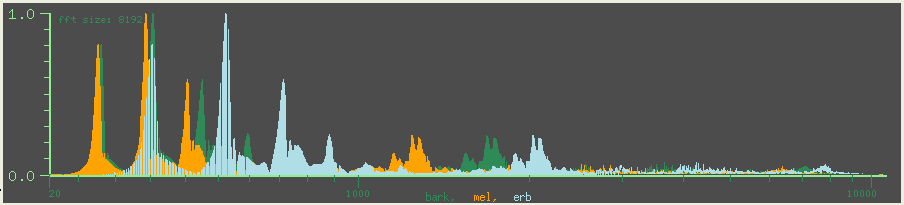
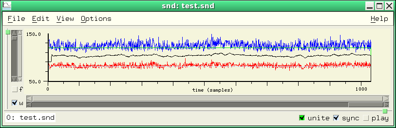
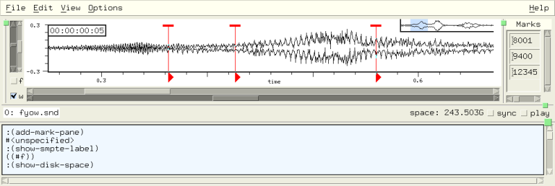

;; bess opens the DAC, continuously sends the following:
(* amp
(oscil carosc
(+ (hz->radians frequency)
(* index (oscil modosc
(hz->radians (* ratio frequency)))))))
Scheme, Ruby, and Forth Functions included with Snd |
| related documentation: | snd.html | extsnd.html | grfsnd.html | clm.html | sndlib.html | libxm.html | fm.html | index.html |
This file contains notes on the Scheme, Ruby, and Forth files included with Snd. To use any of these files, load them:
Scheme: (load "dsp.scm") or (load-from-path "dsp.scm") Ruby: load "dsp.rb" Forth: "dsp.fs" file-eval
To start Snd with
the file already loaded, snd -l v.scm, or put the load statement in your initialization file.
For help with Forth and Snd/CLM, see the Forth documentation section "Snd, CLM, and Fth".
| ||||||||||||||||||||||||||||||||||||||||||||||||||||||||||||||||||||||||||||||||||||||||||||||||||||||||||||||||||||||||||||||
analog-filter |
make-butterworth-lowpass order fcut
make-butterworth-highpass order fcut
make-butterworth-bandpass order flo fhi
make-butterworth-bandstop order flo fhi
make-chebyshev-lowpass order fcut (ripple-dB 1.0)
make-chebyshev-highpass order fcut (ripple-dB 1.0)
make-chebyshev-bandpass order flo fhi (ripple-dB 1.0)
make-chebyshev-bandstop order flo fhi (ripple-dB 1.0)
make-inverse-chebyshev-lowpass order fcut (loss-dB 60.0)
make-inverse-chebyshev-highpass order fcut (loss-dB 60.0)
make-inverse-chebyshev-bandpass order flo fhi (loss-dB 60.0)
make-inverse-chebyshev-bandstop order flo fhi (loss-dB 60.0)
make-bessel-lowpass order fcut
make-bessel-highpass order fcut
make-bessel-bandpass order flo fh
make-bessel-bandstop order flo fh
make-elliptic-lowpass order fcut (ripple-dB 1.0) (loss-dB 60.0)
make-elliptic-highpass order fcut (ripple-dB 1.0) (loss-dB 60.0)
make-elliptic-bandpass order flo fhi (ripple-dB 1.0) (loss-dB 60.0)
make-elliptic-bandstop order flo fhi (ripple-dB 1.0) (loss-dB 60.0)
;; fcut = cutoff frequency in terms of srate = 1.0, flo = low freq of band, fhi = high freq of band
analog-filter.scm has the usual IIR filters: Butterworth, Chebyshev, inverse Chebyshev, Bessel, and Elliptic filters in lowpass, highpass, bandpass, and bandstop versions. Each of the associated "make" functions returns a function ready for use as a filter (using the CLM filter generator). The filter order should be an even number; very high orders can cause numerical disaster! If you want to push these guys, be sure to build Snd with the --with-doubles configuration switch. The elliptic filters depend on GSL, so you'll also need GSL (Snd's configure script includes it by default, if possible).
(let* ((flt (make-elliptic-lowpass 8 .1))) ; 8th order elliptic with cutoff at .1 * srate
(map-channel flt)) ; flt is a clm filter generator
One quick way to see the frequency response of your filter is to create a sound that sweeps a sinewave upward in frequency, run it through the filter, then view the entire sound, treating the x axis as frequency in terms of srate = 1.0 (for convenience):
(define (filter-sweep flt) (let ((ind (new-sound "flt.snd" mus-next mus-bfloat 44100 1 #f 22050)) (phase 0.0) (freq 0.0) (incr (/ (* 2 pi) 44100.0))) ; go to srate/2 in 0.5 secs (map-channel ; 0.5 secs because we preset the length above to 22050 (lambda (y) ; ignore current value (0.0) (let ((val (* .5 (sin phase)))) (set! phase (+ phase freq)) (set! freq (+ freq incr)) (filter flt val)))) (set! (x-bounds) (list 0.0 0.5)))) ; view entire sound (filter-sweep (make-butterworth-lowpass 8 .1)) |
;; this shows filter-sweep with: (make-butterworth-lowpass 8 .1) (make-elliptic-lowpass 8 .1) (make-butterworth-bandpass 8 .1 .2) (make-elliptic-bandpass 8 .1 .2) |
see also: dsp examp moog maxf prc95 graphEq clm |
autosave |
auto-save cancel-auto-save
The auto-save code sets up a background process that checks periodically for
unsaved edits, and if any are found it saves them in a temporary file (the name is the base file name enclosed in "#...#" and placed in
the temp-dir directory).
The time between checks
is set by the variable auto-save-interval which defaults to 60.0 seconds.
To start auto-saving, (load "autosave.scm"). Thereafter (cancel-auto-save)
stops autosaving, and (auto-save) restarts it.
bess |
bess.scm is a Guile script (independent of Snd) that loads sndlib and xmlib into Guile,
opens the DAC, puts up a bunch of scale widgets, and starts two CLM oscils doing
frequency modulation in semi-real-time (how "real-time" it is depends on your
audio setup). This is a translation to the Sndlib/Libxm system of bess.cl in CLM.
Michael Scholz has contributed a Ruby translation of this with many improvements:
bess.rb. You may need to make bess.scm executable before running it: chmod 777 bess.scm.
If you get "command not found", you need to edit the path to guile in the source.
|
|
;; bess opens the DAC, continuously sends the following:
(* amp
(oscil carosc
(+ (hz->radians frequency)
(* index (oscil modosc
(hz->radians (* ratio frequency)))))))
|
bess1.scm and bess1.rb are scripts (independent of Snd), similar to bess.scm and bess.rb, that give you real-time GUI-based control over the fm-violin while it cycles around in a simple compositional algorithm. Both were written by Michael Scholz, based on CLM's bess5.cl and rt.lisp.
see also: fm |
bird |
bird start dur frequency freqskew amplitude freq-envelope amp-envelope bigbird start dur frequency freqskew amplitude freq-envelope amp-envelope partials one-bird beg maxdur func birdname make-birds :optional (output-file "test.snd")
bird.scm is a translation of the Sambox/CLM bird songs. The two instruments set
up a simple sine wave (bird) and simple waveshaping synthesis (bigbird). Use a
low-pass filter for distance effects (a bird song sounds really silly
reverberated). All the real information is in the amplitude and frequency
envelopes. These were transcribed from sonograms found in some bird guides and articles from
the Cornell Ornithology Lab.
Many of these birds were used in "Colony". To hear all the
birds, (make-birds). This writes the sequence out as "test.snd" using with-sound.
Waveshaping is described in Le Brun, "Digital Waveshaping Synthesis", JAES 1979 April, vol 27, no 4, p250.
The lines
... (coeffs (partials->polynomial (normalize-partials partials))) ... (polynomial coeffs (oscil os (env gls-env))))))
setup and run the waveshaping synthesis (in this case it's just a fast additive synthesis). partials->polynomial calculates the Chebyshev polynomial coefficients given the desired spectrum; the spectrum then results from driving that polynomial with an oscillator. Besides the bird guides, there are now numerous recordings of birds that can be turned into sonograms and transcribed as envelopes.
In CLM, the bird is:
(definstrument bird (startime dur frequency freq-skew amplitude freq-envelope amp-envelope &optional (lpfilt 1.0) (degree 0) (reverb-amount 0)) (multiple-value-bind (beg end) (times->samples startime dur) (let* ((amp-env (make-env amp-envelope amplitude dur)) (gls-env (make-env freq-envelope (hz->radians freq-skew) dur)) (loc (make-locsig :degree degree :distance 1.0 :reverb reverb-amount)) (fil (make-one-pole lpfilt (- 1.0 lpfilt))) (s (make-oscil :frequency frequency))) (run (loop for i from beg to end do (locsig loc i (one-pole fil (* (env amp-env) (oscil s (env gls-env)))))))))) |
The bird.scm version could easily include the one-pole filter and so on. The Ruby version of this file is bird.rb. Just for comparison, the bird instrument in Ruby is:
def bird(start, dur, frequency, freqskew, amplitude, freq_envelope, amp_envelope)
gls_env = make_env(freq_envelope, hz2radians(freqskew), dur)
os = make_oscil(frequency)
amp_env = make_env(amp_envelope, amplitude, dur)
beg = (srate() * start).round
len = (srate() * dur).round
local_data = make_vct len
vct_map!(local_data, Proc.new { || env(amp_env) * oscil(os, env(gls_env)) })
vct_add!($out_data, local_data, beg)
end
|
The Forth version (written by Michael Scholz) is:
instrument: bird { f: start f: dur f: freq f: freq-skew f: amp freq-env amp-envel }
freq make-oscil-1 { os }
amp-envel amp dur make-env { amp-env }
freq-env freq-skew hz>radians dur make-env { gls-env }
90e random 1e make-locsig { loc }
start dur run amp-env env gls-env env os oscil-1 f* i loc locsig loop
;instrument
|
clm-ins |
These are instruments from CLM translated for use in Snd. All expect to be called within with-sound or some equivalent environment. This set of instruments is a bit of a grab-bag; some are just examples of synthesis techniques; a few others are historical, rather than useful. If I were using, for example, the fm trumpet, I'd remove all the attack and decay parameters, moving that up a level to Common Music or whoever calls the trumpet, and combine several other parameters to reflect the desired output, rather than the details of the algorithm; 30 parameters could be reduced to less than 10, and the resulting instrument would be much easier to use. But, it is an historical artifact, so I'm reluctant to change it.
To try out any of these instruments, start Snd, set optimization to 6, load ws.scm and clm-ins.scm, then simply paste the with-sound call into the listener. It will automatically write the new sound file and open it in Snd.
anoi (file start dur :optional (fftsize 128) (amp-scaler 1.0) (r 6.28))
| ||
anoi is a stab at noise reduction
based on Perry Cook's Scrubber.m. It tracks an on-going average spectrum, then tries
to squelch that, obviously aimed at reducing background noise in an intermittent signal.
(with-sound () (anoi "now.snd" 0 2))
| ||
attract (beg dur amp c)
| ||
attract is a translation to CLM of an instrument developed by James McCartney (CMJ vol 21 no 3 p 6),
based on a "chaotic" equation.
'c' should be between 1 and 10 or thereabouts.
(with-sound () (attract 0 1 .1 1) (attract 1 1 .1 5))
| ||
bes-fm (beg dur freq amp ratio index)
| ||
bes-fm is J1(J1): (bes-j1 (* index (bes-j1 phase))); it uses the Bessel functions where FM uses sinusoids. J0 is also good in this context,
and the few other Jn options that I've tried were ok.
Scheme: (with-sound () (bes-fm 0 1 440 10.0 1.0 4.0)) Ruby: with_sound() do bes_fm(0, 0.5, 440, 5, 1, 8) endSo why does this work? My "back-of-the-envelope" guess is that the Bessel functions are basically a bump at the start followed by a decaying sinusoid, so the bump gives us a percussive attack, and the damped sinusoid gives us a dynamic spectrum, mimicking FM more or less. The Bessel functions I0, Jn, and Yn are built-in; Kn and In are implemented in Scheme in snd-test.scm. | ||
canter (beg dur freq amp ...)
| ||
canter is half of a bagpipe instrument developed by Peter Commons (the other portion is drone below).
The (required) trailing parameters are:
deg dis pcrev ampfun ranfun skewfun skewpc ranpc ranfreq indexfun atdr dcdr ampfun1 indfun1 fmtfun1 ampfun2 indfun2 fmtfun2 ampfun3 indfun3 fmtfun3 ampfun4 indfun4 fmtfun4Here is a portion of a bagpipe tune:
(let ((fmt1 '(0 1200 100 1000))
(fmt2 '(0 2250 100 1800))
(fmt3 '(0 4500 100 4500))
(fmt4 '(0 6750 100 8100))
(amp1 '(0 .67 100 .7))
(amp2 '(0 .95 100 .95))
(amp3 '(0 .28 100 .33))
(amp4 '(0 .14 100 .15))
(ind1 '(0 .75 100 .65))
(ind2 '(0 .75 100 .75))
(ind3 '(0 1 100 1))
(ind4 '(0 1 100 1))
(skwf '(0 0 100 0))
(ampf '(0 0 25 1 75 1 100 0))
(ranf '(0 .5 100 .5))
(index '(0 1 100 1))
(solid '(0 0 5 1 95 1 100 0))
(bassdr2 '(.5 .06 1 .62 1.5 .07 2.0 .6 2.5 .08 3.0 .56 4.0 .24 5 .98 6 .53 7
.16 8 .33 9 .62 10 .12 12 .14 14 .86 16 .12 23 .14 24 .17))
(tenordr '(.3 .04 1 .81 2 .27 3 .2 4 .21 5 .18 6 .35 7 .03 8 .07 9 .02 10 .025 11 .035)))
(with-sound (:reverb nrev)
(drone .000 4.000 115.000 (* .25 .500) solid bassdr2 .100 .500 .030 45.000 1 .010 10)
(drone .000 4.000 229.000 (* .25 .500) solid tenordr .100 .500 .030 45.000 1 .010 11)
(drone .000 4.000 229.500 (* .25 .500) solid tenordr .100 .500 .030 45.000 1 .010 9)
(canter .000 2.100 918 (* .25 .700) 45.000 1 .050 ampf ranf skwf
.050 .010 10 index .005 .005 amp1 ind1 fmt1 amp2 ind2 fmt2 amp3 ind3 fmt3 amp4 ind4 fmt4)
(canter 2.100 .300 688.5 (* .25 .700) 45.000 1 .050 ampf ranf skwf
.050 .010 10 index .005 .005 amp1 ind1 fmt1 amp2 ind2 fmt2 amp3 ind3 fmt3 amp4 ind4 fmt4)
(canter 2.400 .040 826.2 (* .25 .700) 45.000 1 .050 ampf ranf skwf
.050 .010 10 index .005 .005 amp1 ind1 fmt1 amp2 ind2 fmt2 amp3 ind3 fmt3 amp4 ind4 fmt4)
(canter 2.440 .560 459 (* .25 .700) 45.000 1 .050 ampf ranf skwf
.050 .010 10 index .005 .005 amp1 ind1 fmt1 amp2 ind2 fmt2 amp3 ind3 fmt3 amp4 ind4 fmt4)
(canter 3.000 .040 408 (* .25 .700) 45.000 1 .050 ampf ranf skwf
.050 .010 10 index .005 .005 amp1 ind1 fmt1 amp2 ind2 fmt2 amp3 ind3 fmt3 amp4 ind4 fmt4)
(canter 3.040 .040 619.65 (* .25 .700) 45.000 1 .050 ampf ranf skwf
.050 .010 10 index .005 .005 amp1 ind1 fmt1 amp2 ind2 fmt2 amp3 ind3 fmt3 amp4 ind4 fmt4)
(canter 3.080 .040 408 (* .25 .700) 45.000 1 .050 ampf ranf skwf
.050 .010 10 index .005 .005 amp1 ind1 fmt1 amp2 ind2 fmt2 amp3 ind3 fmt3 amp4 ind4 fmt4)
(canter 3.120 .040 688.5 (* .25 .700) 45.000 1 .050 ampf ranf skwf
.050 .010 10 index .005 .005 amp1 ind1 fmt1 amp2 ind2 fmt2 amp3 ind3 fmt3 amp4 ind4 fmt4)
(canter 3.160 .290 459 (* .25 .700) 45.000 1 .050 ampf ranf skwf
.050 .010 10 index .005 .005 amp1 ind1 fmt1 amp2 ind2 fmt2 amp3 ind3 fmt3 amp4 ind4 fmt4)
(canter 3.450 .150 516.375 (* .25 .700) 45.000 1 .050 ampf ranf skwf
.050 .010 10 index .005 .005 amp1 ind1 fmt1 amp2 ind2 fmt2 amp3 ind3 fmt3 amp4 ind4 fmt4)
(canter 3.600 .040 826.2 (* .25 .700) 45.000 1 .050 ampf ranf skwf
.050 .010 10 index .005 .005 amp1 ind1 fmt1 amp2 ind2 fmt2 amp3 ind3 fmt3 amp4 ind4 fmt4)
(canter 3.640 .040 573.75 (* .25 .700) 45.000 1 .050 ampf ranf skwf
.050 .010 10 index .005 .005 amp1 ind1 fmt1 amp2 ind2 fmt2 amp3 ind3 fmt3 amp4 ind4 fmt4)
(canter 3.680 .040 619.65 (* .25 .700) 45.000 1 .050 ampf ranf skwf
.050 .010 10 index .005 .005 amp1 ind1 fmt1 amp2 ind2 fmt2 amp3 ind3 fmt3 amp4 ind4 fmt4)
(canter 3.720 .180 573.75 (* .25 .700) 45.000 1 .050 ampf ranf skwf
.050 .010 10 index .005 .005 amp1 ind1 fmt1 amp2 ind2 fmt2 amp3 ind3 fmt3 amp4 ind4 fmt4)
(canter 3.900 .040 688.5 (* .25 .700) 45.000 1 .050 ampf ranf skwf
.050 .010 10 index .005 .005 amp1 ind1 fmt1 amp2 ind2 fmt2 amp3 ind3 fmt3 amp4 ind4 fmt4)
(canter 3.940 .260 459 (* .25 .700) 45.000 1 .050 ampf ranf skwf
.050 .010 10 index .005 .005 amp1 ind1 fmt1 amp2 ind2 fmt2 amp3 ind3 fmt3 amp4 ind4 fmt4)))
It is not easy to keep track of all these arguments in a long note-list; hence the
development of programs such as Score (Leland Smith), Pla (yers truly), and Common Music (Rick Taube).
The full note list is bag.clm in the CLM tarball.
| ||
cellon (beg dur freq amp ...)
| ||
cellon, developed by Stanislaw Krupowiecz, uses feedback FM as in some old synthesizers. There's a brief discussion of it in fm.html.
The trailing parameters are:
ampfun betafun beta0 beta1 betaat betadc ampat ampdc dis pcrev deg pitch1 glissfun glissat
glissdc pvibfreq pvibpc pvibfun pvibat pvibdc rvibfreq rvibpc rvibfun
and I actually don't know what they all do. I think they're dealing with attack and decay portions
of envelopes; in the old days we felt we had to store one envelope, then kludge around with attack and decay
timings to bash that envelope into the correct shape; this made instruments needlessly messy.
Here's a call:
(with-sound ()
(cellon 0 2 220 .1 '(0 0 25 1 75 1 100 0) '(0 0 25 1 75 1 100 0) .75 1.0 0 0 0 0 1 0 0 220
'(0 0 25 1 75 1 100 0) 0 0 0 0 '(0 0 100 0) 0 0 0 0 '(0 0 100 0)))
The use of x axis values between 0 and 100, rather than 0.0 and 1.0 is a dead give-away that
this is really ancient stuff.
| ||
clm-expsrc (beg dur input-file exp-ratio src-ratio amp :optional rev start-in-file)
| ||
clm-expsrc can stretch or compress a sound (using granular synthesis) while optionally changing its sampling rate.
'exp-ratio' sets the expansion amount (greater than 1.0 makes the sound longer), and
'src-ratio' sets the sampling rate change (greater than 1.0 makes it higher in pitch).
So to make a sound twice as long, but keep the pitch the same:
(with-sound () (clm-expsrc 0 4 "oboe.snd" 2.0 1.0 1.0))
'start-in-file' sets where we start reading the input file (in seconds); it defaults to 0.0.
| ||
drone (beg dur freq amp ampfun synth ampat ampdc amtrev deg dis rvibamt rvibfreq)
| ||
| This is the other half of Peter Common's bagpipe -- see canter above. 'synth' is a list of partials loaded into a table and read via table-lookup. | ||
expfil (start duration hopsecs rampsecs steadysecs file1 file2)
| ||
expfile interleaves two granular synthesis processes (two readers pasting in tiny sections
of their file, one after the other).
(with-sound ()
(expfil 0 2 .2 .01 .1 "oboe.snd" "fyow.snd")
(expfil 2 2 .01 .01 .02 "oboe.snd" "fyow.snd"))
| ||
exp-snd (file beg dur amp :optional (exp-amt 1.0) (ramp .4) (seglen .15) (sr 1.0) (hop .05) ampenv)
| ||
exp-snd is a granular synthesis instrument with envelopes on
the expansion amount ('exp-amt' as a list), segment ramp steepness ('ramp' as a list),
segment length ('seglen' as a list), hop length ('hop' as a list), amplitude ('ampenv'),
and resampling rate ('sr' as a list).
In the next example, the expansion amount in both calls goes from 1 to 3 over the course of the note,
the ramp time and segment lengths stay the same, the sampling rate changes from 2 to 0.5, and the hop
stays the same (.05 in the first, and .2 in the second).
(with-sound ()
(exp-snd "fyow.snd" 0 3 1 '(0 1 1 3) 0.4 .15 '(0 2 1 .5) 0.05)
(exp-snd "oboe.snd" 1 3 1 '(0 1 1 3) 0.4 .15 '(0 2 1 .5) 0.2))
| ||
fm-bell (beg dur frequency amplitude amp-env index-env index)
| ||
fm-bell is an FM instrument developed by Michael McNabb in Mus10 in the late '70s. It is intended
for low bell sounds (say middle C or so). The lines
(mod1 (make-oscil (* frequency 2))) (mod2 (make-oscil (* frequency 1.41))) (mod3 (make-oscil (* frequency 2.82))) (mod4 (make-oscil (* frequency 2.4))) (car1 (make-oscil frequency)) (car2 (make-oscil frequency)) (car3 (make-oscil (* frequency 2.4)))set up three FM pairs, car1 and mod1 handling the basic harmonic spectra, car2 and mod2 creating inharmonic spectra (using the square root of 2 more or less at random), and car3 and mod3 putting a sort of formant at the minor third (2.4 = a ratio of 12/5 = octave+6/5 = minor tenth).
(with-sound ()
(let ((fbell '(0 1 2 1.1000 25 .7500 75 .5000 100 .5000))
(abell '(0 0 .1000 1 10 .6000 25 .3000 50 .1500 90 .1000 100 0)))
(fm-bell 0.0 2.0 220.0 .5 abell fbell 0.5)))
| ||
fm-drum (beg dur freq amp ind :optional (high #f) (deg 0.0) (dist 1.0) (rev-amount 0.01))
| ||
The fm-drum uses "cascade FM" (see fm.html); it was developed by Jan Mattox.
(with-sound () (fm-drum 0 1.5 55 .3 5 #f) (fm-drum 1.5 1.5 66 .3 4 #t))
| ||
fm-insect (beg dur freq amp ampenv modfreq modskew modenv index indexenv fmindex ratio deg dist rev)
| ||
The fm-insect started as an attempt to get cicada sounds from FM (for the 5th movement of "Colony"), but
ended with:
(with-sound (:srate 22050)
(let ((locust '(0 0 40 1 95 1 100 .5))
(bug_hi '(0 1 25 .7 75 .78 100 1))
(amp '(0 0 25 1 75 .7 100 0)))
(fm-insect 0 1.699 4142.627 .015 amp 60 -16.707 locust 500.866 bug_hi .346 .500)
(fm-insect 0.195 .233 4126.284 .030 amp 60 -12.142 locust 649.490 bug_hi .407 .500)
(fm-insect 0.217 2.057 3930.258 .045 amp 60 -3.011 locust 562.087 bug_hi .591 .500)
(fm-insect 2.100 1.500 900.627 .06 amp 40 -16.707 locust 300.866 bug_hi .346 .500)
(fm-insect 3.000 1.500 900.627 .06 amp 40 -16.707 locust 300.866 bug_hi .046 .500)
(fm-insect 3.450 1.500 900.627 .09 amp 40 -16.707 locust 300.866 bug_hi .006 .500)
(fm-insect 3.950 1.500 900.627 .12 amp 40 -10.707 locust 300.866 bug_hi .346 .500)
(fm-insect 4.300 1.500 900.627 .09 amp 40 -20.707 locust 300.866 bug_hi .246 .500)))
| ||
fm-trumpet (beg dur ...)
| ||
This is Dexter Morrill's FM-trumpet; see CMJ feb 77 p51.
(with-sound () (fm-trumpet 0 .25))
As with many instruments from that era, it has a million parameters:
beg dur :key (frq1 250.0) (frq2 1500.0) (amp1 0.5) (amp2 0.1)
(ampatt1 0.03) (ampdec1 0.35) (ampatt2 0.03) (ampdec2 0.3)
(modfrq1 250.0) (modind11 0.0) (modind12 2.66)
(modfrq2 250.0) (modind21 0.0) (modind22 1.8)
(rvibamp 0.007) (rvibfrq 125.0) (vibamp 0.007) (vibfrq 7.0) (vibatt 0.6) (vibdec 0.2)
(frqskw 0.03) (frqatt 0.06)
(ampenv1 '(0 0 25 1 75 .9 100 0)) (ampenv2 '(0 0 25 1 75 .9 100 0))
(indenv1 '(0 0 25 1 75 .9 100 0)) (indenv2 '(0 0 25 1 75 .9 100 0))
(degree 0.0) (distance 1.0) (reverb-amount 0.005)
The pitch depends on the 'modfrq1' and 'modfrq2' parameters, as well as 'frq1' and 'frq2':
(with-sound () (fm-trumpet 0 1 :frq1 400 :frq2 1600 :modfrq1 400 :modfrq2 400))
| ||
fofins (beg dur frq amp uvib f0 a0 f1 a1 f2 a2 :optional (amp-env '(0 0 1 1 2 1 3 0)))
| ||
fofins is an implementation of FOF synthesis, taken originally from
fof.c of Perry Cook and the article
"Synthesis of the Singing Voice" by Bennett and Rodet in
"Current Directions in Computer Music Research" (MIT Press).
FOF synthesis sets up a wave with the desired spectrum (to mimic vocal formats, for example),
then calls wave-train to turn that into a tone.
fofins just adds an amplitude envelope and vibrato.
In the Scheme version, there is also an optional trailing vibrato envelope argument (this is slightly different from the CL version):
(with-sound () ; slowly ramp up the vibrato
(fofins 0 4 270 .1 0.005 730 .6 1090 .3 2440 .1
'(0 0 .5 1 3 .5 10 .2 20 .1 50 .1 60 .2 85 1 100 0)
'(0 0 40 0 75 .2 100 1) )
(fofins 0 4 (* 6/5 540) .1 0.005 730 .6 1090 .3 2440 .1
'(0 0 .5 .5 3 .25 6 .1 10 .1 50 .1 60 .2 85 1 100 0)
'(0 0 40 0 75 .2 100 1) )
(fofins 0 4 135 .1 0.005 730 .6 1090 .3 2440 .1
'(0 0 1 3 3 1 6 .2 10 .1 50 .1 60 .2 85 1 100 0)
'(0 0 40 0 75 .2 100 1)))
| ||
fullmix (infile :optional beg outdur inbeg matrix srate reverb-amount)
| ||
fullmix is a complicated way to mix stuff. It's built into the CL version of CLM, so there was clamor for some sort
of replacement in other versions of CLM.
fullmix provides a mixer that can handle any number
of channels of data in and out with scalers and envelopes on any path, sampling rate conversion,
reverb -- you name it!
'infile' is the file to be mixed:
(with-sound () (fullmix "pistol.snd")) ; this places pistol.snd at time 0
'beg' is the start time of the mix in the output sound;
'outdur' is the duration of the mixed-in portion in the output;
'inbeg' is where to start the mix in the input file:
(with-sound () (fullmix "pistol.snd" 1.0 2.0 0.25))
;; start at 0.25 in pistol.snd, include next 2 secs, put at time 1.0 in output
'srate' is the amount of sampling rate conversion to apply, and
'reverb' is the amount of the signal to send to the reverberator:
(with-sound (:reverb nrev) (fullmix "pistol.snd" 1.0 2.0 0.25 #f 2.0 0.1)) ; up an octave, lots of reverb!
The 'matrix' parameter is much harder to describe. It is either a number or a list of lists.
In the first case, that number is the amplitude scaler on the output:
(with-sound (:reverb nrev) (fullmix "pistol.snd" 1.0 2.0 0.25 0.2 2.0 0.1)) ; same but much softer (0.2 amp)
If 'matrix' is a list of lists, each element of the inner lists can be either a number or list a breakpoints (an envelope).
If a number, it is treated as an amplitude scaler for that input and output channel combination. Each inner list
represents an input channel, so if we have a stereo input file going to a stereo output file and we want
the channels to be mixed straight, but channel 0 at .5 amp and channel 1 at .75:
(with-sound (:channels 2) (fullmix "2a.snd" #f #f #f '((0.5 0.0) (0.0 0.75))))
;; ^ ^ ^ ^
;; | | | |
;; 0->0 | 1->0 |
;; 0->1 1->1
So, 2a.snd's first channel gets mixed into the output's first channel, scaled by 0.5,
and its second channel goes to the output second channel scaled by 0.75.
If we have four channels in and are writing a mono file, and want to mix in
only the second channel of the input:
(with-sound (:channels 1) (fullmix "4.aiff" #f #f #f '((0.0) (1.0) (0.0) (0.0))))The next complication is that each entry in the inner lists can also be a list of envelope breakpoints. In that case, an envelope is applied to that portion of the mix, rather than just a scaler:
(with-sound (:channels 2) (fullmix "oboe.snd" #f #f #f (list (list (list 0 0 1 1 2 0) 0.5))))
;; mono input so one list, envelope output chan 0, scale output chan 1 (two copies of input)
And finally(!) each inner list element can also be a CLM env generator:
(with-sound (:channels 2)
(fullmix "oboe.snd" 1 2 0 (list (list .1 (make-env '(0 0 1 1) :duration 2 :scaler .5)))))
Here's a Ruby example:
with_sound(:channels, 2, :statistics, true) do
fullmix("pistol.snd")
fullmix("oboe.snd", 1, 2, 0, [[0.1, make_env([0, 0, 1, 1], :duration, 2, :scaler, 0.5)]])
end
Now we need filters!
| ||
gong (beg dur freq amp :key (degree 0.0) (distance 1.0) (reverb-amount 0.005))
| ||
gong is an FM instrument developed by Paul Weineke.
Scheme: (with-sound () (gong 0 3 261.61 .3))
Ruby: with_sound() do gong(0, 3, 261.61, 0.6) end
| ||
gran-synth (beg dur freq grain-dur grain-hop amp)
| ||
gran-synth sets up a wave-train playing an enveloped
sinusoid (the "grain" in this case). 'grain-dur' sets the grain's length (in seconds),
'grain-hop' sets the frequency of the wave-train generator (how quickly the grain is
repeated), and 'freq' sets the grain sinusoid's frequency.
(with-sound () (gran-synth 0 1 300 .0189 .03 .4)) ; grain freq 300Hz, repetition rate 33Hz
| ||
graphEq (file :key beg dur or-beg amp (amp-env '(0 1.0 0.8 1.0 1.0 0.0)) (amp-base 1.0) ...)
| ||
graphEq is a sort of non-graphical graphical equalizer, developed by Marco Trevisani. It sets up a bank of formant
generators with an optional envelope on each formant, then filters and envelopes the input file.
Its trailing parameters are:
(offset-gain 0)
(gain-freq-list '((0 1 1 0) 440 (0 0 1 1) 660))
(filt-gain-scale 1)
(filt-gain-base 1)
(a1 .99)
(stats #t)
'a1' is the formant radius.
'gain-freq-list' is a list of gains and frequencies to
filter
The gains can be either numbers or envelopes (one or the other, not a mixture).
'offset-gain' is an offset (addition) to all the gains.
'filt-gain-scale' and 'filt-gain-base' are similar, but apply to the envelopes, if any.
'stats' prints encouraging numbers if #t.
(with-sound () (graphEq "oboe.snd")) ; accept all the defaults (Scheme is case sensitive)
If we want just steady bands:
(with-sound () (graphEq "oboe.snd" 0 0 0 1.0 '(0 1 1 0) 1.0 0 '(.1 440 .3 1500 .2 330)))
| ||
hammondoid (beg dur freq amp)
| ||
hammondoid is Perry Cook's additive-synthesis Hammond organ.
(with-sound () (hammondoid 0 1 440 .1))
| ||
jl-reverb (:optional (decay 3.0))
| ||
jl-reverb is a cavernous version of John Chowning's ancient reverberator. You can never get enough reverb!
(with-sound (:reverb jl-reverb) (fm-violin 0 .1 440 .1 :reverb-amount .1))
'decay' is the reverb decay time tacked onto the end of the output sound.
To pass parameters to a reverberator, use the with-sound parameter :reverb-data. So, if we want
5 seconds of decay:
(with-sound (:reverb jl-reverb :reverb-data '(5.0)) (fm-violin 0 .1 440 .1 :reverb-amount .1))
;; ^ this is passed as (jl-reverb 5.0)
| ||
lbj-piano (beg dur freq amp :key (pfreq frequency) (degree 45) (reverb-amount 0) (distance 1))
| ||
lbj-piano, developed by Doug Fulton, uses James A Moorer's piano spectra and
additive synthesis to mimic a piano.
(with-sound () (lbj-piano 0 2 110.0 .2))
Doug says, "The high notes sound pretty rotten" and thinks perhaps
one major problem is the lack of mechanical noise.
'pfreq' sets which spectrum to use; it defaults to whatever matches 'freq'.
(with-sound () (lbj-piano 0 2 110.0 .2 :pfreq 550))
| ||
metal (beg dur freq amp)
| ||
metal is another Perry Cook creation (HeavyMtl); it's an FM instrument:
(with-sound () (metal 0 1 440 .2))
| ||
nrev (:key (reverb-factor 1.09) (lp-coeff 0.7) (volume-1 1.0))
| ||
nrev, developed by Michael McNabb, is one of the more popular old-style reverbs.
It is much cleaner than jc-reverb.
(with-sound (:reverb nrev) (fm-violin 0 .1 440 .1 :reverb-amount .1))
'reverb-factor' controls the length of the decay -- it should not exceed 1.21 or so.
'lp-coeff' controls the strength of the low pass filter inserted in the feedback loop.
'volume-1' can be used to boost the reverb output.
(with-sound (:reverb nrev :reverb-data '(:lp-coeff 0.9 :volume-1 2.0))
(fm-violin 0 .1 440 .1 :reverb-amount .1))
| ||
pins (beg dur file amp ...)
| ||
pins is a simple implementation of the spectral modeling synthesis
of Xavier Serra and Julius Smith (sometimes known as "Sansy" or "SMS"). See
Serra, X., J. O. Smith. 1990. "Spectral Modeling Synthesis:A Sound Analysis/Synthesis Based on a Deterministic plus Stochastic Decomposition". Computer Music Journal, vol. 14(4), 1990.
The idea behind SMS is similar to the phase vocoder,
but tracks spectral peaks so that its resynthesis options are much more sophisticated.
The trailing parameters are:
:key (transposition 1.0) (time-scaler 1.0) (fft-size 256)
(highest-bin 128) (max-peaks 16) printit attack
'transposition' can be used to transpose a sound;
'time-scaler' changes the sound's duration;
'fft-size' may need to be larger if your sampling rate is 44100, or the input sound's
fundamental is below 300 Hz;
'highest-bin' sets how many fft bins we search for spectral peaks;
'max-peaks' sets how many peaks we track (at a maximum) through the sound;
'printit', if set to #t, causes the peak envelopes to be printied;
'attack' is an optional vct containing the attack portion of the new sound.
Scheme: (with-sound () (pins 0.0 1.0 "now.snd" 1.0 :time-scaler 2.0))
Ruby: with_sound() do pins(0, 1, "now.snd", 1, :time_scaler, 2) end
Xavier has a website devoted to this system:
Spectral Modeling Synthesis
which has moved to the CLAM site:
CLAM-SMSTools.
| ||
pluck (beg dur freq amp :optional (weighting .5) (lossfact .9))
| ||
pluck is based on
the Karplus-Strong algorithm as extended by David Jaffe and Julius Smith -- see
Jaffe and Smith, "Extensions of the Karplus-Strong Plucked-String Algorithm"
CMJ vol 7 no 2 Summer 1983, reprinted in "The Music Machine".
The basic idea is to fill an array with noise, then filter the array values as it is played repeatedly,
giving a sharp attack and a ringing decay, much like plucking a guitar. The CMJ article
gives many variations, changing pick position and so on. Jaffe's "Silicon Valley Breakdown"
makes great use of this instrument.
'weighting' is the ratio of the once-delayed to the twice-delayed samples. It defaults to .5 which gives a short decay;
anything other than .5 produces a longer decay. It should be between 0.0 and 1.0.
'lossfact' can be used to shorten decays. The most useful values are between .8 and 1.0.
(with-sound () (pluck 0 1 330 .3 .95 .95) (pluck 1 2 330 .3 .9 .9999) (pluck 3 2 330 .3 .8 .99))In Ruby: with_sound() do pluck(0.05, 0.1, 330, 0.1, 0.95, 0.95) end | ||
pqw-vox (beg dur freq spacing-freq amp ampfun freqfun freqscl phonemes formant-amps formant-shapes)
| ||
pqw-vox is an extension of Marc LeBrun's instrument vox (described below) to use phase-quadrature (single-sideband)
waveshaping. It uses both Chebyshev polynomial kinds to set up spectra-producing pairs of waveshapers that will
add in such a way as to cancel either the upper or lower set of sidebands. These are then ganged together as in
the vox instrument to mimic moving formants.
(with-sound ()
(pqw-vox 0 1 300 300 .1 '(0 0 50 1 100 0) '(0 0 100 1) .3 '(0 L 100 L) '(.5 .25 .1)
'((1 1 2 .5) (1 .5 2 .5 3 1) (1 1 4 .5))))
(with-sound ()
(pqw-vox 0 2 200 200 .1 '(0 0 50 1 100 0) '(0 0 100 1) .1 '(0 UH 100 ER) '(.8 .15 .05)
'((1 1 2 .5) (1 1 2 .5 3 .2 4 .1) (1 1 3 .1 4 .5)))
(pqw-vox 2 2 200 314 .1 '(0 0 50 1 100 0) '(0 0 100 1) .01 '(0 UH 100 ER) '(.8 .15 .05)
'((1 1 2 .5) (1 1 4 .1) (1 1 2 .1 4 .05)))
(pqw-vox 4 2 100 414 .2 '(0 0 50 1 100 0) '(0 0 100 1) .01 '(0 OW 50 E 100 ER) '(.8 .15 .05)
'((1 1 2 .5 3 .1 4 .01) (1 1 4 .1) (1 1 2 .1 4 .05))))
| ||
pqw (beg dur freq spacing-freq carrier-freq amplitude ampfun indexfun partials ...)
| ||
pqw is a simple phase-quadrature waveshaping instrument which produces asymmetric spectra.
The trailing parameters just set the usual degree, distance, and reverb values.
(with-sound () (pqw 0 .5 200 1000 .2 '(0 0 25 1 100 0) '(0 1 100 0) '(2 .1 3 .3 6 .5)))
To see the asymmetric spectrum most clearly, set the index function above to '(0 1 100 1).
| ||
resflt (beg dur driver ...)
| ||
resflt, developed by Richard Karpen and Xavier Serra, sets up three resonators (two-pole filters),
then drives them with either white noise or a sum-of-cosines pulse train.
Both can be used for vocal effects:
(with-sound ()
(resflt 0 1.0 0 0 0 #f .1 200 230 10 '(0 0 50 1 100 0) '(0 0 100 1)
500 .995 .1 1000 .995 .1 2000 .995 .1)
(resflt 1 1.0 1 10000 .01 '(0 0 50 1 100 0) 0 0 0 0 #f #f
500 .995 .1 1000 .995 .1 2000 .995 .1))
The trailing parameters are:
ranfreq noiamp noifun cosamp cosfreq1 cosfreq0 cosnum ampcosfun freqcosfun
frq1 r1 g1 frq2 r2 g2 frq3 r3 g3
:key (degree 0.0) (distance 1.0)(reverb-amount 0.005)
Set 'driver' to 0 to get the pulse train, or to 1 to get white noise.
In the latter case, 'ranfreq' is the random number generator frequency, 'noiamp' is its amplitude,
and 'noifun' is an amplitude envelope on its output (filter input)
In the pulse case, 'cosamp' is the pulse train amplitude, 'ampcosfun' the amplitude envelope,
'cosfreq0' and 'cosfreq1' set the frequency limits of 'freqcosfun',
and 'cosnum' sets the number of cosines in the pulse.
The three resonators are centered at 'frq1', 'frq2', 'frq3',
with pole-radius 'r1', 'r2', and 'r3' respectively, and
with gains of 'g1', 'g2', and 'g3'.
| ||
reson (beg dur freq amp ...)
| ||
reson is a vocal simulator developed by John Chowning. Its trailing parameters are:
numformants indxfun skewfun pcskew skewat skewdc vibfreq vibpc ranvibfreq ranvibpc
degree distance reverb-amount data
'data' is a list of lists of form
'(ampf resonfrq resonamp ampat ampdc dev0 dev1 indxat indxdc)
Needless to say, no one has ever written out these parameters by hand, so here's an all-time first:
(with-sound ()
(reson 0.0 1.0 440 .1 2 '(0 0 100 1) '(0 0 100 1) .1 .1 .1 5 .01 5 .01 0 1.0 0.01
'(((0 0 100 1) 1200 .5 .1 .1 0 1.0 .1 .1) ((0 1 100 0) 2400 .5 .1 .1 0 1.0 .1 .1))))
But JC got very nice vocal sounds from this -- I must have mistyped somewhere...
Here's another stab at it:
(with-sound ()
(reson 0.0 1.0 440 .1 2 '(0 1 100 0) '(0 0 100 1) .01 .1 .1 5 .01 5 .01 0 1.0 0.01
'(((0 1 100 1) 1000 .65 .1 .1 0 1.0 .1 .1) ((0 0 100 1) 2400 .15 .1 .1 0 1.0 .1 .1))))
If you find a good example, please send me it!
| ||
rhodey (beg dur freq amp :optional (base .5))
| ||
rhodey is another of Perry Cook's instruments (an electric piano), based on a pair of FM generators.
(with-sound () (rhodey 0 1 440 .2))
One of the oscillators is set to a frequency 15 times the requested 'freq', so for higher notes, you'll need to set the srate higher:
(with-sound (:srate 44100) (rhodey 0 1 880 .2))
| ||
rms gen sigbalance gen sig comparisongain gen sig rsmvalmake-rmsgain :optional (hp 10.0)
| ||
rms, balance, and gain are an implementation of the balance generators of CLM (based
on CSound originals, Scheme versions originally provided by Fabio Furlanete).
This section is a paraphrase of balance.html in the CLM tarball which was
written by Sam Hiesz.
balance, rms, and gain are used to track the RMS value of a signal and use
that information to scale some other signal. rms returns the RMS value;
gain takes a signal and an RMS value and modifies the signal to track the RMS
value; balance packages gain and rms into one function call.
make-rmsgain returns the generator used by rms, gain, and balance.
The 'hp' parameter sets the speed with which the balance process
tracks the RMS signal. An example is worth a zillion words:
| ||
scratch (beg file src-ratio turnlist)
| ||
scratch moves back and forth in a sound file according to
a list of turn times much like env-sound-interp.
With voice input, we can create a "Remembrance of Bugs Bunny":
Scheme: (with-sound () (scratch 0.0 "now.snd" 1.5 '(0.0 .5 .25 1.0)))
Ruby: with_sound() do scratch(0, "now.snd", 1.5, [0.0, 0.5, 0.25, 1.0]) end
I translate this as: "go forward from 0.0 to 0.5 secs, backwards to 0.25 secs, then forward to 1.0 secs".
| ||
spectra (beg dur freq amp ...)
| ||
spectra is an additive-synthesis instrument with vibrato and an amplitude envelope. It was intended originally
to be used with the spectra in spectra.scm (information laboriously gathered at the dawn of the computer era
by James A Moorer). One such spectrum is labelled "p-a4", so we can hear it via:
(load "spectr.scm")
(with-sound ()
(spectra 0 1 440.0 .1 p-a4 '(0.0 0.0 1.0 1.0 5.0 0.9 12.0 0.5 25.0 0.25 100.0 0.0)))
The trailing parameters are:
:optional (partials '(1 1 2 0.5))
(amp-envelope '(0 0 50 1 100 0))
(vibrato-amplitude 0.005)
(vibrato-speed 5.0)
(degree 0.0)
(distance 1.0)
(reverb-amount 0.005)
We can pass our own partials:
(with-sound ()
(spectra 0 1 440.0 .1 '(1.0 .4 2.0 .2 3.0 .2 4.0 .1 6.0 .1)
'(0.0 0.0 1.0 1.0 5.0 0.9 12.0 0.5 25.0 0.25 100.0 0.0)))
| ||
ssb-fm gen modsigmake-ssb-fm freq
| ||
| These two functions implement a sort of asymmetric FM using ideas similar to those used in ssb-am. | ||
stereo-flute (beg dur freq flow ...)
| ||
This is a physical model of a flute developed by Nicky Hind.
Scheme:
(with-sound (:channels 2)
(stereo-flute 0 1 440 0.55 :flow-envelope '(0 0 1 1 2 1 3 0))
(stereo-flute 1 3 220 0.55 :flow-envelope '(0 0 1 1 2 1 3 0)))
Ruby:
with_sound() do stereo_flute(0, 2, 440, 0.55, :flow_envelope, [0, 0, 1, 1, 2, 1, 3, 0]) end
The trailing parameters are:
:key (flow-envelope '(0 1 100 1))
(decay 0.01) ; additional time for instrument to decay
(noise 0.0356)
(embouchure-size 0.5)
(fbk-scl1 0.5) ; these two are crucial for good results
(fbk-scl2 0.55)
(offset-pos 0.764264) ; from 0.0 to 1.0 along the bore
(out-scl 1.0)
(a0 0.7) (b1 -0.3) ; filter coefficients
(vib-rate 5)
(vib-amount 0.03)
(ran-rate 5)
(ran-amount 0.03)
As with physical models in general, you may need to experiment a bit to find
parameters that work.
| ||
touch-tone (beg number)
| ||
This instrument produces telephone tones:
Scheme: (with-sound () (touch-tone 0.0 '(7 2 3 4 9 7 1)))
Ruby: with_sound() do touch_tone(0, [7, 2, 3, 4, 9, 7, 1]) end
It is just two sine waves whose frequencies are chosen based on the number pressed.
1 2 3 697 Hz
4 5 6 770 Hz
7 8 9 852 Hz
0 941 Hz
1209 1336 1477 Hz
For more than you really want to know about other such sounds, see
Telephone Tone Frequencies.
| ||
tubebell beg dur freq amp :optional (base 32.0)
| ||
Perry Cook's tubular bell:
(with-sound ()
(tubebell 0 2 440 .1 32.0)
(tubebell 2 2 220 .1 64.0)
(tubebell 4 2 660 .1 .032))
'base' is the envelope base:
(with-sound ()
(tubebell 0 2 440 .1 32.0)
(tubebell 2 2 220 .1 2048.0)
(tubebell 4 3 660 .1 .032))
| ||
two-tab beg dur freq amp ...
| ||
two-tab interpolates between two spectra.
(with-sound () (two-tab 0 2 440 .1 '(1.0 1.0) '(3.0 1.0)))
;; go from harmonic 1 to harmonic 3
The trailing parameters are:
:optional (partial-1 '(1.0 1.0 2.0 0.5))
(partial-2 '(1.0 0.0 3.0 1.0))
(amp-envelope '(0 0 50 1 100 0))
(interp-func '(0 1 100 0))
(vibrato-amplitude 0.005)
(vibrato-speed 5.0)
(degree 0.0)
(distance 1.0)
(reverb-amount 0.005)
'interp-func' determines how we interpolate between the two spectra. When
it is at 1.0, we get only the first, at 0.0 only the second.
(with-sound () (two-tab 0 2 440 .1 '(1.0 1.0) '(3.0 1.0) '(0 0 1 1 2 0) '(0 0 1 1)))
is the reverse of the earlier sound. To go out and back:
(with-sound () (two-tab 0 2 440 .1 '(1.0 1.0) '(3.0 1.0) '(0 0 1 1 2 0) '(0 0 1 1 2 0)))
| ||
vox (beg dur freq amp ampfun freqfun freqscl voxfun index vibscl)
| ||
vox is a translation of Marc LeBrun's MUS10 waveshaping voice instrument
using FM in this case.
The basic idea is that each of the three vocal formants is created by two
sets of waveshapers (or oscils producing FM), one centered on the even multiple of the base frequency closest to the desired formant frequency,
and the other on the nearest odd multiple. As the base frequency moves (due to vibrato or glissando),
these center frequencies are recalculated on each sample, and the respective amplitudes
set to reflect the distance of the current center frequency from the desired formant frequency. If a center frequency moves
enough that the previous upper member of the pair has
to become the lower member, the upper waveshaper (which has meanwhile ramped to zero amplitude), jumps
down to its new center. The male-speaker formant table was provided by Robert Poor (see the code
for the complete table of formants).
For details on waveshaping, see Le Brun, "Digital Waveshaping Synthesis", JAES 1979 April, vol 27, no 4, p250.
I used vox in the 5th movement of "Colony" and in "The New Music Liberation Army".
(with-sound ()
(let ((amp-env '(0 0 25 1 75 1 100 0))
(frq-env '(0 0 5 .5 10 0 100 1)))
(vox 0 2 170 .4 amp-env frq-env .1
'(0 E 25 AE 35 ER 65 ER 75 I 100 UH) '(.8 .15 .05) '(.005 .0125 .025) .05 .1)
(vox 2 2 110 .4 amp-env frq-env .5
'(0 UH 25 UH 35 ER 65 ER 75 UH 100 UH) '(.8 .15 .05) '(.005 .0125 .025))
(vox 4 2 300 .4 amp-env frq-env .1
'(0 I 5 OW 10 I 50 AE 100 OO) '(.8 .15 .05) '(.05 .0125 .025) .02 .1)))
Or in Ruby:
with_sound() do
amp_env = [0, 0, 25, 1, 75, 1, 100, 0]
frq_env = [0, 0, 5, 0.5, 10, 0, 100, 1]
vox(0, 2, 170, 0.4, amp_env, frq_env, 0.1,
[0, :E, 25, :AE, 35, :ER, 65, :ER, 75, :I, 100, :UH], 0.05, 0.1)
vox(2, 2, 300, 0.4, amp_env, frq_env, 0.1,
[0, :I, 5, :OW, 10, :I, 50, :AE, 100, :OO], 0.02, 0.1)
vox(4, 5, 600, 0.4, amp_env, frq_env, 0.1,
[0, :I, 5, :OW, 10, :I, 50, :AE, 100, :OO], 0.01, 0.1)
end
| ||
wurley beg dur freq amp
| ||
Perry Cook's Wurlitzer (I assume).
(with-sound () (wurley 0 1 440 .1))
| ||
za time dur freq amp length1 length2 feedback feedforwardzc time dur freq amp length1 length2 feedbackzn time dur freq amp length1 length2 feedforward
| ||
The "z" instruments demonstrate "zdelay" effects -- interpolating
comb, notch, and all-pass filters.
(with-sound () (zn 0 1 100 .1 20 100 .995)
(zn 1.5 1 100 .1 100 20 .995)
(zc 3 1 100 .1 20 100 .95)
(zc 4.5 1 100 .1 100 20 .95)
(za 6 1 100 .1 20 100 .95 .95)
(za 7.5 1 100 .1 100 20 .95 .95))
| ||
snd-test.scm has examples of calling all these instruments. For more examples of instruments, there are a variety of separate files such as v.scm, and clm23.scm has a translation of the CLM test instruments. It also has some comments about the differences between the CL and Scheme instruments.
see also: bird clm dlocsig examp fade fm fmv freeverb graphEq grani jcrev maraca maxf noise piano prc95 pvoc rt-examples singer sndwarp stochastic strad ws |
debug |
snd-debug ; enable some command shortcuts snd-trace ; enable trace output snd-break (message #f) ; set a breakpoint
debug.scm is a package of Guile-specific debugging aids. snd-break sets a breakpoint; if it is called, you drop into the Snd debugger. You can continue from the breakpoint, optionally returning any value you like. While in the break context (while the listener prompt says "break"), these functions are available:
break-go (returned-value #f) ; continue execution from breakpoint, return 'returned-value'
break-locals (stack-location 0) ; display local variables
break-local local-var (stack-location 0) ; print a local's value ('local-var' is a symbol or string)
break-backtrace (all #f) ; display stack at breakpoint (5 levels by default, 'all' = #t: all levels)
break-help ; display some help
break-quit ; exit current break level
break-quit! ; exit all break levels, return to top level
Here is a brief session in Snd's listener:
:(define (test-break a) (let ((b (+ a (snd-break "hiho")))) b))
#<unspecified>
:(define hi 123)
#<unspecified>
:(set! hi (test-break 1))
break:("hiho")
break:hi
123
break:(break-go 32)
:#<unspecified>
:hi
33
We put a breakpoint in the midst of an expression in the 'test-break' function, asking it to type "hiho" and drop into the debugger if it is executed. Then we call 'test-break' in an expression that sets the variable 'hi'. The breakpoint is hit, "hiho" gets reported, and we're placed in the debugger. The debugger is just the Snd listener, but with some extra context to implement the break support. After poking around, we call break-go with an argument of 32. This causes the original set! to continue with 32 plugged in where the snd-break call was, setting hi to 33.
snd-debug sets up some information needed by the 'bt' and 'lv' commands:
bt ; show backtrace lv (:optional obj) ; show local var(s)
These are active outside a breakpoint, so once set up, you can use them whenever an error occurs. snd-trace activates any tracing that you may have requested and redirects its output to the Snd listener. Here's how to trace fm-violin calls in a notelist:
(trace fm-violin)
(snd-trace (with-sound () (fm-violin 0 1 440 .1)))
To turn off the trace
(untrace fm-violin)
dlocsig |
dlocsig is a CLM generator developed by Fernando Lopez-Lezcano that can move sounds in two or three dimensions. Fernando's CLM/lisp-oriented documentation can be found in dlocsig.html. dlocsig.rb is Michael Scholz's translation of dlocsig to Ruby. It has lots of documentation and examples. If you load dlocsig.rb, a new menu is added named "Dlocsig". If you choose a path from this menu, you get a graphical user-interface to play with the various envelopes that drive dlocsig. Click the "With_Snd" button to apply the current path choices to the currently selected sound. Click "Gnuplot" to get a pretty picture of the path (in 3D!). A simple instrument that uses dlocsig is:
(define* (sinewave start-time duration freq amp :key (amp-env '(0 1 1 1))
(path (make-path :path '(-10 10 0 5 10 10))))
(let* ((vals (make-dlocsig :start-time start-time :duration duration :path path))
(dloc (car vals))
(beg (cadr vals))
(end (caddr vals)))
(let* ((osc (make-oscil :frequency freq))
(aenv (make-env :envelope amp-env :scaler amp :duration duration)))
(run
(lambda ()
(do ((i beg (1+ i)))
((= i end))
(dlocsig dloc i (* (env aenv) (oscil osc)))))))))
(with-sound (:channels 2) (sinewave 0 1.0 440 .5 :path (make-path '((-10 10) (0.5 0.5) (10 10)) :3d #f)))
|
draw |
draw.scm has examples of graphics-oriented extensions. The most useful one is make-current-window-display.
click-for-listener-help pos
| |
| click-for-listener-help is intended as a listener-click-hook function. It posts help about the closest entity it can find whenever you double click in the listener. Unfortunately, the help dialog is a bit clunky for a use like this, but the minibuffer has only one line, and tooltips are irritating in their own way; perhaps it should post the help at the bottom of the listener? | |
color-samples color :optional beg dur snd chnuncolor-samples :optional snd chn
| |
| color-samples displays the samples from sample 'beg' for 'dur' samples in 'color' whenever they're in the current time domain view. uncolor-samples cancels this action. Here is a representative picture. To activate this, add it to after-graph-hook. | |
display-previous-edits snd chn
| |
| display-previous-edits displays all the edits of the current sound, with older edits gradually fading away. To activate this, add it to after-graph-hook. | |
| make-current-window-display () | |
make-current-window-display
displays in the upper right corner the overall current sound and where the current window fits in it.
This information is implicit in the x axis zoom and position sliders, but a redundant graph doesn't hurt. If you click in that graph,
the cursor is moved to the clicked point.

If you're using a line cursor (if cursor-style is cursor-line), it may
collide at times with the little graph;
to get a more polite cursor, use smart-line-cursor.
| |
overlay-rms-env snd chn
| |
| overlay-rms-env displays the running rms value of the currently displayed data in red, overlayed upon the normal graph. To activate it, add it to the after-graph-hook. | |
overlay-sounds :rest sounds
| |
overlay-sounds overlays onto its first argument (a sound index) all subsequent arguments: (overlay-sounds 1 0 3).
| |
samples-via-colormap snd chn
| |
| samples-via-colormap displays the time domain graph using the current colormap (it is really just an example of colormap-ref). To activate this, add it to after-graph-hook. | |
smart-line-cursor snd chn tracking
| |
| smart-line-cursor is a cursor-style function that tries not to overwrite the thumbnail graph drawn by make-current-window-display. | |
dsp |
dsp.scm is a DSP grabbag, mostly filters. There are more than 100 functions to describe here, so an alphabetical list is just a jumble of names. Instead, I've tried to divide them into several vague categories: FFTs, FIR filters, IIR filters, synthesis, sound effects, sampling rate conversion, linear algebra and stats, and scanned synthesis.
If you're new to DSP, I recommend Lyons' "Understanding Digital Signal Processing" and Steiglitz, "A
Digital Signal Processing Primer";
there are many good books
on advanced calculus -- I especially liked Hildebrand, "Advanced Calculus for Applications", but it may
be out of print (this was about 25 years ago, I think); a great book on complex analysis is Needham, "Visual
Complex Analysis"; Poole's "Linear Algebra" is a very straightforward
introduction; also Halmos, "Linear Algebra Problem Book"; the most enjoyable
Fourier Analysis book is by Körner, but you don't want to start with it.
For the ambitious, there is the encyclopedic set of books by Julius Smith.
His "Mathematics of the DFT" is a very clear introduction.
dht data
| |||||||||||||||||||||||||||
| dht is the slow form of the Hartley transform, taken from Perry Cook's SignalProcessor.m. The Hartley transform is a kind of Fourier transform. | |||||||||||||||||||||||||||
|
display-bark-fft undisplay-bark-fft | |||||||||||||||||||||||||||
|
display-bark-fft shows the current spectrum in the "lisp" graph in three
different frequency scales: bark, mel, and erb, each in a different color.
The default ticks follow the bark scale; click anywhere in the lisp graph
to switch to a different tick scale choice. undisplay-bark-fft turns this
graph off.
 | |||||||||||||||||||||||||||
dolph n gamma
| |||||||||||||||||||||||||||
| dolph is the Dolph-Chebyshev fft data window, taken from Richard Lyons, "Understanding DSP". The C version used by Snd/CLM is in clm.c. Another version of the same function, taken (with a few minor changes) from Julius Smith's "Spectral Audio", is named dolph-1. | |||||||||||||||||||||||||||
down-oct n :optional snd chnstretch-sound-via-dft factor :optional snd chn
| |||||||||||||||||||||||||||
| down-oct tries to move a sound down by a factor of n (assumed to be a power of 2, 1 = no change) by goofing with the fft data, then inverse ffting. I think this is "stretch" in DSP jargon; to interpolate in the time domain we're squeezing the frequency domain. The power-of-2 limitation is based on the underlying fft function's insistence on power-of-2 data sizes. A more general version of this is stretch-sound-via-dft, but it's extremely slow. | |||||||||||||||||||||||||||
goertzel freq :optional beg durfind-sine freq beg dur
| |||||||||||||||||||||||||||
goertzel and find-sine find the amplitude of a single component of a spectrum ('freq').
:(find-sine 550.0 0.0 (frames))
(0.00116420908413177 0.834196665512423) ; car is amplitude, cadr is phase in radians
:(* (goertzel 550.0 0.0 (frames)) (/ 2.0 (frames)))
0.00116630805062827
| |||||||||||||||||||||||||||
periodogram N
| |||||||||||||||||||||||||||
| periodogram (the "Bartlett" version, I think) runs over an entire file, piling up 'N' sized junks of data, then displays the results in the "lisp graph" area; this needs a lot of work to be useful! | |||||||||||||||||||||||||||
scentroid file :key (beg 0.0) dur (db-floor -40.0) (rfreq 100.0) (fftsize 4096)
| |||||||||||||||||||||||||||
| scentroid is Brett Battey's CLM scentroid instrument, translated to Snd/Scheme. To paraphrase Brett: scentroid returns (in a vct) the continuous spectral centroid envelope of a sound. The spectral centroid is the "center of gravity" of the spectrum, and it has a rough correlation to our sense of "brightness" of a sound. 'db-floor' sets a lower limit on which frames are included in the analysis. 'rfreq' sets the number of measurements per second. 'fftsize' sets the fft window size (a power of 2). | |||||||||||||||||||||||||||
spot-freq samp :optional snd chn
| |||||||||||||||||||||||||||
spot-freq is a simple first-pass at using autocorrelation for
pitch tracking; it's easily fooled, but could probably be made relatively robust.
:(spot-freq 10000) ; this is oboe.snd, in about .5 secs
555.262096862931 ; 555Hz is correct(!)
In the next example, we add spot-freq to the mouse-click-hook (in Ruby),
so that each time we click somewhere in the graph, the pitch at that point is reported:
$mouse_click_hook.add_hook!("examp-cursor-hook") do |snd, chn, button, state, x, y, axis|
if axis == Time_graph
report_in_minibuffer(format("(freq: %.3f)", spot_freq(cursor(snd, chn))))
end
end
| |||||||||||||||||||||||||||
rotate-phase func :optional snd chnzero-phase :optional snd chn
| |||||||||||||||||||||||||||
These are fft phase manipulators taken from the phazor package of Scott McNab.
zero-phase takes ffts, sets all phases to 0.0, then unffts. rotate-phase
is similar, but applies 'func' to the phases.
(rotate-phase (lambda (x) 0.0)) ; same as (zero-phase)
(rotate-phase (lambda (x) (random 3.1415))) ; randomizes phases
(rotate-phase (lambda (x) x)) ; returns original
(rotate-phase (lambda (x) (- x))) ; reverses original
or in Ruby:
rotate_phase(lambda {|x| random(PI) }) # randomizes phases
and Forth:
lambda: <{ x }> pi random ; #f #f rotate-phase \ randomizes phases
| |||||||||||||||||||||||||||
z-transform rl size zfractional-fourier-transform rl im size angle
| |||||||||||||||||||||||||||
z-transform performs a z-transform returning a vector (to accommodate complex results):
:(define d0 (make-vct 8))
#<unspecified>
;; and similarly for d1 and d2 ...
:(vct-set! d0 2 1.0)
1.0
:(vct-set! d1 2 1.0)
1.0
:(z-transform d0 8 (exp (make-rectangular 0.0 (* .25 pi))))
;; Ruby: z_transform(d0, 8, exp(Complex(0.0, (2.0 / 8) * PI)))
#(1.0 0.0+1.0i -1.0 0.0-1.0i 1.0 0.0+1.0i -1.0 0.0-1.0i)
:(mus-fft d1 d2 8)
#<vct[len=8]: 1.000 0.000 -1.000 -0.000 1.000 0.000 -1.000 -0.000>
:d2
#<vct[len=8]: 0.000 1.000 0.000 -1.000 0.000 1.000 0.000 -1.000>
which is a complicated way of showing that if 'z' is e^2*pi*/n, you get a fourier transform.
fractional-fourier-transform is the slow (DFT) version
of the fractional Fourier Transform. If 'angle' is 1.0, you get a fourier transform.
| |||||||||||||||||||||||||||
make-highpass fc :optional length, highpass f inmake-lowpass fc :optional length, lowpass f inmake-bandpass flo fhi :optional length, bandpass f inmake-bandstop flo fhi :optional length, bandstop f inmake-differentiator :optional length, differentiator f in | |||||||||||||||||||||||||||
make-lowpass and lowpass provide FIR low pass filtering, and similarly for the other four choices.
The order chosen is twice the 'length'; 'fc', 'flo', and 'fhi' are
the edge frequencies in terms of srate = 2 * pi.
(let ((hp (make-bandpass (* .1 pi) (* .2 pi))))
(map-channel (lambda (y)
(bandpass hp y))))
| |||||||||||||||||||||||||||
make-hilbert-transform :optional lengthhilbert-transform f inhilbert-transform-via-fft :optional snd chnsound->amp-env :optional snd chn
| |||||||||||||||||||||||||||
| These functions perform the hilbert transform using either an FIR filter (the first two) or an FFT. One example of its use is sound->amp-env (from R Lyons). Another is the ssb-am generator in CLM. | |||||||||||||||||||||||||||
invert-filter coeffs
| |||||||||||||||||||||||||||
invert-filter inverts an FIR filter.
Say we previously filtered a sound via
(filter-channel (vct .5 .25 .125))
and our mouse is broken so we can't use the Undo menu, and we've forgotten that
we could type (undo). Nothing daunted, we use:
(filter-channel (invert-filter (vct .5 .25 .125)))
There are a million gotchas here. The primary one is that the inverse filter
can "explode" -- the coefficients can grow without bound. For example, any
filter returned by spectrum->coeffs will be problematic.
| |||||||||||||||||||||||||||
| make-spencer-filter | |||||||||||||||||||||||||||
| This returns a CLM fir-filter generator with the standard "Spencer Filter" coefficients. | |||||||||||||||||||||||||||
notch-sound freqs :optional order s c widthnotch-channel freqs :optional order beg dur s c e trunc widthnotch-selection freqs :optional order width
| |||||||||||||||||||||||||||
notch-channel, notch-selection, and notch-sound are aimed at noise reduction.
Each takes a list of frequencies (in Hz), and an optional filter order, and
notches out each frequency. The sharpness of the notch is settable
explicitly via the 'width' argument, and implicitly via the
filter 'order'. A common application cancels 60 Hz hum:
(notch-channel (let ((freqs '()))
(do ((i 60 (+ i 60)))
((= i 3000))
(set! freqs (cons i freqs))) (reverse freqs)))
Here we've built a list of multiples of 60 and passed it to notch-channel. Its default notch
width is 2 Hz, and its default order tries to maintain that width given the channel's sampling rate,
so the default filter order can be very high (65536). The filtering is normally done via
convolution (by CLM's convolve generator), so a high filter order is not a big deal. In ideal
cases, this can reduce the hum and its harmonics by about 90%.
But, if the hum is not absolutely stable, you'll probably want wider notches:
(notch-channel (let ((freqs '()))
(do ((i 60 (+ i 60)))
((= i 3000))
(set! freqs (cons i freqs))) (reverse freqs)) 1024)
The order of 1024 means we get 20 Hz width minima (44100 Hz srate), so this
notches out much bigger chunks of the spectrum. You get 98% cancellation, but
also lose more of the original signal.
| |||||||||||||||||||||||||||
spectrum->coeffs order spectrumfltit-1 order spectr
| |||||||||||||||||||||||||||
spectrum->coeffs is a
version of Snd's very simple spectrum->coefficients procedure ("frequency sampling").
It returns the FIR filter coefficients given the filter 'order' and desired 'spectrum' (a vct).
An example of its use is fltit-1.
(map-channel (fltit-1 10 (vct 0 1.0 0 0 0 0 0 0 1.0 0)))
| |||||||||||||||||||||||||||
make-volterra-filter acoeffs bcoeffsvolterra-filter flt x
| |||||||||||||||||||||||||||
volterra-filter and
make-volterra-filter implement one form
of a common non-linear FIR filter.
This version is taken from Monson Hayes "Statistical DSP and Modeling";
it is a slight specialization of the form mentioned by J O Smith and others.
The 'acoeffs' apply to the linear terms, and the 'bcoeffs' to the quadratic.
(let ((flt (make-volterra-filter (vct .5 .1) (vct .3 .2 .1))))
(map-channel (lambda (x) (volterra-filter flt x))))
| |||||||||||||||||||||||||||
make-biquad a0 a1 a2 b1 b2
| |||||||||||||||||||||||||||
| make-biquad is a wrapper for make-filter to return a biquad filter section. | |||||||||||||||||||||||||||
cascade->canonical coeffs
| |||||||||||||||||||||||||||
| cascade->canonical converts cascade coefficients to canonical form (the form used by CLM's filter generator). 'coeffs' is a list of filter coefficients; the function returns a vct, ready for make-filter. | |||||||||||||||||||||||||||
make-butter-high-pass fq, make-butter-hp M fcmake-butter-low-pass fq, make-butter-lp M fcmake-butter-band-pass fq bw, make-butter-bp M f1 f2make-butter-band-reject fq bw, make-butter-bs M f1 f2
| |||||||||||||||||||||||||||
These functions produce Butterworth filters, returning a CLM filter generator.
The first named ones (make-butter-high-pass et al) are taken from Sam Heisz's CLM version
of Paris Smaragdis's Csound version of Charles Dodge's code from "Computer Music: synthesis, composition, and performance".
The second set (make-butter-lp et al) provide arbitrary order Butterworths.
'M' * 2 is the filter order, 'f1' and 'f2' are the band edges in Hz.
(clm-channel (make-butter-bp 3 1000 2000))
(filter-sound (make-butter-low-pass 500.0))
See also the notch filter in new-effects.scm, and of course analog-filter.scm: the latter renders this section obsolete.
| |||||||||||||||||||||||||||
make-iir-high-pass-2 fc :optional dinmake-iir-low-pass-2 fc :optional dinmake-iir-band-pass-2 f1 f2make-iir-band-stop-2 f1 f2make-eliminate-hum :optional (hum-freq 60.0) (hum-harmonics 5) (bandwidth 10)eliminate-hum gen x0make-peaking-2 f1 f2 m
| |||||||||||||||||||||||||||
More IIR filters. Except for make-peaking-2, each function returns a CLM filter generator.
(let ((hummer (make-eliminate-hum)))
(map-channel (lambda (x) (eliminate-hum hummer x))))
make-peaking (a bandpass filter) returns a function suitable for map-channel (it takes one argument, the current sample,
and returns a sample):
(let ((peaker (make-peaking-2 500 1000 1.0)))
(map-channel peaker))
In this case 'm' is the gain in the pass band.
Use the functions in analog-filter.scm, rather than this group.
| |||||||||||||||||||||||||||
make-mfilter :key (frequency 1000) (decay .99)mfilter gen :optional x-input y-input
| |||||||||||||||||||||||||||
These implement a high Q two-pole filter
developed by Max Mathews and Julius Smith. It is very
similar to CLM's formant.
A slightly different view of the same filter is provided
by maxf.
(with-sound () ; filter "now.snd" with default freq/decay (let ((rd (make-sample-reader 0 "now.snd")) (m (make-mfilter))) (run (lambda () (do ((i 0 (1+ i))) ((= i 10000)) (outa i (mfilter m (* .1 (rd))) *output*)))))) (with-sound () ; sweep center freq from 100Hz to 2000Hz (let ((rd (make-sample-reader 0 "oboe.snd")) (m (make-mfilter :decay .99 :frequency 1000)) (e (make-env '(0 100 1 2000) :end 10000))) (run (lambda () (do ((i 0 (1+ i))) ((= i 10000)) (outa i (mfilter m (* .1 (rd))) *output*) (set! (mflt-eps m) (* 2.0 (sin (/ (* pi (env e)) (mus-srate)))))))))) | |||||||||||||||||||||||||||
cosine-summation gen rkosine-summation gen r k
| |||||||||||||||||||||||||||
|
cosine-summation
is a variation on Moorer's sine-summation;
the generating formula is much simpler, but the result is the same. This
can also be viewed as a version of the sum-of-cosines generator, giving control
over the ratio between successive cosines in the sum (i.e. the "r" parameter in
sine-summation, applied within the sum-of-cosines output).
kosine-summation is a variation on cosine-summation; it includes a sort of "FM index" parameter ('k', hence the generator name) to vary the harmonic content at run-time. There is also a sinc-train generator in clm.html. In both cases, the associated "make" function is actually just make-oscil suitably renamed (make-cosine-summation, etc).
(let ((gen (make-kosine-summation 100.0)))
(map-channel (lambda (y) (* .2 (kosine-summation gen 0.5 5.0)))))
| |||||||||||||||||||||||||||
legendre-sum angle nfejer-sum angle npoussin-sum angle njackson-sum angle n
| |||||||||||||||||||||||||||
These functions
produce a band-limited pulse-train.
(let ((angle 0.0))
(map-channel (lambda (y)
(let ((val (fejer-sum angle 3)))
(set! angle (+ angle .1))
(* .1 val)))))
fejer-sum harmonics are scaled by (/ (- n i) (+ n 1)); decreasing evenly.
poussin-sum harmonic amplitudes start at 0, go up to a peak at n, then decrease to 0.
(This section of dsp.scm also has an implementation of signum -- perhaps I should
make it a built-in function?).
| |||||||||||||||||||||||||||
sum-of-n-sines angle nsum-of-n-odd-sines angle nsum-of-n-odd-cosines angle n
| |||||||||||||||||||||||||||
These three functions produce various spectra, similar to the cosine-summation function above.
(let ((angle 0.0))
(map-channel (lambda (y)
(let ((val (sum-of-n-sines angle 3)))
(set! angle (+ angle .1))
(* .1 val)))))
| |||||||||||||||||||||||||||
band-limited-sawtooth x a N fiband-limited-square-wave theta n
| |||||||||||||||||||||||||||
| band-limited-square-wave uses the formula tanh(n * sin(theta)) ('n' here is a float). As 'n' increases, you get closer to a square-wave. band-limited-sawtooth is apparently originally from Tim Stilson and Julius Smith (I got it via Alexander Kritov); it had the name "discrete summation formula" which conveys nothing to me. The parameter 'a' is more or less the amplitude, 'N' should be between 1 and 10, 'fi' is the phase increment, 'x' the current phase. | |||||||||||||||||||||||||||
make-asyfm :key (frequency 440.0) (initial-phase 0.0) (ratio 1.0) (r 1.0) (index 1.0)asyfm-J gen inputasyfn-I gen input
| |||||||||||||||||||||||||||
These functions are
versions of the CLM asymmetric-fm generator.
asyfm-I is the Modifier Bessel version of this generator. In both
cases, the 'r' parameter is accessible, so it's easy to experiment with
the moving formant idea mentioned in the original article ('r' should be greater than 0.0).
(let ((gen (make-asyfm :frequency 2000 :ratio .1))
(e (make-env '(0 0.5 1 1.5) :end (frames))))
(map-channel (lambda (n)
(set! (asyfm-r gen) (env e))
(asyfm-J gen 0.0))))
| |||||||||||||||||||||||||||
ssb-bank old-freq new-freq pairs-1 :optional (order 40) (bw 50.0) (beg 0) dur snd chn edposssb-bank-env old-freq new-freq freq-env pairs-1 :optional (order 40) (bw 50.0) (beg 0) dur snd chn edposshift-channel-pitch freq :optional (order 40) (beg 0) dur snd chn edpos
| |||||||||||||||||||||||||||
The
ssb-bank functions provide single-sideband amplitude modulation, and pitch/time changes
based on the ssb-am generator.
If you run ssb-am on some input signal, the signal is shifted in pitch by
the 'freq' amount. The higher the 'order', the better the sideband cancellation
(amplitude modulation creates symmetrical sidebands, one of which is cancelled by the ssb-am
generator). ssb-bank uses a bank of ssb-am generators, each with its own bandpass filter to
shift a sound's pitch without changing its duration;
the ssb-am generators do the pitch
shift, and the filters pick out successive harmonics,
so each harmonic gets shifted individually (i.e. harmonic relations are maintained despite the pitch shift).
For an oboe at 557 Hz, good values are:
(ssb-bank 557 new-freq 6 40 50).
For a person talking at ca. 150 Hz:
(ssb-bank 150 300 30 100 30) or
(ssb-bank 150 100 40 100 20).
To get a duration change without a pitch change, use this function
followed by sampling rate conversion back to the original pitch:
(define (stretch-oboe factor)
(ssb-bank 557 (* factor 557) 7 40 40)
(src-sound (/ 1.0 factor)))
ssb-bank-env is the same as ssb-bank, but includes a frequency envelope:
(ssb-bank-env 557 880 '(0 0 1 100.0) 7).
shift-channel-pitch applies an ssb-am generator to a sound's channel (this
is a variant of amplitude modulation).
'freq' and 'order' are the corresponding arguments to make-ssb-am.
There is a dialog that runs ssb-bank in snd-motif.scm: create-ssb-dialog.
| |||||||||||||||||||||||||||
any-random :optional egaussian-distribution spareto-distribution agaussian-envelope s
| |||||||||||||||||||||||||||
any-random provides the same output as rand if the latter's
envelope (distribution function) argument is used, but using a slightly different method
to generate the numbers.
gaussian-envelope makes a gaussian distribution envelope suitable for rand.
Also included is inverse-integrate, a version of
CLM's distribution-to-weighting function.
(map-channel (lambda (y) (any-random 1.0 '(0 1 1 1)))) ; uniform distribution
(map-channel (lambda (y) (any-random 1.0 '(0 0 0.95 0.1 1 1)))) ; mostly toward 1.0
(let ((g (gaussian-distribution 1.0))) (map-channel (lambda (y) (any-random 1.0 g))))
(let ((g (pareto-distribution 1.0))) (map-channel (lambda (y) (any-random 1.0 g))))
In Ruby:
map_channel(lambda do |y| any_random(1.0, [0, 1, 1, 1])) # uniform distribution
map_channel(lambda do |y| any_random(1.0, [0, 0, 0.95, 0.1, 1, 1])) # mostly toward 1.0
let(gaussian-distribution(1.0)) do |g| map_channel(lambda do |y| any_random(1.0, g)) end
let(pareto-distribution(1.0)) do |g| map_channel(lambda do |y| any_random(1.0, g)) end
| |||||||||||||||||||||||||||
adsat size :optional beg dur snd chnfreqdiv n :optional snd chn
| |||||||||||||||||||||||||||
These two functions come from a package of effects developed by sed_sed@my-dejanews.com.
adsat is "adaptive saturation", and freqdiv is "frequency division".
(freqdiv n) repeats each nth sample 'n' times, clobbering the intermediate samples: (freqdiv 8).
It turns your sound into a bunch of square waves.
| |||||||||||||||||||||||||||
brighten-slightly amount :optional snd chn
| |||||||||||||||||||||||||||
| brighten-slightly is a slight simplification of contrast-enhancement. | |||||||||||||||||||||||||||
| chordalize () | |||||||||||||||||||||||||||
chordalize uses harmonically-related comb-filters to bring out a chord in a sound.
The comb filters are controled by chordalize-amount (the default is .95),
chordalize-base (the default is 100 Hz), and chordalize-chord
(the default is (list 1 3/4 5/4)). chordalize returns a function suitable
for map-channel:
(map-channel (chordalize))chordalize seems to work best with vocal sounds. | |||||||||||||||||||||||||||
| chorus () | |||||||||||||||||||||||||||
chorus tries to produce the chorus sound effect, but it needs work.
It is controlled by the following variables:
chorus-size (5) ; number of flangers
chorus-time (.05) ; scales delay line length (flanger)
chorus-amount (20.0) ; amp of rand-interp (flanger)
chorus-speed (10.0) ; freq of rand-interp (flanger)
| |||||||||||||||||||||||||||
harmonicizer freq coeffs pairs :optional (order 40) (bw 50.0) (beg 0) dur snd chn edpos
| |||||||||||||||||||||||||||
harmonicizer splits a sound into separate sinusoids, then splits each resultant harmonic
into a set of harmonics, then reassembles the sound. The basic idea is very similar to
ssb-bank, but harmonicizer splits harmonics, rather than pitch-shifting them.
The result can be a brighter or richer sound.
(harmonicizer 550.0 (list 1 .5 2 .3 3 .2) 10)
'coeffs' is a list of harmonic-number and amplitude pairs, describing the spectrum
produced by each harmonic. 'pairs' controls how many bands are used to split the original sound.
'order' is the bandpass filter's order in each such pair, and 'bw' controls its bandwidth.
| |||||||||||||||||||||||||||
lpc-coeffs data n m
| |||||||||||||||||||||||||||
| lpc-coeffs returns 'm' LPC coeffients (in a vector) given 'n' data points in the vct 'data'. | |||||||||||||||||||||||||||
lpc-predict data n coeffs m nf :optional clipped
| |||||||||||||||||||||||||||
lpc-predict takes the output of lpc-coeffs ('coeffs') and the length thereof ('m'),
'n' data points 'data', and produces 'nf' new data points (in a vct) as its prediction.
If 'clipped' is #t, the new data is assumed to be outside -1.0 to 1.0.
:(lpc-predict (vct 0 1 2 3 4 5 6 7) 8 (lpc-coeffs (vct 0 1 2 3 4 5 6 7) 8 4) 4 2)
#<vct[len=2]: 7.906 8.557>
| |||||||||||||||||||||||||||
spike :optional snd chn
| |||||||||||||||||||||||||||
| spike returns a product (rather than the more usual sum) of succesive samples, with the current sample's sign; this normally produces a more spikey output. The more successive samples we include in the product, the more we limit the output to pulses placed at (just after) wave peaks. In spike's case, just three samples are multiplied. See also the volterra filter. | |||||||||||||||||||||||||||
unclip-channel :optional snd chn
| |||||||||||||||||||||||||||
| unclip-channel tries to reconstruct clipped portions of a sound by using LPC to predict (backwards and forwards) the lost samples. This works much better than the sinusoidal reconstruction used in the appendix on Noise Reduction. | |||||||||||||||||||||||||||
unclip-sound :optional snd
| |||||||||||||||||||||||||||
| unclip-sound calls unclip-channel on each channel in the sound 'snd'. | |||||||||||||||||||||||||||
linear-src-channel srinc :optional snd chn
| |||||||||||||||||||||||||||
| linear-src-channel performs sampling rate conversion using linear interpolation; this can sometimes be a nice effect. | |||||||||||||||||||||||||||
src-duration env
| |||||||||||||||||||||||||||
src-duration
takes an envelope representing the
input (src change) to src, and returns the resultant sound
length.
(src-duration '(0 1 1 2)) ; -> 0.693147180559945
which means that if the original sound was 2 seconds long, and we apply the envelope '(0 1 1 2)
(via src-channel, for example) to that sound, the result will be
.693 * 2 seconds long.
| |||||||||||||||||||||||||||
| |||||||||||||||||||||||||||
| These functions are taken from (or at least inspired by) Julius Smith's "Mathematics of the DFT". Many are standard ways of describing a signal in statistics; others treat a signal as a vector (channel-distance, for example, returns the Euclidean distance between two sounds). The 's1' and 's2' parameters refer to sound indices, and the 'c1' and 'c2' parameters refer to channel numbers. | |||||||||||||||||||||||||||
channel-polynomial coeffs :optional snd chnspectral-polynomial coeffs :optional snd chnvct-polynomial v coeffs
| |||||||||||||||||||||||||||
vct-polynomial returns the evaluation of the polynomial (given its coefficients) over an entire
vct, each element being treated as "x".
channel-polynomial performs the same operation over
a sound channel.
spectral-polynomial is similar, but operates in the frequency domain (each
multiply being a convolution).
:(vct-polynomial (vct 0.0 2.0) (vct 1.0 2.0)) ; x*2 + 1
#<vct[len=2]: 1.000 5.000>
:(channel-polynomial (vct 0.0 1.0 1.0 1.0)) ; x*x*x + x*x + x
The "constant" (0-th coefficient) term in spectral polynomial is treated as a dither amount (that is,
it has the given magnitude, but its phase is randomized, rather than being simple DC).
See also poly.scm.
| |||||||||||||||||||||||||||
make-moving-max :optional (size 128)moving-max gen ymake-moving-sum :optional (size 128)moving-sum gen ymake-moving-rms :optional (size 128)moving-rms gen ymake-moving-length :optional (size 128)moving-length gen y
| |||||||||||||||||||||||||||
moving-max is a specialization
of the delay generator; it produces an envelope that tracks the peak amplitude of the last 'size' samples.
(make-moving-max 256) returns the generator (this one's window size is 256),
and (moving-max gen y) then returns the envelope traced out by the signal 'y'.
The harmonicizer (above) uses this generator to normalize an in-coming signal to 1.0
so that the Chebyshev polynomials it is driving will produce a full spectrum at all times.
Here is a similar, but simpler, example; we use the moving-max generator to track the
current peak amplitude over a small window, use that value to drive a contrast-enhancement
generator (so that its output is always fully modulated), and rescale by the same value
upon output (to track the original sound's amplitude envelope):
(define (intensify index)
(let* ((mx (make-moving-max))
(flt (make-lowpass (* pi .1) 8))) ; smooth the maxamp signal
(map-channel (lambda (y)
(let ((amp (max .1 (fir-filter flt (moving-max mx y)))))
(* amp (contrast-enhancement (/ y amp) index)))))))
This can also be used for automatic gain control -- see dsp.scm for the agc function.
The other "moving" generators are specializations of the moving-average
generator. moving-sum keeps the ongoing sum of absolute values, moving-length the square root of the sum
of squares, and moving-rms the square root of the sum of squares divided by the size.
moving-rms is used in overlay-rms-env in draw.scm.
| |||||||||||||||||||||||||||
compute-uniform-circular-string size x0 x1 x2 mass xspring dampcompute-string size x0 x1 x2 masses xsprings esprings damps haptics
| |||||||||||||||||||||||||||
These functions implement
scanned synthesis of Bill Verplank and Max Mathews.
To watch the wave, open some sound (so Snd has some place to put the graph), turn off
the time domain display (to give our graph all the window)
then
(let* ((size 128)
(x0 (make-vct size))
(x1 (make-vct size))
(x2 (make-vct size)))
(do ((i 0 (1+ i)))
((= i 12))
(let ((val (sin (/ (* 2 pi i) 12.0))))
(vct-set! x1 (+ i (- (/ size 4) 6)) val)))
(do ((i 0 (1+ i)))
((or (c-g?) (= i 1024)))
(compute-uniform-circular-string size x0 x1 x2 1.0 0.1 0.0)
(graph x0 "string" 0 1.0 -10.0 10.0)))
There's also a dialog to experiment with this:
display-scanned-synthesis in snd-motif.scm.
| |||||||||||||||||||||||||||
edit123.scm, snd_conffile.scm, snd_frg.scm |
These files are examples of Snd customization files, suitable for inclusion in ~/.snd. edit123.scm is by Tom Roth, snd_conffile.scm is by Kjetil S. Matheussen, and snd_frg.scm is by Olivier Doare. There are other examples in Snd init file. Olivier Doare describes snd_frg.scm:
[It] tries to emulate the workflow i had with Sound Forge: Main features are: - mouse wheel zooming (+ctrl to zoom vertically) - up/down arrows to zoom (+ctrl to zoom vertically) - left/right key to move one pixel (or one sample at high zoom ratios) (+ctrl to extend selection) - double click between marks to select range - m to make a mark (named mark is now done with M) - ctrl-x , ctrl-c , ctrl-v , ctrl-b to cut, copy, paste, mix. - many other shortcuts
env |
env.scm provides a variety envelope functions. An envelope in Snd/CLM is simply a list of breakpoint pairs. In the function names, I try to remember to use "envelope" to be a list of breakpoints, and "env" to be the result of make-env, a CLM env structure passed to the env generator. In an envelope, the x axis extent is arbitrary, though it's simplest to use 0.0 to 1.0.
add-envelopes env1 env2
| |||
add-envelopes adds two envelopes together:
:(add-envelopes '(0 0 1 1) '(0 0 1 1 2 0))
(0 0 1/2 3/2 1 1) ; i.e. (0 0 1 1.5 2 1) in the 2nd env's terms
| |||
concatenate-envelopes :rest envs
| |||
concatenate-envelopes concatenates its arguments:
:(concatenate-envelopes '(0 1 1 0) '(0 0 1 1))
(0.0 1 1.0 0 2.0 1)
| |||
envelope-exp e :optional (power 1.0) (xgrid 100)
| |||
envelope-exp interpolates segments into envelope to approximate exponential curves.
:(format #f "~{~,3F ~}" (envelope-exp '(0 0 1 1) 3.0 6))
"0.000 0.000 0.167 0.005 0.333 0.037 0.500 0.125 0.667 0.296 0.833 0.579 1.000 1.000 "
| |||
envelope-interp x env (base 1.0)
| |||
(envelope-interp x env base) returns value of 'env' at 'x'.
If 'base' is 0, 'env' is treated as a step function; if 'base' is 1.0 (the
default), The breakpoints of 'env' are connected by a straight line, and
any other 'base' connects the breakpoints with a kind of exponential
curve:
:(envelope-interp .1 '(0 0 1 1))
0.1
:(envelope-interp .1 '(0 0 1 1) 32.0)
0.0133617278184869
:(envelope-interp .1 '(0 0 1 1) .012)
0.361774730775292
The corresponding function for a CLM env generator is env-interp.
If you'd rather think in terms of e^-kt, set the 'base' to (exp k).
| |||
envelope-last-x env
| |||
envelope-last-x returns the maximum x value:
:(envelope-last-x '(0 1 1 0 2 0))
2
| |||
integrate-envelope env
| |||
integrate-envelope returns the area under the envelope.
:(integrate-envelope '(0 0 1 1))
0.5
:(integrate-envelope '(0 1 1 1))
1.0
:(integrate-envelope '(0 0 1 1 2 .5))
1.25
| |||
make-power-env e :key (scaler 1.0) (offset 0.0) durationpower-env epower-env-channel pe :optional (beg 0) dur snd chn edpos (edname "power-env-channel")powenv-channel envelope :optional (beg 0) dur snd chn edpos
| |||
make-power-env and power-env implement an extension of exponential
envelopes; each segment has its own base. power-env-channel uses the same
mechanism as an extension of env-channel.
(let ((pe (make-power-env '(0 0 32.0 1 1 0.0312 2 0 1) :duration 1.0)))
(map-channel (lambda (y) (* y (power-env pe)))))
(let ((pe1 (make-power-env '(0 0 32.0 1 1 0.0312 2 0 1.0 3 .5 3.0 4 0 0) :duration 1.0)))
(power-env-channel pe1))
powenv-channel is a simplification of power-env-channel; it takes a breakpoint list rather
than a power-env structure:
(powenv-channel '(0 0 .325 1 1 32.0 2 0 32.0))
| |||
map-envelopes func env1 env2
| |||
map-envelopes applies 'func' to the breakpoints in the two
envelope arguments, returning a new envelope.
:(map-envelopes + '(0 0 1 1 2 0) '(0 1 2 0))
(0 1 1/2 3/2 1 0) ; i.e. '(0 1 1 1.5 2 0) in the original x-axis bounds
| |||
min-envelope envmax-envelope env
| |||
max-envelope returns the maximum y value in 'env', and min-envelope returns the minimum y value:
:(max-envelope '(0 0 1 1 2 3 4 0))
3.0
| |||
multiply-envelopes env1 env2
| |||
multiply-envelopes uses map-envelopes to multiply two envelopes:
Scheme:
:(multiply-envelopes '(0 0 1 1) '(0 0 1 1 2 0))
(0 0 0.5 0.5 1 0)
Ruby:
:multiply_envelopes([0, 0, 1, 1], [0, 0, 1, 1, 2, 0])
[0.0, 0.0, 0.5, 0.5, 1.0, 0.0]
Forth:
snd> '( 0e 0e 1.0 1.0 ) '( 0e 0e 1.0 1.0 2.0 0.0 ) multiply-envelopes
'( 0.0 0.0 0.5 0.5 1.0 0.0 )
The new envelope goes from 0.0 to 1.0 along
the X axis; the multiplied envelopes are stretched or contracted to
fit 0.0 to 1.0, and wherever one has a breakpoint, the corresponding
point in the other envelope is interpolated, if necessary.
| |||
normalize-envelope env :optional (new-max 1.0)
| |||
normalize-envelope returns a version of 'env' scaled so that its maximum y value is 'new-max'.
:(normalize-envelope '(0 0 1 1 2 3 4 0) .5)
(0 0.0 1 0.167 2 0.5 4 0.0)
| |||
repeat-envelope env repeats :optional reflected normalized
| |||
repeat-envelope repeats an envelope (concatenates copies of itself).
It's usually easier to use mus-reset to restart an envelope over and over.
| |||
reverse-envelope env
| |||
reverse-envelope reverses an envelope.
:(reverse-envelope '(0 0 1 1 2 1))
(0 1 1 1 2 0)
| |||
rms-envelope file :key (beg 0.0) dur (rfreq 30.0) db
| |||
rms-envelope returns an rms envelope of a file; it is based on rmsenv.ins in the CLM package.
:(format #f "~{~,3F ~}" (rms-envelope "1a.snd"))
"0.000 0.049 0.033 0.069 0.067 0.049 0.100 0.000 0.133 0.000 0.167 0.000 0.200 0.000 "
| |||
scale-envelope env scl (offset 0.0)
| |||
| scale-envelope scales the y values of an envelope by 'scl', and optionally adds 'offset'. | |||
stretch-envelope env old-attack new-attack (old-decay #f) (new-decay #f)
| |||
stretch-envelope applies attack and optionally decay times
to an envelope, much like divseg in clm-1.
:(stretch-envelope '(0 0 1 1) .1 .2)
(0 0 0.2 0.1 1.0 1)
:(stretch-envelope '(0 0 1 1 2 0) .1 .2 1.5 1.6)
(0 0 0.2 0.1 1.1 1 1.6 0.5 2.0 0)
| |||
window-envelope beg end env
| |||
window-envelope returns (as an envelope) the portion of its envelope argument that lies
between the x axis values 'beg' and 'end'. This is useful when you're treating an
envelope as a phrase-level control, applying successive portions of it to many underlying
notes.
:(window-envelope 1.0 3.0 '(0.0 0.0 5.0 1.0))
(1.0 0.2 3.0 0.6)
| |||
see also: make-env env-channel Enved env-expt-channel |
enved |
enved.scm implements an independent envelope editor in each channel.
start-enveloping ; start including envelope editor windows stop-enveloping ; stop including them channel-envelope snd chn ; current envelope in a given channel's envelope editor play-with-envs snd ; apply envelope as sound plays play-panned snd ; treat envelope as panning control during playback
(start-enveloping) opens an envelope editor for each subsequently opened sound.
(stop-enveloping) turns this off.
Each envelope can be read or written via (channel-envelope snd chn).
There are also two examples that use these envelopes: play-with-envs and
play-panned. The former sets the channel's amplitude from its envelope
during playback (it should be obvious how to apply the envelope to any of the
control panel fields); the latter pans a mono sound into stereo following
the envelope.

Closely related to this is xm-enved.scm which implements a separate envelope editor widget.
xe-create-enved name parent args axis ; make a new editor xe-envelope xe-editor ; current envelope in 'xe-editor'
xe-create-enved returns a new envelope editor whose x axis label is 'name', the x and y axis bounds are in the list 'axis', the editor's parent widget is 'parent', and the Xt-style resource argument list is 'args'. The editor's current envelope is accessible (read and write) as 'xe-envelope':
(define outer (add-main-pane "hiho" xmFormWidgetClass '())) (define editor (xe-create-enved "a name" outer (list XmNleftAttachment XmATTACH_FORM XmNtopAttachment XmATTACH_FORM XmNbottomAttachment XmATTACH_FORM XmNrightAttachment XmATTACH_FORM) '(0.0 1.0 0.0 1.0))) (set! (xe-envelope editor) (list 0.0 1.0 1.0 0.5)) |
see also: make-env env-channel Enved functions env-expt-channel |
examp |
examp.scm has become a bit of a mess; rather than get organized, I just appended new stuff as it came to mind. In this documentation, I'll divide the functions into the following non-orthogonal categories: ffts, filters, sound effects, marks, selections, graphics, and miscellaneous stuff
correlate snd chn y0 y1
| |||||
correlate graphs the correlation of the 2 channels of the sound 'snd'.
To make this happen automatically as you move the time domain position
slider: (add-hook! graph-hook correlate).
The last three parameters are unused; they are just for compatibility with graph-hook.
| |||||
fft-cancel lo-freq hi-freq :optional snd chn
| |||||
fft-cancel ffts an entire channel, zeroes the bins between 'lo-freq' and 'hi-freq' (in Hz), then inverse ffts,
giving a good notch filter.
(fft-cancel 500 1000) ; squelch frequencies between 500 and 1000 Hz
| |||||
fft-edit low-freq high-freq :optional snd chn
| |||||
| fft-edit takes an fft of the entire sound, removes all energy below 'low-freq' and above 'high-freq' (in Hz), then inverse fft's. This is the complement of fft-cancel. | |||||
fft-env-edit env :optional snd chn
| |||||
fft-env-edit is similar to fft-edit, but applies an envelope to the spectral magnitudes.
(fft-env-edit '(0 0 .1 1 .2 1 .3 0 .5 1 1.0 0)) ; 1.0 = srate / 2 here
| |||||
fft-env-interp env1 env2 interp :optional snd chn
| |||||
| fft-env-interp performs fft-env-edit twice (using 'env1' and 'env2'), then mixes the two results following the interpolation envelope 'interp'. | |||||
fft-peak snd chn scale
| |||||
fft-peak is an after-transform-hook function that reports the peak spectral magnitude in the minibuffer.
Scheme: (add-hook! after-transform-hook fft-peak)
Ruby: $after_transform_hook.add_hook!(\"fft-peak\") do |snd, chn, scale|
fft_peak(snd, chn, scale)
end
This can be helpful if you're scanning a sound with the fft graph displayed; since it normalizes
to 1.0 (to keep the graph from jumping around simply because the amplitude is changing), it's nice to know what the current peak
actually represents. You can, of course, turn off the normalization:
(set! (transform-normalization) dont-normalize)
| |||||
fft-smoother cutoff start samps :optional snd chn
| |||||
fft-smoother uses fft filtering to
smooth a portion of a sound, returning a vct with the smoothed data. 'cutoff' sets where we starting zeroing out high frequencies.
Scheme: (vct->channel (fft-smoother .1 (cursor) 400 0 0) (cursor) 400)
Ruby: vct2channel(fft_smoother(0.1, cursor, 400, 0, 0), cursor, 400)
| |||||
fft-squelch squelch :optional snd chn
| |||||
| fft-squelch is similar to fft-edit; any fft bin whose (normalized) magnitude is below 'squelch' is set to 0.0. This is sometimes useful for noise-reduction. | |||||
filter-fft func :optional (normalize #t) snd chn
| |||||
This a sort of generalization of the preceding functions. It gets the spectrum of all the data in the given channel,
applies the function 'func' to it, then inverse ffts. 'func' should take one argument, the
current spectrum value.
(let ((op (make-one-zero .5 .5))) (filter-fft op))
(let ((op (make-one-pole .05 .95))) (filter-fft op))
(filter-fft (lambda (y) (if (< y .1) 0.0 y))) ; like fft-squelch
(let ((rd (make-sample-reader 0 0 0 1 0)))
(scale-by 0)
(filter-fft (lambda (y) (rd)))) ; treat sound as spectrum
(filter-fft contrast-enhancement)
(filter-fft (lambda (y) (* y y y))) ; extreme low pass
| |||||
squelch-vowels :optional snd chn
| |||||
| squelch-vowels uses fft data to try to distinguish a steady state portion (a vowel in speech) from noise (a consonant, sometimes), then tries to remove (set to 0.0) the vowel-like portions. | |||||
superimpose-ffts snd chn y0 y1
| |||||
superimpose-ffts is a graph-hook function that
superimposes the ffts of multiple (sync'd) sounds.
(add-hook! graph-hook superimpose-ffts)
This function needs some work...
| |||||
zoom-spectrum snd chn y0 y1
| |||||
zoom-spectrum sets the transform size to correspond to the time-domain window size.
(add-hook! graph-hook zoom-spectrum).
| |||||
comb-filter scaler sizezcomb scaler size pm
| |||||
comb-filter is a simple example of using the CLM comb generator.
Scheme: (map-channel (comb-filter .8 32))
Ruby: map_channel(comb_filter(0.8, 32))
Forth: 0.8 32 comb-filter-1 map-channel
it would be faster to use the comb filter directly:
(clm-channel (make-comb .8 32))
zcomb is a time-varying comb
filter using the envelope 'pm' (the envelope is applied to the comb filter delay length).
(map-channel (zcomb .8 32 '(0 0 1 10)))
| |||||
comb-chord scaler size amp
| |||||
comb-chord uses comb filters at harmonically
related sizes to create a chord (see also chordalize in dsp.scm).
'amp' is an overall amplitude scaler.
(map-channel (comb-chord .95 100 .3))
(map-channel (comb-chord .95 60 .3))
| |||||
filtered-env e :optional snd chn
| |||||
filtered-env takes an amplitude envelope 'e' and creates a one-pole
filter, and moves them in parallel over a sound;
as the sound gets softer, the low-pass filter's cutoff frequency
gets lower, a sort of poor-man's distance effect. When 'e'
is at 1.0, no filtering takes place.
(filtered-env '(0 1 1 0)) ; fade out
| |||||
formant-filter radius frequency
| |||||
formant-filter applies a formant to its input.
(map-channel (formant-filter .99 2400))
It's probably faster to use the CLM filter directly:
(filter-sound (make-formant .99 2400))
| |||||
formants r1 f1 r2 f2 r3 f3
| |||||
formants applies three formants in parallel.
(map-channel (formants .99 900 .98 1800 .99 2700))
| |||||
moving-formant radius move-envelope
| |||||
moving-formant moves a formant according to an envelope (the envelope y value is in Hz).
(map-channel (moving-formant .99 '(0 1200 1 2400)))
| |||||
notch-filter scaler size
| |||||
This is a simple example of calling the CLM notch filter.
(map-channel (notch-filter .8 32))
| |||||
osc-formants radius bases amounts freqs
| |||||
osc-formants sets up any number of independently oscillating formants, then calls map-channel.
Scheme: (osc-formants .99 (vct 400.0 800.0 1200.0) (vct 80.0 80.0 120.0) (vct 4.0 2.0 3.0))
Ruby: osc_formants(0.99, vct(400, 800, 1200), vct(80, 80, 120), vct(4, 2, 3))
'bases' are the formant center frequencies; 'freqs' are the oscillator frequencies;
'amounts' are "deviations" -- they scale the oscillator outputs which set the runtime
formant frequencies (thereby setting the width of the warbling).
| |||||
add-notes notes :optional snd chn
| |||||
add-notes adds (mixes) 'notes' starting at the cursor in the currently selected channel.
'notes' is a list of lists of the form: (list file :optional offset amp).
Scheme: (add-notes '(("oboe.snd")
("pistol.snd" 1.0 2.0)))
Ruby: add_notes([["oboe.snd"],
["pistol.snd", 1.0, 2.0]])
This mixes "oboe.snd" at time 0.0,
then "pistol.snd" at 1.0 (second) scaled by 2.0.
| |||||
am freqring-mod freq gliss-envring-modulate-channel freq :optional beg dur snd chn edposvibro speed depth
| |||||
These functions perform amplitude modulation and ring-modulation. 'freq' is the modulation frequency.
(map-channel (am 440))
(map-channel (ring-mod 10 (list 0 0 1 (hz->radians 100))))
(ring-modulate-channel 100.0)
(map-channel (vibro 440 0.5))
am uses the CLM amplitude-modulate generator;
the others are little more than oscil and a multiply.
'gliss-env' in ring-mod controls the frequency of the modulation.
ring-modulate-channel uses ptree-channel for maximum speed and efficiency.
See also ssb-am.
| |||||
chain-dsps beg dur :rest dsps
| |||||
chain-dsps creates a patch of chained generators from its arguments.
Someone wanted to set up generator patches in a note list:
(with-sound ()
(chain-dsps 0 1.0 '(0 0 1 .25 2 0) (make-oscil 440))
(chain-dsps 1.0 1.0 '(0 0 1 1 2 0) (make-one-zero .5) (make-readin "oboe.snd"))
(chain-dsps 2.0 1.0 '(0 0 1 .125 2 0) (let ((osc1 (make-oscil 220))
(osc2 (make-oscil 440)))
(lambda (val) (+ (osc1 val)
(osc2 (* 2 val)))))))
The 'dsps' is a sequence of breakpoint lists and generators; the breakpoint lists
are treated as envelopes, and the generators are connected (previous) output to (current) input in the reverse of the order
received. readin is an exception; since its input comes
from a file, it is added to the current output.
So, the first call is an oscil multiplied
by an envelope. The second filters and envelopes readin input.
The third sets up an additive synthesis patch.
In Ruby, this example is:
with_sound() do
chain_dsps(0, 1.0, [0, 0, 1, 1, 2, 0], make_oscil(:frequency, 440))
chain_dsps(0, 1.0, [0, 0, 1, 1, 2, 0], make_one_pole(0.5), make_readin("oboe.snd"))
chain_dsps(0, 1.0, [0, 0, 1, 1, 2, 0],
let(make_oscil(:frequency, 220),
make_oscil(:frequency, 440))
do |osc1, osc2|
lambda do |val|
osc1.run(val) + osc2.run(2.0 * val)
end
end)
end
| |||||
|
compand compand-channel :optional beg dur snd chn edpos
| |||||
These functions lookup a table value based on the current sample amplitude; the table is set up
so that soft portions are slightly amplified. compand-channel is the same as compand except
that it uses ptree-channel. The companding curve is
taken from Steiglitz "A DSP Primer".
(map-channel (compand))
(compand-channel)
| |||||
compand-sound :optional (beg 0) dur snd
| |||||
| compand-sound applies companding to every channel of the sound 'snd'. It is the multichannel version of compand-channel. | |||||
cnvtest snd0 snd1 amp
| |||||
This is a simple example of using convolution.
It convolves 'snd0' and 'snd1' (using the CLM convolve generator),
then scales by 'amp'. It returns the new maximum amplitude.
(cnvtest 0 1 .1)
| |||||
cross-synthesis cross-snd amp fftsize radius
| |||||
cross-synthesis performs cross-synthesis between 'cross-snd' (a sound index) and the currently
selected sound.
'cross-snd' is the sound that controls the spectra.
(map-channel (cross-synthesis 1 .5 128 6.0))
| |||||
echo scaler secsflecho scaler secszecho scaler secs frq amp
| |||||
These are simple delay-based sound effects.
echo returns an echo maker ('secs' is the delay in seconds between echos, 'scaler' is
the amplitude ratio between successive echoes).
zecho is similar, but also modulates the echoes.
flecho is a low-pass filtered echo maker.
See Snd with CLM for
a discussion.
Scheme:
(map-channel (echo .5 .5) 0 44100)
(map-channel (zecho .5 .75 6 10.0) 0 65000)
(map-channel (flecho .5 .9) 0 75000)
Ruby:
map_channel(echo(0.5, 0.5), 0 44100)
map_channel(zecho(0.5, 0.75, 6, 10.0), 0, 65000)
map_channel(flecho(0.5, 0.9), 0, 75000)
| |||||
expsrc rate :optional snd chn
| |||||
expsrc uses sampling rate conversion (the src generator) and granular synthesis (the granulate generator)
to change the pitch of a sound without changing its duration.
(map-channel (expsrc 2.0)) ; up an octave
There are lots of other related examples: see for example clm-expsrc, expsnd below,
ssb-bank, or the phase-vocoder.
| |||||
expsnd rate-envelope :optional snd chn
| |||||
expsnd uses the same technique as expsrc, but uses it to change the tempo according to an envelope while
maintaining the original pitch.
expsnd needs dsp.scm (but doesn't check that it is loaded).
(expsnd '(0 1 2 .4)) ; speed up
(expsnd '(0 .5 2 2.0)) ; start fast, end slow
| |||||
fp sr osamp osfrq :optional snd chn
| |||||
fp drives an src generator with an oscillator, modulating
a sound. 'sr' is the base sampling rate; 'osamp' is the modulation depth; 'osfrq' is
the modulation frequency. hello-dentist below is a randomized version of this. The name "fp"
refers to "Forbidden Planet" which used this kind of sound effect a lot.
(fp 1.0 .3 20)
| |||||
hello-dentist frq amp :optional snd chn
| |||||
hello-dentist drives n src generator with a rand-interp
generator, producing a random quavering effect, hence the name.
(hello-dentist 40.0 .1)
'frq' is the random number frequency; 'amp' sets the depth of the modulation.
| |||||
place-sound mono-snd stereo-snd panning-envelope-or-degree
| |||||
place-sound mixes a mono sound ('mono-snd', an index) into a stereo sound ('stereo-snd')
with panning determined by 'panning-envelope-or-degree'.
If 'panning-envelope-or-degree' is a number (in degrees),
the place-sound function has the same effect as using
CLM's locsig generator; it mixes a mono sound into a stereo sound, splitting
it into two copies whose amplitudes depend on the desired location.
0 degrees: all in channel 0, 90: all in channel 1.
(place-sound 0 1 45.0)
;; 0=sound 0 (mono), 1=sound 1 (stereo), 45 deg, so outa * 0.5 and outb * 0.5
If 'panning-envelope-or-degree' is an envelope,
the split depends on the panning envelope (0 = all in chan 0, etc).
(place-sound 0 1 '(0 0 1 1)) ; mix goes from all in outa to all in outb
This function could use at least a start time parameter.
| |||||
pulse-voice cosines :optional (freq 440.0) (amp 1.0) (fftsize 256) (r 2.0) snd chn
| |||||
This function is a form of cross-synthesis which drives the resynthesis with a sum-of-cosines pulse train.
'freq' is the sum-of-cosines frequency; 'amp' is an overall amplitude scaler;
'cosines' is the number of cosines in the pulse (the more the spikier);
'fftsize' and 'r' (radius) control the formant bank
used to get the current spectrum.
(pulse-voice 80 20.0 1.0 1024 0.01)
(pulse-voice 80 120.0 1.0 1024 0.2)
(pulse-voice 30 240.0 1.0 1024 0.1)
(pulse-voice 6 1000.0 1.0 512)
See also voice->unvoiced below.
| |||||
ramp gen upmake-ramp :optional (size 128)
| |||||
ramp is a generator that produces a ramp of a given length, then sticks at 0.0 or 1.0 until the 'up' argument changes.
The idea here is that we want to ramp in or out a portion of a sound based on some
factor of the sound data; the ramp generator produces a ramp up when 'up' is #t, sticking
at 1.0, and a ramp down when 'up' is #f, sticking at 0.0.
'size' sets the steepness of the ramp.
A similar, less bumpy effect uses the moving-average generator.
The following produces a very jittery, wandering amplitude envelope (brownian motion):
(let ((ramper (make-ramp 1000))) ; ramp via increments of .001
(map-channel (lambda (y)
(* y (ramp ramper (< (random 1.0) .5))))))
| |||||
reverse-by-blocks block-len :optional snd chnreverse-within-blocks block-len :optional snd chn
| |||||
reverse-by-blocks and reverse-within-blocks work best with
speech. reverse-by-blocks divides a sound into blocks, then recombines those blocks in reverse order.
reverse-within-blocks divides a sound into blocks, then recombines them in order, but with each block internally reversed.
'block-len' is the block length in seconds.
(reverse-by-blocks .1) (reverse-within-blocks .1) ; .5 is also good | |||||
scramble-channels :rest new-orderscramble-channel silence
| |||||
scramble-channels uses swap-channels
to arbitrarily reorder the current sound's channels. The new channel order
is 'new-order' so
(scramble-channels 3 2 0 1)
replaces chan0 with chan3, chan1 with chan2 and so on.
scramble-channel searches for silences, sets up a list of segments based on
those silences, and randomly re-orders the segments.
'silence' determines the background level that is treated as silence.
(scramble-channel .01)
This function needs cleaner splices between the sections.
| |||||
smooth-channel-via-ptree :optional beg dur snd chn edpos
| |||||
| This function is a "virtual edit" (ptree-channel) version of smooth-channel. | |||||
sound-interp reader locmake-sound-interp start :optional snd chnenv-sound-interp envelope :optional (time-scale 1.0) snd chn
| |||||
make-sound-interp returns an interpolating reader for the given channel.
The interpolating reader reads a channel at an arbitary location,
interpolating between samples if necessary. The corresponding generator is sound-interp.
Here we use a sine wave to lookup the current sound:
(let ((osc (make-oscil :frequency 0.5 :initial-phase (+ pi (/ pi 2))))
(reader (make-sound-interp 0 0 0))
(len (1- (frames 0 0))))
(map-channel (lambda (val)
(sound-interp reader (* len (+ 0.5 (* 0.5 (oscil osc))))))))
env-sound-interp reads the given channel (via a sound-interp generator)
according to 'envelope' and 'time-scale',
returning a new version of the data in the specified channel
that follows that envelope; that is, when the envelope is 0.0 we get sample 0, when the
envelope is 1.0 we get the last sample, when it is 0.5 we get the middle sample of the
sound and so on.
Scheme: (env-sound-interp '(0 0 1 1))
Ruby: env_sound_interp([0, 0, 1, 1])
returns an unchanged copy of the
current sound. To get the entire sound in reverse:
Scheme: (env-sound-interp '(0 1 1 0))
Ruby: env_sound_interp([0, 1, 1, 0])
And to go forward then backward, taking twice the original duration:
Scheme: (env-sound-interp '(0 0 1 1 2 0) 2.0)
Ruby: env_sound_interp([0, 0, 1, 1, 2, 0], 2.0)
src-sound with an
envelope could be used for this effect, but it is much more direct to apply the
envelope to sound sample positions. A similar function is scratch in clm-ins.scm.
granulated-sound-interp is similar to env-sound-interp, but uses granular synthesis rather than sampling rate conversion to recreate the sound, so the effect is one of changing tempo rather than changing speed (pitch). Here we dawdle for awhile, then race at the end to get the whole sound in: (granulated-sound-interp '(0 0 1 .1 2 1) 1.0 0.2 '(0 0 1 1 2 0)) | |||||
voiced->unvoiced amp fftsize r tempo :optional snd chn
| |||||
This function is a form of cross-synthesis which drives the resynthesis with white noise (see also pulse-voice above).
(voiced->unvoiced 1.0 256 2.0 2.0) ; whispered, twice as fast as original
'tempo' is the speed of the resynthesis.
| |||||
| first-mark-in-window-at-left | |||||
first-mark-in-window-at-left moves the (time domain)
graph so that the leftmost visible mark is at the left edge.
In large sounds it can be pain to get the left edge of the window
aligned with a specific spot in the sound. In the following code, we assume
the desired left edge has a mark, and the 'l' key (without control)
will move the window left edge to that mark.
(bind-key #\l 0
(lambda ()
"move window to align with mark"
(first-mark-in-window-at-left)))
| |||||
| mark-loops | |||||
| mark-loops places marks at any loop points found in the current sound's header. Only a few headers support loop points which are apparently used in synthesizers to mark portions of a waveform that can be looped without causing clicks, thereby lengthening a sound as a key is held down. | |||||
region-play-list dataregion-play-sequence data
| |||||
region-play-list plays a list of regions. 'data' is list of lists:
(list (list time reg)...); region 'reg' is played at time 'time' (in seconds).
(region-play-list (list (list 0.0 0) (list 0.5 1) (list 1.0 2) (list 1.0 0)))
which plays region 0 at time 0.0 and 1.0, region 1 at 0.5, and region 2 at 1.0.
Similarly, region-play-sequence plays a sequence of regions, one after the other:
(region-play-sequence '(0 1 2 0)) ; play in same order as before, but one after the other
| |||||
region-rms :optional reg
| |||||
| region-rms returns the rms value of the region's data (in chan 0). | |||||
| replace-with-selection | |||||
| replace-with-selection replaces any data at the cursor with the current selection. | |||||
|
selection-rms | |||||
| selection-rms returns the rms value of the selection's data (in chan 0). | |||||
| swap-selection-channels | |||||
| swap-selection-channels swaps the current selection's channels. | |||||
auto-dot snd chn y0 y1
| |||||
auto-dot sets the dot size (when you're using dots in the time domain) based on
the current graph size.
(add-hook! graph-hook auto-dot)
| |||||
display-db snd chn
| |||||
display-db is a lisp-graph-hook function to display the time domain data in dB.
(add-hook! lisp-graph-hook display-db)
I just noticed that its y axis is labelled upside down.
| |||||
display-energy snd chn
| |||||
| display-energy is a lisp-graph-hook function to display the time domain data squared. Here is a picture of it in action. | |||||
flash-selected-data time-interval
| |||||
flash-selected-data causes the selected channel's graph to
flash red and green. 'time-interval' is in milliseconds:
(flash-selected-data 100)
Not sure why anyone would want such a thing...
examp.scm also has (commented out) functions to display colored text
in rxvt:
(display (format #f "~Athis is red!~Abut this is not" red-text normal-text))
(display (format #f "~A~Ahiho~Ahiho" yellow-bg red-fg normal-text))
It's possible to use the same escape sequences in a normal shell script, of course:
echo '\e[41m This is red! \e[0m'
| |||||
| title-with-date | |||||
| title-with-date adds a clock to the Snd window's title bar. Set the variable 'retitle-time' to 0 to turn this off. | |||||
| all-chans | |||||
all-chans returns two parallel lists, the first a list of sound indices, the second of channel numbers. If we have
two sounds open (indices 0 and 1 for example), and the second has two channels, (all-chans) returns
'((0 1 1) (0 0 1)). The interpretation is: '((index0 index1 index1) (chan0 chan0 chan1)),
so if we're mapping some function with the usual snd chn parameters over all the current channels,
we can get the sound and channel values from these lists.
| |||||
channel-clipped? :optional snd chn
| |||||
| channel-clipped? returns #t and a sample number if it finds clipping in the given channel. examp.scm also has commented out code that places a mark at the start of each clipped section in a sound, and adds a menu item ("Show Clipping") under the View menu. | |||||
|
do? do-go-on | |||||
do? provides an interruptable and continuable "do".
If do? is running and you type C-g, the current continuation is stored in do-go-on-continuation, and do? exits.
To pick up where you interrupted it, type (do-go-on).
| |||||
do-chans func :optional origindo-all-chans func :optional origindo-sound-chans func :optional origin
| |||||
do-chans applies 'func' to all the sync'd channels using 'origin' as the edit history indication.
do-all-chans is the same but applies 'func' to all channels of all sounds.
do-sound-chans applies 'func' to all channels in the currently selected sound.
(do-all-chans (lambda (val) (* 2.0 val))) ; double all samples
| |||||
every-sample? func
| |||||
every-sample? applies 'func' to each sample in the current channel and returns
#t if 'func' is not #f for all samples; otherwise it moves the cursor to the first offending sample.
:(every-sample? (lambda (y) (< (abs y) .1)))
#f
:(cursor)
4423
:(sample (cursor))
0.101104736328125
| |||||
| explode-sf2 | |||||
| explode-sf2 turns a soundfont file (assuming it is the currently selected sound) into a bunch of files of the form sample-name.aif. It is based on soundfont-info; that documentation includes a function, mark-sf2, that places a named mark at start of each new member of the font and unnamed marks at the various loop points. | |||||
find-click loc
| |||||
| find-click finds the next click, starting its search at 'loc'. It returns #f if it can't find a click. | |||||
finfo filename
| |||||
finfo returns a description of the file 'filename'.
:(finfo "oboe.snd")
"oboe.snd: chans: 1, srate: 22050, Sun/Next, big endian short (16 bits), len: 2.305"
| |||||
if-cursor-follows-play-it-stays-where-play-stopped :optional (enable #t)
| |||||
| If you want the cursor to travel along in the waveform while playing, then stay wherever you stop the playback, call this function after setting with-tracking-cursor to #t. To disable this choice, call it again with #f as the 'enable' argument. | |||||
find-pitch pitchlocate-zero limitnext-peak search-for-click zero+ | |||||
locate-zero looks for the next sample where adjacent samples together are less than 'limit'
and moves the cursor to that sample. It can be interrupted by C-g.
The others are
examples of searching procedures (to be used with C-s and so on):
zero+ finds the next
positive-going zero crossing (if searching forwards).
next-peak finds
the next maximum or minimum in the waveform.
search-for-click looks for a click.
find-pitch finds the next
place where 'pitch' (in Hz) is predominate.
For example, type C-s (in the graph), then in the minibuffer:
(find-pitch 600), and if the function finds some place in the sound
where 600 Hz seems to be the basic pitch, it moves the cursor there and
reports the time in the minibuffer text window.
See also the multichannel case: simultaneous-zero-crossing in frame.scm.
| |||||
mpg mpgfile rawfile
| |||||
mpg uses the "system" function to call mpg123 to translate an MPEG
format sound file to a headerless ("raw") file containing 16-bit samples.
(shell "df")
(add-hook! close-hook (lambda (snd) (shell \"sndplay wood16.wav\")))
(mpg "mpeg.mpg" "mpeg.raw")
This is now built-in if the Snd configuration process can find mpg123.
| |||||
open-buffer filenameclose-buffer snd
| |||||
These two function implement a "Buffers" menu
which provides a list of currently open sounds; select one
in the menu to make it the selected sound; open-buffer
adds a menu item that selects a file, close-buffer removes it.
To activate this, we need
to:
(add-hook! open-hook open-buffer)
(add-hook! close-hook close-buffer)
| |||||
|
open-next-file-in-directory click-middle-button-to-open-next-file-in-directory | |||||
| click-middle-button-to-open-next-file-in-directory sets up the mouse-click-hook and open-hook so that clicking the middle mouse button closes the current file and opens the next (alphabetical by filename) in the current directory. These are used in edit123.scm. | |||||
play-ac3 name
| |||||
| play-ac3 tries to play an AC3 encoded sound file by calling a52dec. | |||||
read-ascii file :optional (out-filename "test.snd") (out-type mus-next) (out-format mus-bshort) (out-srate 44100)
| |||||
| read-ascii tries to turn a text file into a sound file. Octave or perhaps WaveLab produce these files; each line has one integer (as text), apparently a signed short. The read-ascii parameters describe the output file. | |||||
read-flac filewrite-flac snd
| |||||
| read-flac and write-flac deal with FLAC files. This is now built into Snd if the flac program can be found at configuration time. | |||||
read-ogg filewrite-ogg snd
| |||||
| read-ogg and write-ogg deal with OGG files. This is now built into Snd if the oggdec and offenc programs can be found at configuration time. | |||||
read-speex filewrite-speex snd
| |||||
| read-speex and write-speex deal with SPEEX files. This is now built into Snd if speexdec and speexenc can be found at configuration time. | |||||
| remove-clicks | |||||
| remove-clicks looks for obvious clicks and uses smooth-sound to remove them. | |||||
shell cmd
| |||||
shell is similar
to Guile's 'system' function, but output is sent to Snd's listener, rather than stdout.
:(shell "ls -la oboe.snd")
"-rw-r--r-- 1 bil bil 101684 Jul 10 2005 oboe.snd"
| |||||
| snd-out | |||||
A minor irritation in the current Guile system is that Scheme's "display" function
writes to 'current-output-port', but there's no simple way to redirect that
elsewhere. So, if your code calls display, the result may be invisible.
One way around this is to reset the current-output-port to be a soft port
that actually calls snd-print instead:
(set-current-output-port snd-out) ; snd-out is a soft port sending stuff to the listener
To return to the standard display behaviour:
(set-current-output-port stdout) ; stdout was saved at load time
| |||||
sounds->segment-data main-dir (output-file "sounds.data")
| |||||
This function takes a directory name, and runs through all the sounds in the embedded
directories, returning a text file with segment start and end times, and segment maxamps.
(sounds->segment-data "/home/bil/test/iowa/sounds/" "iowa.data")
It was written to find the note boundaries in the Iowa musical instrument sound library.
| |||||
sort-samples bins
| |||||
sort-samples provides a histogram of the samples (by amplitude) in 'bins' bins.
:(sort-samples 20) ; bins go by 0.05
:#(129017 90569 915 0 0 0 0 0 0 0 0 0 0 0 0 0 0 0 0 0)
;; so 915 samples were > 0.1 in absolute value
| |||||
| sync-all | |||||
| sync-all sets the sync fields of all currently open sounds to the same unique value. | |||||
| update-graphs | |||||
| update-graphs updates (redraws) all graphs. | |||||
| window-rms | |||||
| window-rms returns the rms of the data in currently selected graph window. | |||||
window-samples :optional snd chn
| |||||
| window-samples returns (in a vct) the samples displayed in the current window for the given channel. This is just a trivial wrapper for channel->vct. | |||||
xb-open sndxb-close sndswitch-to-buf | |||||
These provide Emacs-like C-x b support where only one sound is visible at a time.
To activate it:
(bind-key #\b 0 switch-to-buf #t)
(add-hook! close-hook xb-close)
(add-hook! after-open-hook xb-open)
| |||||
extensions |
These were originally scattered around examp.scm; I thought it would be more convenient if they were in one file.
channels-equal? snd1 chn1 snd2 chn2 allowable-differencechannels=? snd1 chn1 snd2 chn2 allowable-difference
| |||
| channels=? returns #t if the two specified channels are the same within the given 'allowable-difference'. The 'allowable-difference' is checked on each sample, so any sample-wise difference larger than that causes the comparison to return #f. channels-equal? returns #t if channels=? and the channels are the same length. In channels=? one the other hand, the trailing (extra) samples in one channel are compared with 0.0 (that is, the shorter channel is padded out with zeros). | |||
channel-property key snd chn
| |||
channel-property returns the value associated with 'key' in the given channel's
property list. To add or change a property, use set! with this procedure.
Scheme:
:(set! (channel-property 'info 0 0) "this is sound 0, first channel")
"this is sound 0, first channel"
:(channel-property 'info 0 0)
"this is sound 0, first channel"
Ruby:
>set_channel_property(:info, "this is info", 0, 0)
this is info
>channel_property(:info, 0, 0)
this is info
Forth:
>'info "this is info" 0 0 set-channel-property
'( '( 'info . this is info ) )
>'info 0 0 channel-property
this is info
The property list is convenient because the associated information goes away automatically
when the channel is closed, and the property lists are saved by save-state.
| |||
| channel-sync snd chn | |||
| channel-sync uses the channel-properties list to implement a channel-local sync field. (This property is currently not used anywhere). | |||
check-for-unsaved-edits :optional (check #t)
| |||
| check-for-unsaved-edits adds functions to the before-exit-hook and the before-close-hook to check for unsaved edits before exiting Snd or closing a file. If its argument 'check' is #f, it removes those hooks. Normally Snd just closes such a sound, or exits silently, flushing any unsaved edits. | |||
contrast-channel index :optional beg dur snd chn edpos
| |||
| contrast-channel applies the CLM contrast-enhancement function to a channel; this is largely equivalent to the control panel Contrast slider. | |||
contrast-sound index :optional (beg 0) dur snd
| |||
| contrast-sound applies contrast-enhancement to every channel of the sound 'snd'. It is the multichannel version of contrast-channel. | |||
| delete-selection-and-smooth | |||
| delete-selection-and-smooth deletes the current selection and smooths the splice. | |||
dither-channel :optional (amount .00006) beg dur snd chn edpos
| |||
| dither-channel adds "dithering" (noise) to a channel; some experts insist this makes everything copacetic. The noise consists of two white noise generators adding together. | |||
dither-sound :optional (amount .00006) (beg 0) dur snd
| |||
| dither-sound adds dithering to every channel of the sound 'snd'. It is the multichannel version of dither-channel. | |||
enveloped-mix filename beg env | |||
enveloped-mix is like mix-sound, but includes an
amplitude envelope over the mixed-in data.
(enveloped-mix "pistol.snd" 0 '(0 0 1 1 2 0))
| |||
env-expt-channel env exponent :optional (symmetric #t) beg dur snd chn edposany-env-channel env func :optional beg dur snd chn edposramp-expt a0 a1 exponent :optional (symmetric #t) beg dur snd chn edpossine-env-channel env :optional beg dur snd chn edpossine-ramp a0 a1 :optional beg dur snd chn edposblackman4-env-channel env :optional beg dur snd chn edposblackman4-ramp a0 a1 :optional beg dur snd chn edposenv-squared-channel env :optional (symmetric #t) beg dur snd chn edposramp-squared a0 a1 :optional (symmetric #t) beg dur snd chn edpos
| |||
These functions goof around with envelopes in various amusing ways.
any-env-channel takes an envelope and a function to produce the connection between successive
breakpoints, and applies the two to the current channel as an envelope. This packages up most of
the "boilerplate" associated with applying an envelope to a sound. It is used by the other
enveloping functions: sine-env-channel, blackman4-env-channel, and env-squared-channel.
sine-ramp and sine-env-channel are the sinusoidal versions of ramp-channel
and env-channel.
(sine-env-channel '(0 0 1 1 2 -.5 3 1))
applies the given envelope to the current channel,
connecting the points with a sinusoidal curve.
Similarly, blackman4-env-channel connects the dots with
a sum of cosines, and env-squared-channel connects the dots with an x^2 curve. To get any other positive exponent,
use env-expt-channel. The 'symmetric' argument determines whether the
up and down moving ramps look symmetrical around a break point.
| |||
eval-over-selection func :optional snd
| |||
eval-over-selection evaluates 'func' on each sample in the current selection. A better
name might be map-selection.
The code:
| |||
| focus-follows-mouse | |||
| focus-follows-mouse sets up various hook functions to activate whatever widget is underneath the mouse cursor (this is sometimes known as "point-to-focus" mode). | |||
for-each-sound-file func :optional dirmap-sound-files func :optional dirmatch-sound-files func :optional dir
| |||
for-each-sound-file and
map-sound-files apply 'func' to each sound file in 'dir'.
The 'func' is passed one argument, the sound file name.
map-sound-files returns a list of the results, if any, returned from 'func'.
match-sound-files applies 'func' to each sound file in 'dir' and returns a list of files for which func does not return #f.
(let ((reg (make-regexp "\\.(wav|.snd)$")))
(match-sound-files (lambda (file) (regexp-exec reg file))))
In fact, we could replace the built-in procedures add-sound-file-extension and
sound-files-in-directory (we're using some procedures written by Dirk Herrman here):
| |||
insert-channel filedat :optional beg dur snd chn edpos
| |||
| insert-channel inserts the specified data ('filedat') in the given channel at the given location. See mix-channel below for a description of 'filedat'. | |||
make-selection beg end snd chn
| |||
| make-selection makes a selection, like make-region but without creating a region. It selects the 'dur' samples starting at 'beg' in the given channel. | |||
mix-channel filedat :optional beg dur snd chn edpos
| |||
mix-channel is a "regularized" version of the file mixing functions (mix and
mix-sound).
Its first argument can be either a filename (a string) or a list containing the filename, the
start point in the file, and (optionally) the channel of the file to mix:
(mix-channel "pistol.snd") ; mixing starts at sample 0, entire sound is mixed
(mix-channel "pistol.snd" 10000) ; mixing starts at sample 10000 in current sound
(mix-channel (list "pistol.snd" 1000)) ; mixed data starts at sample 1000 in pistol.snd
(mix-channel (list "2.snd" 0 1)) ; mixed data reads channel 1 in 2.snd
| |||
mono->stereo new-name snd1 chn1 snd2 chn2stereo->mono orig-snd chan1-name chan2-namemono-files->stereo new-name chan1-file chan2-file
| |||
| mono->stereo combines two mono sounds (currently open in Snd) into one (new) stereo file. mono-files->stereo is the same, but the source sounds are files, not necessarily already open in Snd. stereo->mono takes a stereo sound and produces two new mono sounds. (The corresponding stereo->mono-files can be based on the existing extract-channel function). | |||
normalized-mix filename beg in-chan snd chn
| |||
| normalized-mix is like mix but the mixed result has same peak amplitude as the original data. | |||
normalize-sound amp :optional (beg 0) dur snd
| |||
| normalize-sound scales the sound 'snd' to peak amplitude 'amp'. It is the multichannel version of normalize-channel. | |||
offset-channel amount :optional beg dur snd chn edpos
| |||
| offset-channel adds a constant (DC offset) to a channel. | |||
offset-sound off :optional (beg 0) dur snd
| |||
| offset-sound adds 'off' to every sample in the sound 'snd'. It is the multichannel version of offset-channel. | |||
pad-sound beg dur :optional snd
| |||
| pad-sound places a block of 'dur' zeros in every channel of the sound 'snd' starting at 'beg'. It is the multichannel version of pad-channel. | |||
redo-channel :optional (edits 1) snd chn
| |||
| redo-channel is a "regularized" version of redo. | |||
| remember-sound-state | |||
| remember-sound-state saves most of a sound's display state when it is closed, and if that same sound is later re-opened, restores the previous state. | |||
scale-sound scl :optional (beg 0) dur snd
| |||
| scale-sound multiplies every sample in the sound 'snd' by 'scl'. It is the multichannel version of scale-channel. | |||
| selection-members | |||
selection-members returns a list of lists of '(snd chn) indicating the channels participating in the current selection.
It is the selection-oriented version of all-chans.
| |||
set-global-sync choice
| |||
| set-global-sync sets up a hook function that syncs all of a sound's channels ('choice' == 2), or all channels (across all sounds) ('choice' == 1). 'choice' == 0 turns off the syncing. | |||
| show-selection | |||
| show-selection finds the bounds of the current selection (in all channels), and sets the time domain view to show it. | |||
sound-property key snd
| |||
| sound-property provides access to a sound's property list. These properties are saved when Snd's state is saved (via save-state or the Options:Save session menu). To omit a given property at that time, add its name (a symbol) to the property 'save-state-ignore (a list of symbols); see 'inset-envelope in extensions.scm. | |||
undo-channel :optional (edits 1) snd chn
| |||
| undo-channel is a "regularized" version of undo. | |||
| with-reopen-menu | |||
| with-reopen-menu creates a top-level Reopen menu, similar to the Emacs Buffers menu. It presents a list of previously closed (and not subsequently re-opened) files in the reverse order of closing. If you choose one, it is opened. | |||
fade |
The two functions in fade.scm perform frequency-domain cross-fades, that is, the cross-fade is handled by a bank of bandpass filters (formant generators). The effect is sometimes only slightly different from a normal (time-domain) cross-fade, but there are some interesting possibilities ("sound evaporation", etc).
cross-fade beg dur amp file1 file2 ramp-beg ramp-dur ramp-type bank-dur fs fwidth
cross-fade stitches 'file1' to 'file2' using filtering to provide the join (rather than amplitude ramps). 'ramp-type' can be 0: sweep up, 1: sweep down, 2: sweep split from the middle; "sweep up" means that the low frequencies are filtered out first, etc. 'fs' is how many formants to set up; 'fwidth' is the formant resonance width control; 'ramp-beg' and 'ramp-dur' set the start point and length of the sweep; 'bank-dur' controls how much time is spent in the formant bank before starting or after ending the ramp.
(with-sound () (cross-fade 0 2 1.0 "oboe.snd" "trumpet.snd" 0.5 1.0 0 .1 256 2))
(vct->channel (cross-fade 0 1.5 1.0 0 1 0.5 .5 0 1.0 256 2))
These fades seem more successful to me when done relatively quickly (the opposite of the dissolve-fade below which is best if done as slowly as possible). With any luck the "sweep up" case can produce a sort of "evaporation" effect. A similar idea is behind dissolve-fade:
dissolve-fade beg dur amp file1 file2 fsize r lo hi
It ramps in and out frequency bands chosen at random. The original hope was to get something like a graphical dissolve, but it turns out to be better to let the random changes float along with no overall direction. If the current band amplitude is 1.0, we send it toward 0.0 and vice versa. Given patience and a suitably noisy original, strange pitches emerge and submerge. 'fsize' is the formant bank size; 'r' is the same as 'fwidth' in cross-fade (resonance width) modulo a factor of 2 (sigh...). 'lo' and 'hi' set the portion of the formant bank that is active during the dissolve.
(with-sound () (dissolve-fade 0 1 1.0 "oboe.snd" "trumpet.snd" 256 2 0 128))
(vct->channel (dissolve-fade 0 2 1 0 1 1024 2 2 #f))
see also: pan-mix |
frame |
This file implements a bunch of functions using frames, vcts, and sound-data objects: primarily multichannel sound operations where we want to handle all channels in parallel. I may move some of these into C.
file->sound-data file
| |
| file->sound-data returns the data of the file 'file' in a sound-data object. | |
file->vct file
| |
| file->vct returns the data of the file 'file' (channel 0 anyway) in a vct. | |
frame-copy frame
| |
| frame-copy returns a copy of its argument. | |
frame-reverse! frame
| |
frame-reverse! reverses the entries in the given frame.
:(frame-reverse (make-frame 2 .1 .2))
#<frame[2]: [0.200 0.100]>
| |
frame->sound fr pos :optional snd
| |
| frame->sound places the contents of frame fr into sound snd at position pos. | |
frame->sound-data fr sd pos:optional sd
| |
| frame->sound-data places the contents of its frame argument in its sound-data argument at position pos. | |
frame->vct frame :optional vct
| |
| frame->vct places the contents of its frame argument in its vct argument, or in a newly created vct if the vct argument is omitted. | |
insert-frame fr :optional beg snd edpos
| |
| insert-frame inserts the frame of samples into sound snd (one sample in each channel) at beg. | |
insert-sound-data sd :optional beg dur snd edpos
| |
insert-sound-data inserts the sound-data (sd) contents into sound snd at beg. This provides a sound
insertion function that automatically handles multichannel possibilities (unlike insert-samples).
(insert-sound-data (with-temp-sound (:output (make-sound-data 2 (* 44100 2.0)) :srate 44100 :channels 2) (do ((i 0 (1+ i))) ; 20 fm-violin notes moving from channel 0 to channel 1 ((= i 20)) (fm-violin (* i .1) .1 440 .1 :degree (* i (/ 90 20)))))) | |
insert-vct v :optional beg dur snd chn edpos
| |
| insert-vct inserts the vct data into sound snd at beg. It is just a wrapper for insert-samples that puts the vct argument first. | |
map-sound func :optional beg dur snd
| |
map-sound is a version of map-channel that passes func a frame on each call, rather than a sample.
(map-sound (lambda (fr) (frame* fr 2.0)))
is another way to scale a sound by 2.0.
| |
mix-frame fr :optional beg snd
| |
| mix-frame mixes the frame (fr) of samples into sound snd (one sample in each channel) at beg. | |
mix-sound-data sd :optional beg dur snd tagged trk
| |
| mix-sound-data mixes the contents of sound-data sd into sound snd at beg. tagged determines whether the resulting mixes have tags, and trk is the track they are placed in (0 = none). See insert-sound-data for an example that could easily be changed to use mixing instead. | |
region->frame pos reg
| |
| region->frame returns a frame containing the contents of the region ref at position pos. | |
region->sound-data reg
| |
| region->sound-data returns a sound-data object containing the contents of the region 'reg'. | |
scan-sound func :optional beg dur snd with-sync
| |
scan-sound is a version of scan-channel that passes func a frame on each call, rather than a sample.
If 'with-sync' is #t, the frame read includes all channels currently sync'd to the sound 'snd'.
(define* (simultaneous-zero-crossing :optional (beg 0) dur snd) (let ((last-fr (make-frame (chans snd)))) (scan-sound (lambda (fr) (let ((result #t)) (do ((chn 0 (1+ chn))) ((= chn (mus-length fr))) (set! result (and result (< (* (frame-ref fr chn) (frame-ref last-fr chn)) 0.0))) (frame-set! last-fr chn (frame-ref fr chn))) result)) beg dur snd))) | |
selection->sound-data :optional beg
| |
| selection->sound-data returns a sound-data object containing the contents of the current selection. | |
simultaneous-zero-crossing :optional (beg 0) dur snd
| |
| simultaneous-zero-crossing looks through all channels of the sound 'snd' for a zero crossing that happens on the same sample in all channels. | |
sound-data->file sd file :optional (srate 22050) (comment "")
| |
sound-data->file places the contents of its sound-data argument 'sd' in the newly created sound file 'file'.
(sound-data->file (sound->sound-data 44100 44100) "test.snd" 44100)writes the sound data in the currently selected sound between seconds 1 and 2 to "test.snd". | |
sound-data->frame sd pos fr
| |
| sound-data->frame places the contents of its sound-data argument at position pos into its frame argument. | |
sound-data->sound sd beg :optional dur snd
| |
| sound-data->sound places the contents of its sound-data argument sd into the sound snd starting at beg and going for dur frames. dur defaults to the sound-data object's length. See insert-sound-data for an example that could easily be changed to use this function (and replacement, of course, rather than insertion). | |
sound->sound-data beg dur :optional snd
| |
sound->sound-data returns a sound-data object containing the contents of the sound snd starting from beg for dur frames.
(sound-data->sound (sound-data* (sound->sound-data) 2.0))is yet another way to scale a sound by 2.0. | |
sound->frame pos :optional snd
| |
| sound->frame returns a frame containing the contents of the sound snd at position pos. | |
track->sound-data trk :optional (beg 0)
| |
| track->sound-data returns a sound-data object containing the contents of the track 'trk'. | |
vct->file vct file :optional (srate 22050) (comment "")
| |
| vct->file places the contents of its vct argument in the newly created (mono) sound file 'file'. | |
vct->frame vct :optional frame
| |
| vct->frame places the contents of its vct argument in its frame argument, or in a newly created frame if the frame argument is omitted. | |
To read sound data as an array of frames, there is a set of functions that are parallel to the sample-reader functions, but which deal in frames. I will probably move these to C once the dust settles.
copy-frame-reader obj | |
| copy-frame-reader returns a copy of the frame-reader 'obj'. | |
frame-reader-at-end? obj | |
| frame-reader-at-end? returns #t if the frame-reader 'obj' is at the end of the sound. | |
frame-reader-chans obj | |
| frame-reader-chans returns the number of channels read by the frame-reader 'obj'. | |
frame-reader-home obj | |
| frame-reader-home returns the sound index associated with the frame-reader 'obj'. | |
frame-reader-position obj | |
| frame-reader-position returns the current (frame-wise) location of the frame-reader 'obj'. | |
frame-reader? obj | |
| frame-reader? returns #t if 'obj' is a frame-reader. | |
free-frame-reader obj | |
| free-frame-reader releases the frame-reader 'obj'. | |
make-frame-reader 'start snd dir pos' | |
| make-frame-reader creates a frame-reader reading the sound 'snd' starting at frame 'start' with initial read direction 'dir' (1=forward, -1=backward). 'pos' is the edit history position to read (it defaults to current position). | |
make-region-frame-reader start reg 'dir' | |
| make-region-frame-reader creates a frame-reader reading region 'reg'. | |
make-selection-frame-reader start | |
| make-selection-frame-reader returns a frame reader that reads all channels of the current selection. | |
make-sync-frame-reader start snd dir edpos | |
| make-sync-frame-reader returns a frame reader that reads all channels sync'd to the sound 'snd'. | |
make-track-frame-reader start | |
| make-track-frame-reader returns a frame reader that reads all channels of the track 'trk'. | |
next-frame obj | |
| next-frame returns the next frame (reading forward) read by the frame-reader 'obj'. | |
previous-frame obj | |
| previous-frame returns the previous frame in the stream read by the frame-reader 'obj'. | |
read-frame obj | |
| read-frame returns the next frame (reading in the direction set by make-frame-reader) from the frame-reader 'obj'. | |
read-track-frame obj | |
| read-track-frame returns the next frame read by the track-frame-reader 'obj'. | |
freeverb |
freeverb is Jezar Wakefield's reverberator, translated by Michael Scholz from CLM's freeverb.ins (written by Fernando Lopez-Lezcano), and documented in freeverb.html in the CLM tarball.
freeverb
:key (room-decay 0.5)
(damping 0.5)
(global 0.3)
(predelay 0.03)
(output-gain 1.0)
(output-mixer #f)
(scale-room-decay 0.28)
(offset-room-decay 0.7)
(combtuning '(1116 1188 1277 1356 1422 1491 1557 1617))
(allpasstuning '(556 441 341 225))
(scale-damping 0.4)
(stereo-spread 23)
(verbose #f)
Here is a paraphrase of some of Fernando's documentation. 'room-decay' determines the decay time of the reverberation. 'damping' set the high frequency damping; this parameter can be a number, or an array or a list (with same number of elements as output channels). It is possible to control the damping for each output channel. 'global' controls how the outputs of all reverbs (one per channel) are mixed into the output stream. Specifying "0" will connect each reverberator directly to each output channel, "1" will mix all reverberated channels equally into all output channels. Intermediate values will allow for an arbitrary balance between local and global reverberation. The overall gain of the mixing matrix is kept constant. 'output-mixer' overrides this parameter. 'predelay' sets the predelay that is applied to the input streams. An array or list lets you specify the individual predelays for all chanenels. 'output-gain' is the overall gain multiplier for the output streams. 'output-mixer' sets the output mixing matrix directly (rather than through 'global').
(with-sound (:reverb freeverb :reverb-data '(:output-gain 3.0))
(fm-violin 0 .1 440 .1 :reverb-amount .1))
see also: jcrev nrev convolution |
grani |
This is Fernando Lopez-Lezcano's CLM grani granular synthesis instrument translated to Scheme by Mike Scholz. The Ruby version is in clm-ins.rb. There is further documentation here. Rather than repeat everything, I'll merely paraphrase the main points, for completeness' sake or something.
grani start-time duration amplitude file :key
(input-channel 0) ; input file channel from which samples are read
(grains 0) ; if not 0, total number of grains to be generated
(amp-envelope '(0 0 0.3 1 0.7 1 1 0)) ; overall amplitude envelope for note
(grain-envelope '(0 0 0.3 1 0.7 1 1 0)) ; env for each individual grain
(grain-envelope-end #f) ; if not #f, a 2nd grain env
(grain-envelope-transition '(0 0 1 1)) ; interp 0: use grain-envelope, 1: use grain-envelope-end
(grain-envelope-array-size 512) ; make-table-lookup table size
(grain-duration 0.1) ; number or envelope setting grain duration (in seconds)
(grain-duration-spread 0.0) ; random spread around 'grain-duration'
(grain-duration-limit 0.002) ; minimum grain duration (in seconds)
(srate 0.0) ; number or envelope setting sampling rate conversion
(srate-spread 0.0) ; random spread of src around 'srate'
(srate-linear #f) ; if #f, srate (envelope) is exponential
(srate-base (expt 2 (/ 12))) ; srate env base if exponential
(srate-error 0.01) ; error bound for exponential conversion
(grain-start '(0 0 1 1)) ; env that sets input file read point of current grain
(grain-start-spread 0.0) ; random spread around 'grain-start'
(grain-start-in-seconds #f) ; if #f, treat 'grain-start' as a percentage
(grain-density 10.0) ; env on number of grains / second in output
(grain-density-spread 0.0) ; random spread around 'grain-density'
(reverb-amount 0.01)
(reverse #f) ; if #t, input is read backwards
(where-to 0) ; locsig stuff -- see the full documentation
(where-bins '())
(grain-distance 1.0) ; distance of sound source (locsig)
(grain-distance-spread 0.0) ; random spread around 'grain-distance'
(grain-degree 45.0)
(grain-degree-spread 0.0)
(verbose #t)
(with-sound (:channels 2 :reverb jc-reverb :reverb-channels 1)
(grani 0 1 .5 "oboe.snd" :grain-envelope '(0 0 0.2 0.2 0.5 1 0.8 0.2 1 0)))
see also: granulate expsrc expand |
green |
This file provides two generators that produce bounded brownian noise: green-noise and green-noise-interp, and one that produces straight brownian noise: brownian-noise. Unlike CLM's rand or rand-interp which produce white noise centered around 0.0, "green" (brownian) noise wanders around, bouncing off its bounds every now and then.
make-green-noise :key (frequency 440.0) (amplitude 1.0) (high 1.0) (low -1.0)
green-noise r sweep
make-green-noise-interp :key (frequency 440.0) (amplitude 1.0) (high 1.0) (low -1.0)
green-noise-interp r sweep
brownian-noise r
'amplitude' controls how large individual steps can be; 'high' and 'low' set the overall bounds; 'frequency' controls how often a new random number is chosen. Here's an instrument that fuzzes up its amplitude envelope a bit using green noise:
(definstrument (green3 start dur freq amp amp-env noise-freq noise-width noise-max-step) (let* ((grn (make-green-noise-interp :frequency noise-freq :amplitude noise-max-step :high (* 0.5 noise-width) :low (* -0.5 noise-width))) (osc (make-oscil freq)) (e (make-env amp-env :scaler amp :duration dur)) (beg (inexact->exact (floor (* start (mus-srate))))) (end (+ beg (inexact->exact (floor (* dur (mus-srate))))))) (run (lambda () (do ((i beg (1+ i))) ((= i end)) (outa i (* (env e) (+ 1.0 (green-noise-interp grn 0.0)) (oscil osc)) *output*)))))) (with-sound () (green3 0 2.0 440 .5 '(0 0 1 1 2 1 3 0) 100 .2 .02)) |
heart |
| Snd can be used with non-sound data, and with-sound makes it easy to write such data to a sound file. An example is heart.scm. In this code, we search a file for blood pressure readings (they are scattered around with a bunch of other stuff), then write those numbers to a stereo sound file (the sphygmometer readings are between 70 and 150), then open that file in Snd with all the sound-related clipping features turned off. We also tell Snd to skip the data file in its start-up load process (since it is an uninterpretable text file) by incrementing script-arg. |  |
hooks |
hooks.scm and hooks.rb have various hook-related functions.
describe-hook (hook)
| |
describe-hook tries to decipher the functions on the hook list; this is almost identical to Guile's hook->list.
:(hook->list exit-hook)
(#<procedure #f (() (for-each save-peak-env-info (sounds)))>)
:(describe-hook exit-hook)
#<procedure #f (() (for-each save-peak-env-info (sounds)))>
#<unspecified>
| |
hook-member (func hook)
| |
hook-member returns #t if 'func' is already on the hook list.
It is simply (member value (hook->list hook))
:(hook-member save-peak-env-info close-hook)
(#<procedure save-peak-env-info ((snd) ...))>
| |
remove-local-hook! (hook func)
| |
| remove-local-hook! tries to remove a locally-defined function from a hook. There are examples in examp.scm and marks.scm. | |
reset-all-hooks ()
| |
| reset-all-hooks resets all of Snd's built-in hooks. | |
snd-hooks ()
| |
| snd-hooks returns a list of all Snd built-in non-channel hooks. | |
with-local-hook (hook local-hook-procs thunk)
| |
with-local-hook is a kind of "let" for hooks;
it evaluates 'thunk' with 'hook' set to 'local-hook-procs' (a list which can be nil), then restores 'hook' to its previous state upon exit.
The result returned by 'thunk' is returned by with-local-hook.
In the following example, close-hook has several functions, mainly related to peak-env files;
we want to close all currently open sounds without invoking the peak-env stuff:
:(hook->list close-hook)
(#<procedure #f ((snd) ...)> ...) ; close-hook has functions, exhaustive print out deleted
:(with-local-hook
close-hook
(list (lambda (snd) ; close hook's local function just prints a message
(snd-print (format #f "~%;closing ~S" (short-file-name snd)))))
(lambda () ; this is evaluated with the local close-hook
(for-each (lambda (snd) (close-sound snd)) (sounds))))
;closing "oboe.snd"
#<unspecified>
:(hook->list close-hook) ; upon return from with-local-hook, old close-hook list is restored
(#<procedure save-peak-env-info ((snd) ...)> ...)
| |
index |
html obj ? obj
index.scm provides a connection between mozilla or netscape
and the Snd documentation. The index itself is
built by index.cl, then accessed through the functions html and ?.
(html arg), where 'arg' can be a string, a symbol, or a procedure sends mozilla to the corresponding url
in the Snd documents.
(? obj) prints out any help it can find for 'obj', and tries to find 'obj' in the documentation.
The function that actually passes the url to the reader is send-mozilla.
:(html "open-sound") ; mozilla starts (if necessary), and goes to the open-sound documentation
#t
:(? "open-sound")
(open-sound filename): open filename (as if opened from File:Open menu option),
and return the new sound's index
see also: html-program send-mozilla snd-help snd-urls |
inf-snd.el, DotEmacs |
These two files provide support for Snd as an Emacs subjob. inf-snd.el is by Michael Scholz, and DotEmacs is by Fernando Lopez-Lezcano. Both can be loaded in your ~/.emacs file (or ~/.xemacs/init.el if you're using xemacs). DotEmacs sets up "dialects" for various versions of Common Lisp and for Snd, then binds C-x C-l to run ACL. This is intended for CCRMA'S 220 class, but it might be of interest to others. Much fancier is inf-snd.el. What follows is taken almost verbatim from Mike Scholz's comments in that file:
inf-snd.el defines a snd-in-a-buffer package for Emacs. It includes a Snd-Ruby mode (snd-ruby-mode), a Snd-Scheme mode (snd-scheme-mode), and a Snd-Forth mode (snd-forth-mode) for editing source files. The commands inf-snd-help and snd-help access the description which Snd provides for many functions. Using the prefix key C-u you get the HTML version of Snd's help. With tab-completion in the minibuffer you can scan all functions at a glance. A menu "Snd/Ruby" is placed in the Emacs menu bar. Entries in this menu are disabled if no inferior Snd process exists. These variables may need to be customized to fit your system:
inf-snd-ruby-program-name "snd-ruby" Snd-Ruby program name inf-snd-scheme-program-name "snd-gauche" Snd-Scheme program name using Gauche inf-snd-scheme-program-name "snd-guile" Snd-Scheme program name using Guile inf-snd-forth-program-name "snd-forth" Snd-Forth program name inf-snd-working-directory "~/" where Ruby or Scheme scripts reside inf-snd-index-path "~/" path to snd-xref.c inf-snd-prompt-char ">" listener prompt snd-ruby-mode-hook nil to customize snd-ruby-mode snd-scheme-mode-hook nil to customize snd-scheme-mode snd-forth-mode-hook nil to customize inf-snd-forth-mode
You can start inf-snd-ruby-mode either with the prefix-key (C-u M-x run-snd-ruby) -- you will be asked for program name and optional arguments -- or directly via (M-x run-snd-ruby). In the latter case, the variable inf-snd-ruby-program-name needs to be set correctly. inf-snd-scheme-mode and inf-snd-forth-mode are handled in the same way. Here's an example for your ~/.emacs file:
(autoload 'run-snd-ruby "inf-snd" "Start inferior Snd-Ruby process" t) (autoload 'run-snd-scheme "inf-snd" "Start inferior Snd-Scheme process" t) (autoload 'run-snd-forth "inf-snd" "Start inferior Snd-Forth process" t) (autoload 'snd-ruby-mode "inf-snd" "Load snd-ruby-mode." t) (autoload 'snd-scheme-mode "inf-snd" "Load snd-scheme-mode." t) (autoload 'snd-forth-mode "inf-snd" "Load snd-forth-mode." t) (setq inf-snd-ruby-program-name "snd-ruby -notebook") (setq inf-snd-scheme-program-name "snd-scheme -separate") (setq inf-snd-forth-program-name "snd-forth") (setq inf-snd-working-directory "~/Snd/") (setq inf-snd-index-path "~/Snd/snd/")
See inf-snd.el for more info and examples of specializing these modes. You can change the mode while editing a Snd-Ruby, Snd-Scheme, or Snd-Forth source file with M-x snd-ruby-mode, M-x snd-scheme-mode, or M-x snd-forth-mode. To have Emacs determine automatically which mode to set, you can use special file-extensions. I use file-extension ".rbs" for Snd-Ruby source files, ".cms" for Snd-Scheme, and ".fth" for Snd-Forth.
(set-default 'auto-mode-alist
(append '(("\\.rbs$" . snd-ruby-mode)
("\\.cms$" . snd-scheme-mode))
auto-mode-alist))
Or you can use the local mode variable in source files, e.g. by "-*- snd-ruby -*-" or "-*- snd-scheme -*-" in first line.
Key bindings for inf-* and snd-*-modes
\e\TAB snd-completion symbol completion at point C-h m describe-mode describe current major mode
Key bindings of inf-snd-ruby|scheme|forth-mode:
C-c C-s inf-snd-run-snd (Snd-Ruby|Scheme|Forth from a dead Snd process buffer) M-C-l inf-snd-load load script in current working directory C-c C-f inf-snd-file open view-files-dialog of Snd M-C-p inf-snd-play play current sound file C-c C-t inf-snd-stop stop playing all sound files C-c C-i inf-snd-help help on Snd-function (snd-help) C-u C-c C-i inf-snd-help-html help on Snd-function (html) C-c C-q inf-snd-quit send exit to Snd process C-c C-k inf-snd-kill kill Snd process and buffer
Key bindings of snd-ruby|scheme|forth-mode editing source files:
C-c C-s snd-run-snd M-C-x snd-send-definition C-x C-e snd-send-last-sexp C-c M-e snd-send-definition C-c C-e snd-send-definition-and-go C-c M-r snd-send-region C-c C-r snd-send-region-and-go C-c M-o snd-send-buffer C-c C-o snd-send-buffer-and-go C-c M-b snd-send-block (Ruby only) C-c C-b snd-send-block-and-go (Ruby only) C-c C-z snd-switch-to-snd C-c C-l snd-load-file C-u C-c C-l snd-load-file-protected (Ruby only) C-c C-f snd-file open view-files-dialog of Snd C-c C-p snd-play play current sound file C-c C-t snd-stop stop playing all sound files C-c C-i snd-help help on Snd-function (snd-help) C-u C-c C-i snd-help-html help on Snd-function (html) C-c C-q snd-quit send exit to Snd process C-c C-k snd-kill kill Snd process and buffer
If xemacs complains that comint-snapshot-last-prompt is not defined, get the latest comint.el; I had to go to the xemacs CVS site since Fedora Core 5's xemacs (21.4) had an obsolete copy. Then scrounge around until you find xemacs-packages/xemacs-base/comint.el. Don't use the comint.el in the emacs package. It's not a tragedy if this variable isn't defined -- you just don't get a prompt in the Snd Emacs window, but things still work. If either emacs or xemacs complains that it can't find gforth.el, you can find that file in the gforth package or site (or perhaps you can comment out the line (require 'forth-mode "gforth") in inf-snd.el). Finally, if temporary-file-directory is undefined, you can set it alongside the rest of the variables. So, for example, I (Bill S) have the following in my ~/.xemacs/init.el:
(setq load-path
(append (list nil
"/home/bil/cl"
"/home/bil/rpm" ; comint.el (ignore emacs version)
"/home/bil/test/gforth-0.6.2" ; gforth.el
)
load-path))
(autoload 'run-snd-ruby "inf-snd" "Start inferior Snd-Ruby process" t)
(autoload 'run-snd-scheme "inf-snd" "Start inferior Snd-Scheme process" t)
(autoload 'run-snd-forth "inf-snd" "Start inferior Snd-Forth process" t)
(autoload 'snd-ruby-mode "inf-snd" "Load snd-ruby-mode." t)
(autoload 'snd-scheme-mode "inf-snd" "Load snd-scheme-mode." t)
(autoload 'snd-forth-mode "inf-snd" "Load snd-forth-mode." t)
(setq inf-snd-ruby-program-name "~/ruby-snd/snd") ; these are my local Snd's
(setq inf-snd-scheme-program-name "~/cl/snd")
(setq inf-snd-forth-program-name "~/forth-snd/snd")
(setq inf-snd-working-directory "~/cl/")
(setq inf-snd-index-path "~/cl/")
(setq inf-snd-working-directory "~/cl/")
(setq inf-snd-index-path "~/cl/")
(setq temporary-file-directory "~/zap/")
jcrev |
jc-reverb is a reverberator developed by John Chowning a long time ago (I can't actually remember when -- before 1976 probably), based on ideas of Manfred Schroeder. It "colors" the sound much more than nrev, and has noticeable echoes, but I liked the effect a lot. new-effects.scm has a version of jc-reverb that runs as a normal snd editing function (via map-channel), whereas the jcrev.scm version assumes it is being called within with-sound:
Scheme:
(with-sound (:reverb jc-reverb) (fm-violin 0 .1 440 .1 :reverb-amount .1))
Ruby:
with_sound(:reverb, :jc_reverb) do fm_violin(0, 0.1, 440, 0.1) end
Forth:
0 1 440 0.2 ' fm-violin :reverb ' jc-reverb with-sound
jc-reverb has three parameters:
jc-reverb :optional low-pass (volume 1.0) amp-env
if 'low-pass' if #t, a low pass filter is inserted before the output; 'volume' can be used to boost the output; 'amp-env' is an amplitude envelope that can be used to squelch the reverb ringing at the end of a piece.
(with-sound (:reverb jc-reverb :reverb-data '(#t 1.5 (0 0 1 1 2 1 3 0))) (fm-violin 0 .1 440 .1))
It is possible to use the CLM/with-sound reverbs (or any such instrument) as an ordinary editing function:
(if (not (defined? '*output*)) (load-from-path "ws.scm")) (define* (clm-reverb-sound reverb-amount reverb :optional (reverb-data '()) snd) (let ((output (snd-tempnam)) (revout (snd-tempnam)) (len (+ (frames snd) (srate snd)))) (scale-by (- 1.0 reverb-amount) snd) (save-sound-as output snd) (undo 1 snd) (scale-by reverb-amount snd) (save-sound-as revout snd) (undo 1 snd) (dynamic-wind (lambda () (set! *output* (continue-sample->file output)) (set! (mus-srate) (srate snd)) (set! *reverb* (make-file->sample revout))) (lambda () (apply reverb reverb-data)) (lambda () (mus-close *reverb*) (mus-close *output*) (set! *reverb* #f) (set! *output* #f) (delete-file revout) (set! (samples 0 len snd #f #f #f 0 #f #t) output))))) (clm-reverb-sound .1 jc-reverb) |
Another approach to this problem would be to use snd->sample to redirect the *reverb* input (without any change to the reverberator), getting its data from the current sound (probably after scaling it by the reverb amount).
|
ladspa.scm, ladspa-help.scm, gui.scm |
ladspa.scm, written by Kjetil Matheussen, takes your LADSPA library and builds a set of dialogs to control and preview each effect. Some of the related help strings are in ladspa-help.scm, and the GUI extensions are in gui.scm. This file currently works best if you're running the Gtk version of Snd with the xg module already loaded (configure with --with-gtk and --with-static-xg). If you don't have librdf, you need to comment out the line (provide 'snd-lrdf). Before loading ladspa.scm, be sure you've set either ladspa-dir or the environment variable LADSPA_PATH. Once loaded, you get a new top-level menu "Ladspa" with an alphabetical set of submenus. Some of the functions assume you have a sound open.
ladspa.scm loads gui.scm which changes a lot of things in Snd's user interface.
maraca |
The maracas are physical models developed by Perry Cook (CMJ, vol 21 no 3 Fall 97, p 44).
maraca beg dur :optional
(amp .1)
(sound-decay 0.95)
(system-decay 0.999)
(probability .0625)
(shell-freq 3200.0)
(shell-reso 0.96)
maraca: (with-sound () (maraca 0 5 .5))
cabasa: (with-sound () (maraca 0 5 .5 0.95 0.997 0.5 3000.0 0.7))
big-maraca beg dur :optional
(amp .1)
(sound-decay 0.95)
(system-decay 0.999)
(probability .0625)
(shell-freqs '(3200.0))
(shell-resos '(0.96))
(randiff .01)
(with-filters #t)
tambourine:
(with-sound ()
(big-maraca 0 1 .25 0.95 0.9985 .03125 '(2300 5600 8100) '(0.96 0.995 0.995) .01))
sleighbells:
(with-sound ()
(big-maraca 0 2 .15 0.97 0.9994 0.03125 '(2500 5300 6500 8300 9800)
'(0.999 0.999 0.999 0.999 0.999)))
sekere:
(with-sound ()
(big-maraca 0 2 .5 0.96 0.999 .0625 '(5500) '(0.6)))
windchimes:
(with-sound ()
(big-maraca 0 4 .5 0.99995 0.95 .001 '(2200 2800 3400) '(0.995 0.995 0.995) .01 #f))
big-maraca is like maraca, but takes a list of resonances and includes low-pass filter (or no filter).
see also: noise rand |
marks |
marks.scm/rb is a collection of mark-related functions.
define-selection-via-marks m1 m2
| |
| define-selection-via-marks selects the portion between the given marks, then returns the selection length. The marks defining the selection bounds must be in the same channel. | |
describe-mark id
| |
describe-mark returns a description of the movements of mark 'id' over the channel's edit history:
:(describe-mark 0)
((mark 0 sound 0 "oboe.snd" channel 0) 654 478)
Here I placed a mark in oboe.snd at sample 654, then deleted a few samples
before it, causing it to move to sample 478.
| |
eval-between-marks func
| |
eval-between-marks evaluates 'func'
between the leftmost marks in the currently selected channel.
'func' should take one argument, a sample, and return the new sample value.
(eval-between-marks (lambda (y) (* y 2)))
doubles the samples between the two chosen marks, then returns a vct with the new data (I can't
remember why this is returned -- it doesn't seem necessary).
(bind-key #\m 0
(lambda () "eval between marks"
(prompt-in-minibuffer "mark eval:" eval-between-marks)))
prompts for a function in the minibuffer, then evaluates it between the marks.
| |
fit-selection-between-marks m1 m2
| |
| fit-selection-between-marks tries to squeeze the current selection between two marks, using the granulate generator to fix up the selection duration (it currently does a less than perfect job). | |
mark-click-info id
| |
| mark-click-info is a mark-click-hook function that describes a mark and its properties. It is used by with-marked-sound in ws.scm. | |
mark-explode :optional (htype mus-next) (dformat mus-bfloat)
| |
| mark-explode splits a sound into a bunch of separate files based on mark placements. Each mark becomes the first sample of a separate sound. | |
mark-name->id name
| |
mark-name->id is like find-mark, but searches all currently accessible channels.
If a such a mark doesn't exist, it returns 'no-such-mark.
| |
mark-property key id
| |
mark-property associates a property list with a mark.
:(set! (mark-property :weight 3) 2.5) ; 3 is the mark id
2.5
:(mark-property :weight 3)
2.5
| |
move-syncd-marks sync samples-to-move
| |
| move-syncd-marks moves any marks sharing the mark-sync value 'sync' by 'samples-to-move' samples. | |
pad-marks ids secs
| |
| pad-marks inserts 'secs' seconds of silence before each in a list of marks ('ids'). | |
play-between-marks :optional snd m1 m2
| |
| play-between-marks plays the portion in the sound 'snd' between the given marks. | |
play-syncd-marks sync
| |
| play-syncd-marks starts playing from all the marks sharing its 'sync' argument (see mark-sync). | |
| report-mark-names | |
| report-mark-names causes a named mark to display its name in the minibuffer when its sample happens to be played. | |
| save-mark-properties | |
| save-mark-properties sets up an after-save-state-hook function to save any mark-properties. | |
| snap-mark-to-beat | |
| snap-mark-to-beat forces a dragged mark to end up on a beat. | |
| snap-marks | |
snap-marks places marks at the start and end of the current selection in all its portions (i.e. in every channel that
has selected data).
It returns a list of all the marks it has added.
:(selection-position)
360
:(selection-frames)
259
:(snap-marks)
(8 9)
:(mark-sample 8)
360
:(mark-sample 9)
619
| |
syncup ids
| |
| syncup synchronizes a list of marks (positions them all at the same sample number) by inserting silences as needed. | |
marks.scm also has code that tries to make it simpler to sync marks together -- you simply click the marks that should share a mark-sync field, rather than laboriously setting each one in the listener; see start-sync and stop-sync. There is also some code (look for "eval-header" toward the end of the file) that saves mark info in a sound file header, and reads it when the file is subsequently reopened.
see also: add-mark-pane Marks mark-loops marks-menu |
maxf |
These files are translations (thanks to Michael Scholz!) of CLM's maxf.ins (thanks to Juan Reyes!). They implement a variant of the CLM formant generator developed by Max Mathews and Julius Smith (see their online paper). For a version of the filter closer to the paper, see mfilter in dsp.scm. maxf.scm and maxf.rb provide a kind of demo instrument showing various ways to use the filter (banks tuned to different sets of frequencies, etc).
(with-sound () (maxfilter "dog.snd" 0)) (with-sound (:srate 44100) (maxfilter "dog.snd" 0 :numf 12)) (with-sound (:srate 44100) (maxfilter "dog.snd" 0 :numf 13 :att 0.75)) (with-sound (:srate 44100) (maxfilter "dog.snd" 0 :numf 2 :att 0.25 :freqfactor 0.5))
maxfilter file beg :key (att 1.0) (numf 1) (freqfactor 1.0) (amplitude 1.0) (amp-env '(0 1 100 1)) (degree (random 90.0)) (distance 1.0) (reverb-amount 0.2)
menus |
The files described in this section either add new top-level menus to Snd, or modify existing ones. Most were written by Dave Phillips; see his tutorial for pictures and a more complete discussion.
| edit-menu.scm | |||
edit-menu.scm adds some useful options to the Edit menu:
Selection->new ; save selection in a new file, open that file Cut selection->new ; save selection in a new file, delete selection, open the file Append selection ; append selection to end of selected sound Make stereofile ; make a new 2-chan file, copy currently selected sound to it Trim front ; find first mark in each sync'd channel and remove all samples before it Trim back ; find last mark in each sync'd channel and remove all samples after it Crop ; find first and last mark in each sync'd channel and remove all samples outside them | |||
| mix-menu.scm | |||
fft-menu.scm adds an "FFT Edits" top-level menu. It has entries for:
FFT notch filter ; use FFT to notch out a portion of the spectrum FFT squelch ; use FFT to squelch low-level noise Squelch vowels ; use FFT to squelch vowel-like portions of speech | |||
| kmenu.scm | |||
| kmenu.scm adds a bunch of mnemonics to the Gtk main menus. | |||
| marks-menu.scm | |||
marks-menu.scm adds a "Marks" top-level menu with entries:
Play between marks ; play samples between marks Loop play between marks ; continuous play looping between marks Trim before mark ; remove samples before mark Trim behind mark ; remove samples after mark Crop around marks ; remove samples outside marks Fit selection to marks ; squeeze selection to fit between marks Define selection by marks ; define selection based on marks Mark sync ; if on, click mark to sync with other marks Mark sample loop points ; place marks at header loop points, if any Show loop editor ; edit loop points; this dialog is not really functional yet Delete all marks ; delete all marks Explode marks to files ; writes a separate file for each set of marks | |||
| mix-menu.scm | |||
mix-menu.scm adds a top-level "Mix/Track" menu with entries for:
Delete mix ; delete mix (set its amp to 0.0) Snap mix to beat ; if on, make mixes start on a beat Assign all tracks ; set track numbers Delete track ; delete track (set its amp to 0.0) Play track Reverse track ; reverse order of constituent mixes in track Set track amplitude Set track speed ; track sampling rate conversion (2.0 = up octave) Set track tempo ; change tempo at which constituent mixes occur Transpose track ; transpose each mix Save track ; save track to file "track-1.snd" (number increments) Colorize tracks ; load track-colors.scm to get tracks in many colors Delete all mixes and tracks | |||
| new-effects.scm, effects-utils.scm, gtk-effects.scm, gtk-effects-utils.scm, effects.rb, effects.fs | |||
new-effects.scm (effects.rb, effects.fs) implements an Effects menu.
Use gtk-effects.scm with Gtk. There are a ton of choices, most of them
presented in separate dialogs. The gain dialog is illustrated below.
Some of the outer menu items are:
(scale-by -1)),
or use functions in the other scm files. The actual operations follow the sync chain of the
currently active channel.
| |||
| panic.scm | |||
panic.scm adds a "Panic Control" top-level menu with two
entries:
Stop play! ; stop dac output (stop-playing) Stop all! ; interrupt any on-going computation (C-g)These are equivalent to C-g. | |||
| special-menu.scm | |||
special-menu.scm adds a "Special" menu with entries:
Append file MIDI to WAV (using Timidity) Record input channel Envelope new file (see start-enveloping) Play panned Save as MP3 (using bladeenc) Save as Ogg (using oggenc) Explode SF2 (using the code explode-sf2 in examp.scm) | |||
Associated with these menus is a group of files that change Snd's overall appearance, add a box of handy icons, and so on: misc.scm, track-colors.scm, toolbar.scm, and new-backgrounds.scm. track-colors.scm defines the color choices for the tracks, based on rgb.scm. new-backgrounds.scm defines some background pictures that can be applied to all the Snd widgets: wood, granite, rough, blueish, and smoke. I think "rough" is the default used by misc.scm. toolbar.scm builds the menu bar full of icons providing convenient access to things like Zoom, and Quit.
misc.scm loads these menus and interface improvements, adds several sound file extensions, makes sure all the widget backgrounds reflect the current background choice (metal, granite, wood, etc), changes the popup menu colors, adds some hook functions for mpeg files etc, and includes a number of options such as show-disk-space. It then adds these menu items:
File:Delete ; delete the selected file File:Rename ; rename the selected file Edit:Append selection ; append selection to end of current sound Edit:Replace with selection ; put copy of selection at cursor
I think Dave expects you to customize this to suit yourself, perhaps even moving the stuff you want to your initialization file.
see also: add-to-main-menu Reopen menu Buffers menu Ladspa menu Popup menus |
mix |
mix.scm provides various mix and track related utilities.
mixes |
| delete-all-mixes | |
| This removes all mixes (sets all mix amplitudes to 0.0). | |
find-mix sample snd chn
| |
| find-mix returns the identifier of the mix at sample 'sample' (or anywhere in the given channel if 'sample' is not specified), or #f if no mix is found. | |
mix-click-info id
| |
| mix-click-info is a mix-click-hook function that posts a description of the clicked mix in the help dialog. | |
| mix-click-sets-amp | |
| mix-click-sets-amp adds a mix-click-hook function so that if you click a mix, it is removed (its amplitudes are set to 0.0); a subsequent click resets it to its previous value. This is intended to make it easy to compare renditions with and without a given mix. | |
mix-maxamp id
| |
| mix-maxamp returns the maxamp in the given mix. | |
mix-name->id name
| |
| mix-name->id returns the if of the mix with the given name, or 'no-such-mix if none can be found. | |
mix-property key id
| |
mix-property associates a property list with each mix.
:(set! (mix-property :info 0) "this is a mix")
"this is a mix"
:(mix-property :info 0)
"this is a mix"
| |
mix-sound file start
| |
| mix-sound mixes 'file' (all chans) into the currently selected sound at 'start'. | |
mix->vct id
| |
| mix->vct returns in a vct the current samples of mix 'id'. | |
pan-mix file (frame 0) (env 1.0) snd (chn 0) auto-delete
| |
pan-mix
mixes 'file' into the current sound starting at 'frame' using the envelope 'env'
to pan the mixed samples (0: all chan 1, 1: all chan 0).
So, (pan-mix \"oboe.snd\" .1 '(0 0 1 1)) goes from all chan 0 to all chan 1. If
the variable with-mix-tags is #t, the resultant mixes are placed in their own track, and
the track envelope controls the panning.
If 'envelope' is a scaler, it is turned into an evelope at that value. 'auto-delete' determines
whether the in-coming file should be treated as a temporary file and deleted when the mix
is no longer accessible.
To tie this into C-x C-q, in place of the default "mix" function,
(bind-key #\q 4 ; C-q (lambda () "pan mix" (prompt-in-minibuffer "mix:" (lambda (str) ; use pan-mix at cursor (pan-mix str (or (cursor) 0)) #f #t))) #t ; an extended (C-x) command "C-x C-q")See use-pan-mix-in-mix-menu to change the File:Mix menu to use pan-mix. 
| |
pan-mix-region region (frame 0) (env 1.0) snd (chn 0)
| |
| pan-mix-region is similar to pan-mix above, but mixes a region, rather than a file. | |
pan-mix-selection (frame 0) (env 1.0) snd (chn 0)
| |
| pan-mix-selection is similar to pan-mix above, but mixes the current selection, rather than a file. | |
pan-mix-vct vct (frame 0) (env 1.0) snd (chn 0)
| |
| pan-mix-vct is similar to pan-mix above, but mixes a vct, rather than a file. The vct data represents one channel of sound. | |
save-mix id filename
| |
| save-mix saves a given mix's data in a file. | |
snap-mix-to-beat (at-tag-position)
| |
| snap-mix-to-beat forces a dragged mix to end up on a beat (see x-axis-in-beats). If 'at-tag-position' is #t, the tagged point, rather than the mix beginning falls on the beat. Reset mix-release-hook to cancel this action. | |
tracks |
| delete-all-tracks | |
| delete-all-tracks removes all mixes (by setting their amplitudes to 0.0) that have an associated track. | |
filter-track track fir-coeffs
| |
filter-track applies an FIR filter to each mix sound at the pre-mix point (that is, the
mixed in sound is filtered, then the mix takes place).
'fir-coeffs' are the filter coefficients:
(filter-track track-id '(.1 .2 .3 .3 .2 .1)) ; a low-pass filter
| |
retempo-track track tempo
| |
retempo-track affects the time between the successive mix begin points ('tempo' > 1.0 makes the
mixes happen more quickly):
:(retempo-track (track 1) 2.0)
(1500 7770)
:(mix-position 0)
1500
:(mix-position 1)
7770
:(+ 1500 (* .5 (- 14039 1500))) ; 14039 is the former mix 1 begin time (see above)
7769.5
| |
reverse-track track
| |
| reverse-track reverses the order in which a track's member mixes occur. | |
save-track track filename (chan #t)
| |
| save-track places the track's samples into the file 'filename'. If the 'chan' arg is #t, all channels are saved. | |
track-maxamp id :optional chan
| |
| track-maxamp returns the maxamp in the given track channel. If 'chan' is #t, track-maxamp returns a list of all channel maxamps (much like maxamp). | |
track-name->id name
| |
| track-name->id returns the if of the track with the given name, or 'no-such-track if none can be found. | |
track-property key id
| |
| track-property associates a property list with each track. | |
transpose-track track semitones
| |
| transpose-track transposes each mix in 'track' by 'semitones'. | |
track->vct track (chan 0)
| |
| track->vct places all the track samples (the samples of all the constituent mixes) into a vct. | |
see also: Mixes View:Mix mix-channel dissolve-fade mus-mix with-mix |
mixer |
mixer.scm has functions related to mixers and frames (linear algebra). There are some others in the relevant section of snd-test. (In Ruby, see mix.rb).
make-zero-mixer size mixer-diagonal? mixer mixer-transpose mixer mixer-determinant mixer mixer-trace mixer mixer-poly mixer coeffs mixer-inverse mixer mixer-solve mixer frame mixer-copy mixer
mixer-solve is probably the most useful of these functions. If passed a mixer representing the coefficients of a set of simultaneous linear equations, and a frame representing the values thereof, it returns (in the original frame) the values of the independent variables, and (in the original mixer) the inverse of the matrix of coefficients.
:(mixer-inverse (make-mixer 2 2.0 0.0 0.0 1.4))
#<mixer: chans: 2, vals: [
0.500 0.000
0.000 0.714
]>
:(mixer-solve (make-mixer 2 1.0 1.0 2.0 1.0) (make-frame 2 4.0 5.0))
#<frame[2]: [1.000 3.000]>
;; that is, x+y=4, 2x+y=5, so x=1, y=3
The rest should be obvious -- these are mostly treating mixers as square matrices, and frames as row or column vectors, then performing the usual tricks upon them. There are more such functions in snd-test.
:(mixer-determinant (make-mixer 2 1.0 0.0 2.0 1.0))
1.0
:(mixer-trace (make-mixer 2 1.0 0.0 2.0 1.5))
2.5
:(mixer-transpose (make-mixer 2 1.0 0.0 2.0 1.5))
#<mixer: chans: 2, vals: [
1.000 2.000
0.000 1.500
]>
:(mixer-diagonal? (make-mixer 2 1.0 0.0 2.0 1.5))
#f
:(mixer-poly (make-mixer 2 1.0 0.0 0.0 1.0) 0.5 2.0)
#<mixer: chans: 2, vals: [
2.500 0.000
0.000 2.500
]>
mixer-poly treats its mixer argument as the variable in a polynomial. The rest of the arguments are the polynomial coefficients starting with the constant term, so the example above computes
2.0 * M + 0.5 * I
see also: polynomial poly mixers |
moog |
make-moog-filter frequency Q moog-filter gen input
moog is a translation of CLM's moog.lisp (written by Fernando Lopez-Lezcano -- http://ccrma.stanford.edu/~nando/clm/moog), itself a translation of Tim Stilson's original C code. The functions provide a kind of CLM generator view of the filter. Fernando describes it as a "Moog style four pole lowpass (24db/Oct) filter clm unit generator, variable resonance, warm, analog sound ;-)". In make-moog-filter, 'frequency' is the cutoff frequency in Hz (more or less) and 'Q' controls the resonance: 0.0 = no resonance, whereas 1.0 causes the filter to oscillate at 'frequency'.
(define (moog freq Q)
(let ((gen (make-moog-filter freq Q)))
(lambda (inval)
(moog-filter gen inval))))
(map-channel (moog 1200.0 .7))
|
The Ruby version of this is in examp.rb, and the Forth version is in examp.fs.
musglyphs |
musglyphs.scm provides Scheme/Snd wrappers to load CMN's cmn-glyphs.lisp (directly!),
thereby defining most of the standard music notation symbols. Each of the original
functions (e.g. draw-bass-clef) becomes a Snd/Scheme procedure of the form
(name :optional x y size style snd chn context).
(draw-bass-clef 100 100 50) draws a bass clef in the current graph
at position (100 100) of size 50; since the 'style' argument defaults to
#f, the clef is displayed as a filled polygon; use #t to get an outline of
the clef instead.

This was created with:
(with-sound () (fm-violin 0 1 440 .1))
(define (draw-staff x0 y0 width line-sep)
(do ((line 0 (1+ line))
(x x0)
(y y0 (+ y line-sep)))
((= line 5))
(draw-line x y (+ x width) y)))
(define (draw-a-440 x0 y0 size)
(let ((width (* size 100))
(line-sep (* size 20))
(qsize (* size 80)))
(draw-staff (+ x0 (* size 5)) y0 width line-sep)
(draw-treble-clef x0 (+ y0 (* size 61)) qsize)
(draw-quarter-note (+ x0 (* 70 size)) (+ y0 (* size 52)) qsize)
(fill-rectangle (+ x0 (* 90 size)) (- y0 (* size 10)) (* size 3) (* size 60))))
(draw-a-440 50 80 1.0)
|
We obviously need a direct connection to CMN!
nb |
nb.scm provides popup help for files in the View:Files dialog. As you move the mouse through the file list, the help dialog posts information about the file underneath the mouse. This uses a slightly fancier file information procedure than finfo in examp.scm. If you have the guile-gdbm package, you can use its database procedures to associate arbitrary information with files which is posted along with the header info:
nb file note ; add note to file's info: (nb "test.snd" "test's info") unb file ; erase file's info: (unb "test.snd") prune-db ; remove info associated with defunct files
nb.scm works fine without guile-gdbm; to load guile-gdbm, set the variable 'use-gdbm' to #t. The Ruby version of nb (written by Mike Scholz) has several other features -- see nb.rb for details.
noise |
The noise files are translations (thanks to Michael Scholz) of CLM's noise.ins. noise.ins has a very long pedigree; I think it dates back to about 1978. It can produce those all-important whooshing sounds.
fm-noise (startime dur freq0 amp ampfun ampat ampdc
freq1 glissfun freqat freqdc rfreq0 rfreq1 rfreqfun rfreqat rfreqdc
dev0 dev1 devfun devat devdc
:key (degree 0.0) (distance 1.0) (reverb-amount 0.005))
This is an old instrument, so one must make allowances. 'ampat' and 'ampdc' are the amplitude envelope ('ampfun') attack and decay times, and similarly for the frequency envelope 'glissfun', the random number frequency envelope 'rfreqfun' and the index envelope 'devfun' (dev = "deviation", and old radio-style name for the FM index). Each envelope must go on the x axis from 0 to 100; the attack portion ends at 25, the decay portion starts at 75 (once upon a time there was a generator named LINEN; his full name was Line-Segment Envelope, but everyone just called him LINEN; they had to shout because he was a bit deaf). 'rfreq' is the frequency of the random number generator; if it is below about 25 Hz, you get automatic composition; above that you start to get noise. Well, you get a different kind of noise. 'dev' is the bandwidth of the noise; very narrow 'dev' gives a whistle, very broad more of a whoosh. This is simple FM where the modulating signal is white noise.
(with-sound ()
(fm-noise 0 2.0 500 0.25 '(0 0 25 1 75 1 100 0) 0.1 0.1 1000 '(0 0 100 1) 0.1 0.1
10 1000 '(0 0 100 1) 0 0 100 500 '(0 0 100 1) 0 0))
There is also a generator-like version of the instrument:
make-fm-noise (len freq :key (amp 0.25) (ampfun '(0 0 25 1 75 1 100 0)) (ampat 0.1)
(ampdc 0.1) (freq1 1000) (glissfun '(0 0 100 1)) (freqat 0.1) (freqdc 0.1)
(rfreq0 10) (rfreq1 1000) (rfreqfun '(0 0 100 1)) (rfreqat 0) (rfreqdc 0)
(dev0 100) (dev1 500) (devfun '(0 0 100 1)) (devat 0) (devdc 0)
(degree (random 90.0)) (distance 1.0) (reverb-amount 0.005))
see also: maraca rand |
oscope |
oscope.scm sets up a dialog with a standard Snd channel window (time domain, fft etc) that displays the data read from the microphone in "real time".
| This is a snapshot of the oscope display (I'm singing "eeahhee" into the microphone); in normal operation, it's constantly updating both the waveform and the FFT. Eventually I hope to add a "waterfall" FFT display. |
peak-env |
The functions in peak-env.scm provide relatively robust access to peak envelope files. These files save Snd's overall amplitude envelopes for a given sound so that a subsequent re-open of that sound has the waveform immediately. For very large sounds, this can save as much as a minute during which Snd is running the amplitude envelope builders in the background and displaying whatever it can. That is, it makes opening a large sound much faster after the initial read and save. The variable 'save-peak-env-info' determines whether these envelopes are being saved (its default is #t). The procedure
(define (peak-env-info-file-name snd chn) (format #f "~A/~A-peaks-~D" save-peak-env-info-directory (short-file-name snd) chn)) |
determines the saved peak env file name; in the default case, it looks for the directory ~/peaks, but this could be changed to suit your situation. For Guile and Gauche, you can load the code in your initialization file:
(load-from-path "peak-env.scm")
to start the peak-env save/restore process using the directory ~/peaks. Every now and then, I check that directory and delete any obviously out-of-date files. The peak files have names like "_home_bil_cl_1234.snd-peaks-0" which refers to channel 0 of ~/cl/1234.snd. If Forth, use:
require peak-env
In Ruby, this functionality is in env.rb. It can be activated via:
install_save_peak_env
piano |
These files are translations of CLM's piano.ins, a piano physical model by Scott van Duyne. There is also a paper: Julius O. Smith and Scott A. Van Duyne, "Commuted piano synthesis," in Proc. Int. Computer Music Conf., Banff, Canada, September 1995, pp. 335--342. To paraphrase these sources, the model includes multiple coupled strings, a nonlinear hammer, and an arbitrarily large soundboard and enclosure. The actual instrument name is 'p':
(with-sound ()
(do ((i 0 (1+ i))) ((= i 7))
(p (* i .5) :duration .5 ; generate a sequence of 1/2 second tones
:keyNum (+ 24 (* 12 i)) ; jump by octaves
:strike-velocity .5 ; 0 to 1, 0 is softest played note, 1 is loud note
:amp .4 ; overall volume level
:DryPedalResonanceFactor .25))) ; 0 no open string resonance
; 1.0 is about full resonance of dampers raised
; can be greater than 1.0
This instrument has lots of parameters, and I really don't know what they do. The interested reader should goof around with them.
p (start :key
(duration 1.0)
(keyNum 60.0) ; middleC=60: can use fractional part to detune
(strike-velocity 0.5) ; corresponding normalized velocities (range: 0.0--1.0)
(pedal-down #f) ; set to t for sustain pedal down...pedal-down-times not yet impl.
(release-time-margin 0.75) ; extra compute time allowed beyond duration
(amp .5) ; amp scale of noise inputs...
(detuningFactor 1.0)
(detuningFactor-table '())
(stiffnessFactor 1.0)
(stiffnessFactor-table '())
(pedalPresenceFactor .3)
(longitudinalMode 10.5)
(StrikePositionInvFac -0.9)
(singleStringDecayRateFactor 1.0)
;; parameter tables indexed by keyNum
;; you can override the loudPole-table by directly setting :loudPole to a value
loudPole (loudPole-table default-loudPole-table)
softPole (softPole-table default-softPole-table)
loudGain (loudGain-table default-loudGain-table)
softGain (softGain-table default-softGain-table)
strikePosition (strikePosition-table default-strikePosition-table)
detuning2 (detuning2-table default-detuning2-table)
detuning3 (detuning3-table default-detuning3-table)
stiffnessCoefficient (stiffnessCoefficient-table default-stiffnessCoefficient-table)
singleStringDecayRate (singleStringDecayRate-table default-singleStringDecayRate-table)
singleStringZero (singleStringZero-table default-singleStringZero-table)
singleStringPole (singleStringPole-table default-singleStringPole-table)
releaseLoopGain (releaseLoopGain-table default-releaseLoopGain-table)
DryTapFiltCoeft60 (DryTapFiltCoeft60-table default-DryTapFiltCoeft60-table)
DryTapFiltCoefTarget (DryTapFiltCoefTarget-table default-DryTapFiltCoefTarget-table)
DryTapFiltCoefCurrent (DryTapFiltCoefCurrent-table default-DryTapFiltCoefCurrent-table)
DryTapAmpt60 (DryTapAmpt60-table default-DryTapAmpt60-table)
sustainPedalLevel (sustainPedalLevel-table default-sustainPedalLevel-table)
pedalResonancePole (pedalResonancePole-table default-pedalResonancePole-table)
pedalEnvelopet60 (pedalEnvelopet60-table default-pedalEnvelopet60-table)
soundboardCutofft60 (soundboardCutofft60-table default-soundboardCutofft60-table)
DryPedalResonanceFactor (DryPedalResonanceFactor-table default-DryPedalResonanceFactor-table)
unaCordaGain (unaCordaGain-table default-unaCordaGain-table))
Here is another example; there are a couple other examples at the end of piano.scm:
(with-sound ()
(do ((i 0 (1+ i))) ((= i 8))
(p (* i .5) :duration .5 :keyNum (+ 24 (* 12 i)) :strike-velocity .5 :amp .4 :DryPedalResonanceFactor .25
:detuningFactor-table '(24 5 36 7.0 48 7.5 60 12.0 72 20 84 30 96 100 108 300)
; scales the above detuning values so 1.0 is nominal detuning,
; 0.0 is exactly in tune, > 1.0 is out of tune
:stiffnessFactor-table '(21 1.5 24 1.5 36 1.5 48 1.5 60 1.4 72 1.3 84 1.2 96 1.0 108 1.0))))
; 0.0 to 1.0 is less stiff, 1.0 to 2.0 is more stiff
In Ruby:
include Piano
with_sound(:clm, false, :channels, 1) do
7.times do |i|
p(i * 0.5,
:duration, 0.5,
:keyNum, 24 + 12.0 * i,
:strike_velocity, 0.5,
:amp, 0.4,
:dryPedalResonanceFactor, 0.25)
end
end
see also: flute maraca pluck prc95 singer strad |
play |
This file has a variety of "real-time" audio output examples.
loop-between-marks mark1 mark2 buffer-size
| ||
loop-between-marks loops continuously between the two specified marks.
The marks can be moved as the sound is played; C-g stops loop-between-marks.
(loop-between-marks 0 1 512)
| ||
open-play-output :optional chans srate format buffer-size
| ||
| open-play-output opens an output audio port. It takes the desired number of channels, sampling rate, data format, and DAC buffer size (in samples), and returns a list containing the audio port (-1 on failure), the opened output channels, and the actual DAC buffer size (these can differ from the requested amounts in various hardware situations). | ||
play-with-amps snd :rest amps
| ||
play-with-amps plays the sound 'snd' with each channel scaled by the corresponding
amp: (play-with-amps 0 1.0 0.5) plays sound 0's
channel 1 at full amplitude, and
channel 2 at half amplitude.
| ||
play-often nplay-until-c-g play-region-forever reg
| ||
play-often plays the selected sound 'n' times.
play-until-c-g plays the selected sound until you interrupt it via C-g.
Similarly, play-region-forever plays region 'reg' until you interrupt it with C-g.
C-u 31 p plays the current sound 31 times; C-u 3 r plays region 3 until we type C-g.
| ||
play-sine freq ampplay-sines freqs-and-amps
| ||
play-sine plays a one-second sine wave at the given frequency and amplitude: (play-sine 440 .1).
play-sines produces a spectrum given a list of lists of frequency and amplitude:
(play-sines '((425 .05) (450 .01) (470 .01) (546 .02) (667 .01) (789 .034) (910 .032)))
| ||
play-sound :optional func
| ||
play-sound plays the current sound, calling (func data) on each buffer if 'func' is passed.
The following doubles each sample in channel 0 during playback:
| ||
|
start-dac stop-dac | ||
| start-dac opens the DAC ready for sound output, and stop-dac closes it. | ||
vector-synthesis driver files read-even-when-not-playing
| ||
vector-synthesis cycles through a collection of incoming audio streams, playing whatever
happens to be on the chosen one, with fade-ins and fade-outs to avoid clicks.
It uses 'driver', a
function of two arguments (the number of files, and the number of samples between calls) to decide which file to play. If
'read-even-when-not-playing' is #t (the default is #f), the input files are constantly
read, even if not playing. 'files' is a list of files to be played.
| ||
see also: Playing Sndlib |
poly |
This file contains various functions related to the CLM polynomial function. A polynomial here is a vct or a vector (for complex coefficients) holding the polynomial coefficients from lowest to highest (i.e. the constant is vct[0], x+2 is (vct 2 1), etc).
poly+ p1 p2 ; new poly = p1 + p2 poly* p1 p2 ; new poly = p1 * p2 poly/ p1 p2 ; (list quotient-poly remainder-poly) = p1 / p2 poly-derivative p1 ; new poly = Dp1 poly-reduce p1 ; new poly = p1 without high zeros poly-gcd p1 p2 ; new poly = gcd(p1, p2) poly-roots p1 ; list of roots of p1 poly-resultant p1 p2 ; resultant of p1 and p2 poly-discriminant p1 ; discriminant of p1
poly+ adds two polynomials, and poly* multiplies two polynomials. poly/ divides two polynomials, with a few restrictions, and returns a list containing the quotient and remainder polynomials. poly-derivative returns the derivative of a polynomial. In all these cases, the resultant polynomials may have extra high-degree entries whose coefficients are zero. To remove these pointless coefficients, use poly-reduce. The last functions are just for fun.
You can treat a sound as a set of polynomial coefficients; then, for example, convolution the infinitely slow way is poly*:
(vct->channel (poly* (channel->vct 0 (frames)) (vct 2.0))) ; no, this is not serious
see also: polynomial mixer vcts |
popup, gtk-popup |
gtk-popup.scm is the Gtk/xg version; popup.scm is Motif/xm based. These files create a set of context-sensitive popup menus. Which menu is posted under the mouse depends on where the mouse is: there are special menus for the current selection, the fft, the time domain window other than the selection, the edit history list, and the listener. Press button3 in one of these areas to get a menu. Here are the selection and fft popups:
prc95 |
prc95.scm is a translation to Snd of Perry Cook's (1995) physical modelling toolkit; prc-toolkit95.lisp in CLM. One starting point for physical modelling is Smith, "Music Applications of Digital Waveguides", CCRMA, Stan-M-39, 1987, or Julius's home page, or any of several classic papers also by Julius Smith. Perry's own version of this code can be found in STK. The example instruments are:
plucky beg dur freq amplitude maxa ; plucked string
bow beg dur frq amplitude maxa ; bowed string
brass beg dur freq amplitude maxa
clarinet beg dur freq amplitude maxa
flute beg dur freq amplitude maxa
(with-sound ()
(plucky 0 .3 440 .2 1.0)
(bow .5 .3 220 .2 1.0)
(brass 1 .3 440 .2 1.0)
(clarinet 1.5 .3 440 .2 1.0)
(flute 2 .3 440 .2 1.0))
|
|
pvoc |
This is the same as the CLM phase-vocoder generator, but implemented in Scheme. If you're interested in how the thing works, I think the Scheme version is easiest to understand; the Common Lisp version is in mus.lisp, and the C version is in clm.c.
make-pvocoder fftsize overlap interp analyze edit synthesize pvocoder gen input pvoc :key (fftsize 512) (overlap 4) (time 1.0) (pitch 1.0) (gate 0.0) (hoffset 0.0) (snd 0) (chn 0)
The 'analyze', 'edit', and 'synthesize' arguments to make-pvocoder are functions that are applied as needed during pvocoder processing; similarly, the 'input' argument to pvocoder can be a function.
(let* ((ind (open-sound "oboe.snd"))
(pv (make-pvocoder 256 4 64))
(rd (make-sample-reader 0)))
(map-channel (lambda (y) (pvocoder pv rd))))
pvoc.scm also contains a few examples of using the CLM phase-vocoder generator:
(define test-pv-4
(lambda (gate)
(let ((pv (make-phase-vocoder #f
512 4 128 1.0
#f ;no change to analysis
(lambda (v)
(let ((N (mus-length v)))
(do ((i 0 (1+ i)))
((= i N))
(if (< (vct-ref (phase-vocoder-amp-increments v) i) gate)
(vct-set! (phase-vocoder-amp-increments v) i 0.0)))
#t))
#f ;no change to synthesis))
(reader (make-sample-reader 0)))
(map-channel (lambda (val)
(phase-vocoder pv (lambda (dir)
(reader)))))
(free-sample-reader reader))))
|
This sets up a phase-vocoder generator whose edit function is squelching soft partials. In this case, the input function is reading the currently selected channel.
pvoc is yet another (unoptimized) phase-vocoder; it applies the phase-vocoder to the current sound; 'pitch' specifies the pitch transposition ratio, 'time' specifies the time dilation ratio, 'gate' specifies a resynthesis gate in dB (partials with amplitudes lower than the gate value will not be synthesized), 'hoffset' is a pitch offset in Hz.
(pvoc :time 2.0)
see also: phase-vocoder pins |
rgb |
rgb.scm (rgb.rb) is a simple translation of the standard X11 color names into Snd color objects.
(define snow (make-color 1.00 0.98 0.98))
is taken from the line
255 250 250 snow
/usr/lib/X11/rgb.txt. The choice of a float between 0.0 and 1.0 (rather than an integer between 0 and 255) mimics PostScript; as video hardware has improved over the years, there's less and less need for these elaborate color names, and less reason (except perhaps psychophysical) to limit these numbers to bytes. There is one gotcha in this file -- X11 defines a color named "tan" which is already used by Scheme, so (at the suggestion of Dave Phillips) this color is named "tawny" in rgb.scm.
rt-examples and friends |
The files rt-compile.scm, rt-engine.scm, rt-examples.scm, oo.scm, gui.scm, and eval-c.scm, all written by Kjetil Matheussen, provide hard (glitch-free) real-time support for CLM instruments, as well as numerous other extensions of Snd for user interface development, optimization, etc. See rt.tex for complete details.
rtio |
rtio.scm has a collection of functions oriented loosely around "real-time" operations.
show-input :optional (in-sys 0) show-input-fft :optional (in-sys 0) show-draggable-input-fft :optional (in-sys 0) in-out func in-sys out-sys
These functions show how to read incoming data (from the adc), write data (to the dac), and interpose a function while reading and writing data. There are several example functions (for the 'func' argument) that filter the data or change its amplitude. show-input-fft displays the input data's spectrum. show-draggable-input-fft is the same, but the X axis (the frequency axis in this case) is draggable, as in Snd's FFT display. See oscope for a fancier version of the fft stuff.
Here's some info from Michael Scholz about the Ruby version of rtio:
rt = make_rtio rt.show_input rt.show_input_fft rt.chans = 2 rt.show_drag rt.amplify(1.5).in_out(1, 0) rt.lp.in_out rt.hp(1150).in_out rt.close |
rubber |
rubber-sound stretch-factor :optional snd chn
rubber-sound tries to stretch or contract a sound (in time); it scans the sound looking for stable (periodic) sections, then either deletes periods or interpolates new ones to shorten or lengthen the sound. It still needs a lot of robustification. The algorithm is 1) remove all frequencies below 16 Hz, 2) resample the file to be ten times longer (interpolating samples), 3) make a list of upward zero crossings, 4) using autocorrelation decide where the next fundamental zero crossing probably is and see how much difference there is between the current period and the next, 5) check intermediate crossing weights and if the autocorrelation weight is not the smallest, throw away this crossing, 6) sort the remaining crossings by least weight, 7) interpolate or delete periods until the sound has been sufficiently lengthened or shortened. rubber-sound is incredibly slow, and almost never works. The idea seems good however...
see also: clm-expsrc expsrc pvoc ssb-bank |
singer |
singer.scm is an implementation of Perry Cook's physical model of the vocal tract as described in:
Cook, Perry R. "Synthesis of the Singing Voice Using a Physically Parameterized Model of the Human Vocal Tract"
Published in the Proceedings of the International Computer Music Conference, Ohio 1989
and as Stanford University Department of Music Technical Report Stan-M-57, August 1989.
---- "Identification of Control Parameters in an Articulatory Vocal Tract Model, with Applications
to the Synthesis of Singing," Ph.D. Thesis, Stanford University Department of Music Technical Report
Stan-M-68, December 1990.
---- "SPASM, a Real-time Vocal Tract Physical Model Controller; and Singer, the Companion Software
Synthesis System", Computer Music Journal, vol 17 no 1 Spring 1993.
singer.scm is a translation of Perry's singer.c. I think that Perry's code assumes a sampling rate of 22050; you'll need to fix up lots of lengths in the code to run at 44100. The singer instrument looks deceptively simple:
singer beg amp data
but all the complexity is hidden in the 'data' parameter.
'data' is a list of lists; each imbedded list has the form: '(dur shape glot pitch glotamp noiseamps vibramt).
The 'shape' and 'glot' entries are themselves lists; I think the 'glot'
list describes the glottal pulse. I wish I could fully explain all these lists, but
I translated this code a very long time ago, and can't remember any details. You'll
have to read the code, or perhaps find something in Perry's publications.
In any case, here's a simple example:
(with-sound ()
(singer 0 .1 (list (list .4 ehh.shp test.glt 523.0 .8 0.0 .01)
(list .6 oo.shp test.glt 523.0 .7 .1 .01))))
The *.shp and *.glt data is defined at the end of singer.scm. For example:
(define test.glt (list 10 .65 .65))
(define ee.shp (list 8 1.02 1.637 1.67 1.558 0.952 0.501 0.681 0.675 0.9 -0.4 1.0 0.0 0.0 0.0 0.0 0.0 0.0))
A more complex example is singer's attempt to say "requiem":
(with-sound ()
(singer 0 .1 (list (list .05 ehh.shp test.glt 523.0 0.8 0.0 .01)
(list .15 ehh.shp test.glt 523.0 0.8 0.0 .01)
(list .05 kkk.shp test.glt 523.0 0.0 0.0 .01)
(list .05 kkk.shp test.glt 523.0 0.0 0.0 .01)
(list .02 kk+.shp test.glt 523.0 0.0 1.0 .01)
(list .08 kk+.shp test.glt 523.0 0.0 0.2 .01)
(list .05 ooo.shp test.glt 523.0 0.8 0.0 .01)
(list .15 ooo.shp test.glt 523.0 0.8 0.0 .01)
(list .05 eee.shp test.glt 523.0 0.8 0.0 .01)
(list .15 eee.shp test.glt 523.0 0.8 0.0 .01)
(list .05 ehh.shp test.glt 523.0 0.8 0.0 .01)
(list .15 ehh.shp test.glt 523.0 0.8 0.0 .01)
(list .05 mmm.shp test.glt 523.0 0.8 0.0 .01)
(list .15 mmm.shp test.glt 523.0 0.8 0.0 .01)
(list .10 mmm.shp test.glt 523.0 0.0 0.0 .01))))
see also: fofins reson pqw-vox vox |
snd4|5|6|7|8 |
These files contain a number of the procedures that were removed from or renamed in earlier versions of Snd (in Ruby, look in extensions.rb). Some of them are:
| append-to-minibuffer msg :optional snd | ||
| appends 'msg' to whatever is in the sound's minibuffer. (snd6.scm) | ||
| backward-graph :optional count snd chn | ||
| move the selected channel back (up or left) 'count' graphs (C-x C-o), returning a list of the new sound index and channel number. (snd7.scm) | ||
| backward-mark :optional count snd chn | ||
| move the cursor back 'count' marks (C-j), returning mark id, or #f if none. (snd7.scm) | ||
| backward-mix :optional count snd chn | ||
| move the cursor back 'count' mix tags (C-x C-j), returning the mix id. (snd7.scm) | ||
| clear-audio-inputs () | ||
| try to reduce soundcard noise by turning off various inputs (OSS only). (snd6.scm) | ||
| emacs-style-save-as | ||
| After File:Save-as dialog option, should Snd remain with the current file (#f) or go to the new file (#t). (snd7.scm) | ||
| forward-graph :optional count snd chn | ||
| move the selected channel forward (down or right) 'count' graphs (C-x C-o), returning a list of the new sound index and channel number. (snd7.scm) | ||
| forward-mark :optional count snd chn | ||
| move the cursor forward 'count' marks (C-j), returning mark id, or #f if none. (snd7.scm) | ||
| forward-mix :optional count snd chn | ||
| move the cursor forward 'count' mix tags (C-x C-j), returning the mix id. (snd7.scm) | ||
| samples->sound-data :optional samp samps snd chn sdobj edpos sdchan | ||
| This is similar to channel->vct, but it fills a sound-data object. (snd8.scm) | ||
| samples->vct samp samps :optional snd chn v edpos | ||
| return vct struct with the data specified. Use channel->vct instead. (snd7.scm) | ||
| scale-sound-by scaler :optional beg num snd chn edpos | ||
| scales the samples in the given channel between beg and beg + num by scaler. If the channel argument is omitted, scale-sound-by scales the entire sound. 'beg' defaults to 0; 'num' defaults to the length of the channel. 'snd' defaults to the selected sound, and 'chn' to the selected channel. Unlike scale-by, this ignores the sync setting. (snd7.scm) | ||
| scale-sound-to norm :optional beg num snd chn | ||
| normalizes the samples in the given channel between beg and beg + num to norm. If the channel argument is omitted, scale-sound-to normalizes the entire sound. 'beg' defaults to 0; 'num' defaults to the length of the channel. 'snd' defaults to the selected sound, and 'chn' to the selected channel. Unlike scale-to, this ignores the sync setting. (snd7.scm) | ||
| vct->samples samp samps data :optional snd chn | ||
| A synonym for set-samples, but you can also pass just a vct as the first argument, or a start sample and a vct as the second argument. Use vct->channel instead. (snd7.scm) | ||
snd-gl |
snd-gl.scm has examples of using OpenGL. To try out these functions, build Snd
with GL: configure --with-gl. You can tell if your current Snd has OpenGL loaded by checking the
*features* list for 'gl: (provided? 'gl).
complexify ()
| ||
complexify displays FFT data in the complex plane; each bin is
rotated so that they all stack along the x axis, with
a line drawn from the x axis to the current real/imaginary
point (as (z, y)), so as you move (slowly) through a
file, you'll see the phase info as well as the magnitude --
the vectors whirl around in each slice of the complex
plane. Use the View:Orientation dialog to change the
viewing angle. To move one sample at a time through a sound,
you could bind the arrow keys:
| ||
gl-dump-state ()
| ||
| gl-dump-state displays much of the current GL graphics state. | ||
gl-info ()
| ||
| gl-info prints out information about the current GL system setup. | ||
start-waterfall :optional (scl 1.0) (pc-spectrum 0.2) (fft-size 512)
| ||
| start-waterfall starts a waterfall spectrum display of the incoming audio data. 'pc-spectrum' determines how much of the spectrum is displayed (very often the high portions are not interesting; we'd rather zoom in on the stuff we can hear). | ||
stop-waterfall ()
| ||
| stop-waterfall turns off the waterfall spectrum display. | ||
see also: glSpectrogram OpenGL |
snd-motif, snd-xm |
snd-motif.scm has a variety of user-interface extensions that rely on the Motif module (xm.c). Some of these have been translated to Gtk and xg.c -- snd-gtk.scm. In Ruby, see snd-xm.rb.
| add-amp-controls () | ||||
add-amp-controls adds amplitude sliders to the control panel
for multichannel sounds so that each channel gets its own amplitude control slider.
To make this the default, add (add-amp-controls) to your initialization file.
| ||||
| add-delete-option | ||||
| add-delete-option adds a "Delete" (file) option to the File menu. | ||||
| add-find-to-listener () | ||||
| add-find-to-listener causes C-s and C-r in the listener to start a separate "Find" dialog. | ||||
| add-mark-pane | ||||
|
add-mark-pane adds a pane to each channel giving the current mark locations (sample values).
These can be edited to move the mark, or deleted to delete the mark.
Here's a picture (it also shows show-smpte-label,
make-current-window-display (draw.scm), and show-disk-space).
 | ||||
| add-rename-option | ||||
| add-rename-option adds a "Rename" (file) option to the File menu. | ||||
| add-text-to-status-area () | ||||
| add-text-to-status-area puts a text widget in the notebook's status area (the lower left portion of the main Snd window when using the -notebook invocation switch). It returns the widget; you can write to it via XmTextFieldSetString. | ||||
add-tooltip widget tip
| ||||
add-tooltip adds a tooltip (also known as bubble-help) to a widget. Once added,
set the variable with-tooltips to #f to turn it off.
(add-tooltip (cadr (channel-widgets)) "show the time domain waveform")
| ||||
| create-audit-dialog | ||||
| create-audit-dialog sets up a frequency and an amplitude slider, the frequency running up to 20 KHz. Be careful with this thing! If you push the amplitude way up trying to hear some high frequency, you'll end up with a very unpleasant after-effect in your ears, a sort of deaf feeling (which thankfully does wear off). | ||||
| create-fmv-dialog () | ||||
| create-fmv-dialog sets up a very simple dialog with amplitude, frequency, and fm-index controls on the fm-violin (fmv.scm) running (interpreted!) in "real-time". | ||||
| create-ssb-dialog | ||||
| create-ssb-dialog sets up an ssb-am + bandpass filter bank (like ssb-bank in dsp.scm) that can change the pitch of a (well-behaved) sound without changing its duration. It is important to get the "old freq" setting as close as possible to the actual original frequency. If this were slightly faster and smarter, I'd replace the control panel expand option (which currently uses granular synthesis) with this idea. | ||||
disable-control-panel snd
| ||||
| disable-control-panel does away with the control panel. | ||||
| display-scanned-synthesis () | ||||
display-scanned-synthesis opens a pane for experimenting with
scanned synthesis developed by Bill Verplank and Max Mathews.
It is not impossible that you can close this pane via close-scanned-synthesis-pane.
The synthesis code is also in dsp.scm.
| ||||
display-widget-tree widget
| ||||
| display-widget-tree displays the hierarchy of widgets beneath 'widget'. | ||||
for-each-child w funcfind-child w name
| ||||
| for-each-child applies 'func' the widget 'w' and to each widget in the hierarchy of widgets below it. 'func' takes one argument, the child widget. for-each-child is used by find-child which searches for a widget named 'name' belonging to 'w'. | ||||
install-searcher proc
| ||||
install-searcher places
our own search procedure into the filter mechanism in the File:Open
dialog. This has been superseded by the file-filter mechanism now built into Snd.
(install-searcher (lambda (file) (= (mus-sound-srate file) 44100)))
(install-searcher (lambda (file) (= (mus-sound-chans file) 4)))
There's a fancier version, install-searcher-with-colors, that distinguishes between categories
of files by using different colors.
(install-searcher-with-colors (lambda (file) #t))
| ||||
| keep-file-dialog-open-upon-ok () | ||||
| keep-file-dialog-open-upon-ok changes File:Open so that clicking "ok" does not unmanage (dismiss) the dialog. | ||||
load-font font-name
| ||||
load-font loads a font and returns a handle for it.
| ||||
make-channel-drop-site snd chnset-channel-drop drop snd chn
| ||||
| make-channel-drop-site shows how to add a drop site panel to a channel. set-channel-drop changes the channel's graph's drop function to 'drop', a function of 3 arguments, the dropped filename (a string) and the current sound index and channel number. | ||||
|
make-color-selector-dialog make-font-selector-dialog | ||||
| snd-gtk.scm defines make-font-selector-dialog that creates a dialog showing a list of available fonts with sample output, and a set of toggle buttons; to start the dialog, click the Options:Choose Font menu option; choose which of Snd's fonts you want to change, then click 'ok'. This isn't available in snd-motif.scm because the corresponding font selection widget in Motif is still under development. The corresponding color selector is make-color-selector-dialog, but some of the color variables don't actually work. | ||||
| make-hidden-controls-dialog () | ||||
| make-hidden-controls-dialog adds a menu "Hidden controls" to the Option menu. If you activate it, it creates a dialog that controls all the otherwise hidden control-panel variables. The 'expand-hop' control sets the hop size (per grain), 'expand-length' sets the grain length, 'expand-ramp' sets the slope of the grain amplitude envelope, 'contrast-amp' sets the prescaler for the contrast effect, 'reverb-feedback' sets the feedback amount in the reverberator (affecting all the comb filter scalers), and 'reverb-lowpass' sets the lowpass filter coefficient in the reverberator. | ||||
make-level-meter parent width height args :optional (resizable #t)with-level-meters n
display-level meter-data
| ||||
| make-level-meter creates a VU meter of any width and height, returning a list of information associated with that meter. Pass that list to display-level to move the needle and the red bubble. This meter assumes you'll call it periodically so that the momentum of the needle and the viscosity of the bubble will appear to behave naturally. with-level-meters adds 'n' of these meters to the topmost pane in the Snd main window, then adds various dac-hook functions to display the current playback volume in the respective meter. | ||||
make-pixmap widget strs
| ||||
make-pixmap turns an XPM-style description into pixmap. Briefly an XPM pixmap description
is an array of strings; the first gives the size in pixels of the pixmap, and the number of colors;
the next set give characters followed by the color desired for that character; then comes the
pixmap itself using those characters. The following defines a 16 X 12 arrow using 6 colors:
(define arrow-strs (list
"16 12 6 1"
" c None s None"
". c gray50"
"X c black"
"o c white"
"O c yellow"
"- c ivory2 s basiccolor"
"--------X---------"
"---------X--------"
"----------X-------"
"-----------X------"
"------------X-----"
"XXXXXXXXXXXXXX----"
"------------X-----"
"-----------X------"
"----------X-------"
"---------X--------"
"--------X---------"
"-------X----------"))
(make-pixmap (cadr (main-widgets)) arrow-strs) then creates the actual pixmap.
The 'widget' argument is needed to give us access to the current colormap and so on.
(cadr (main-widgets)) is just Snd's outer shell, which will do the trick in most cases.
See new-backgrounds.scm for many examples. The following example paints all of Snd's widgets using the
same background:
(for-each-child
(cadr (main-widgets))
(lambda (w)
(XtSetValues w (list XmNbackgroundPixmap wd))
(if (XmIsLabel w)
(let ((val (cadr (XtVaGetValues w (list XmNlabelType 0)))))
(if (= val XmPIXMAP)
(XtVaSetValues w (list XmNlabelPixmap wd)))))))
You can also use bitmaps:
(define right-arrow (list
#x00 #x04 #x10 #x08 #x00 #x10 #x04 #x20 #x00 #x40 #xa5 #xbf
#x00 #x40 #x04 #x20 #x00 #x10 #x10 #x08 #x00 #x04 #x00 #x00))
(define (bitmap->pixmap widget bits width height)
(XCreateBitmapFromData (XtDisplay widget) (XtWindow widget) bits width height))
| ||||
make-variable-display page-name variable-name (type 'text) (range (list 0.0 1.0))variable-display val widget
| ||||
make-variable-display sets up a display point (a dialog) for an arbitrary expression which
is updated via variable-display. The latter returns its argument, so it acts as a sort of
probe, picking out any arbitrary point in an instrument and displaying it as the
instrument is running. Display points can be organized as pages in a notebook
widget:
'text
'scale, 'graph, 'spectrum, or 'meter.
It determines the kind of widget(s) used to display that variable.
The 'graph and 'spectrum cases create Snd channel displays,
accessible via a sound index (and channel 0); these respond to the
various channel-related functions such as show-transform-peaks,
although you have to give the sound index explicitly:
(define wid2 (make-variable-display "do-loop" "x" 'spectrum))
(set! (show-transform-peaks (car wid2)) #t)
Each graph or spectrum display is placed in its own pane (this is a desperate
kludge), whereas all the others are ordered vertically in a single pane.
The 'scale choice has an additional argument that gives the range of the
scale as a list (low high):
(define wid2 (make-variable-display "do-loop" "i*2" 'scale '(-1.0 1.0)))
You can watch a generator's state on a sample-by-sample basis by
putting it in a text display:
| ||||
mark-sync-color new-color
| ||||
| mark-sync-color uses the draw-mark-hook to set the color of sync'd marks. | ||||
menu-option menu-name
| ||||
| menu-option returns the widget associated with a given menu item name ("Print" for example). This is actually a bad idea since the menu names can change without warning. | ||||
| select-file func 'title dir filter help' | ||||
select-file starts a file selection dialog, running 'func' if a file is selected:
| ||||
set-root-window-color color
| ||||
| set-root-window-color sets the background color of the root window. | ||||
| show-all-atoms | ||||
| show-all-atoms displays all current X atom names (there are several hundred of these atoms normally). | ||||
| show-disk-space | ||||
| show-disk-space adds a label in the minibuffer area which shows the current amount of disk space available on the partition of the associated sound. There's a picture of it in action above (add-mark-pane). | ||||
show-font-name fontshow-widget-font widget
| ||||
show-font-name shows the Snd-related name and the X-related name of each font in a font list
(it searches for the XA_FULL_NAME associated with an XFontStruct).
show-widget-font uses show-font-name to show what fonts are associated with a widget.
:(show-widget-font (list-ref (main-widgets) 4)) ; 4=listener
listener_font: Fixed
| ||||
make-sound-box name parent select-func peak-func sounds argsshow-sounds-in-directory (dir ".")
| ||||
make-sound-box makes a container of sound file icons, each icon
containing a little sketch of the waveform, the length of the
file, and the filename. What happens when an icon is selected
is up to 'select-func'. However, if you drag (via
button 2) the icon to the menubar, that sound is opened,
and if you drag it to a channel graph, it is mixed at the
mouse location in that channel.
'select-func' called when sound icon is selected; it is passed the sound file's name.
'peak-func' (if any) tells the soundbox code where to find any associated peak env files.
'sounds' is list of sound file names.
'args' is list of resource settings for each icon.
| ||||
show-smpte-label on-or-off
| ||||
| show-smpte-label shows the current SMPTE frame number in a box in the upper left corner of the graph (see the picture above under add-mark-pane). To turn off the SMPTE labelling, call show-smpte-label with an argument of #f. | ||||
snd-clock-icon snd hour
| ||||
| snd-clock-icon replaces Snd's hourglass with a (very primitive) clock. | ||||
upon-save-yourself thunk
| ||||
| upon-save-yourself causes 'thunk' (a function of no arguments) to be called if the window manager sends a SAVE_YOURSELF message. | ||||
upon-take-focus thunk
| ||||
| upon-take-focus causes 'thunk' (a function of no arguments) to be called whenever Snd receives focus from the window manager. | ||||
| use-pan-mix-in-mix-menu () | ||||
| use-pan-mix-in-mix-menu changes the File:Mix dialog to use pan-mix rather than mix. | ||||
| with-minmax-button | ||||
with-minmax-button adds an open/close button to each sound's pane. To activate it:
(add-hook! after-open-hook with-minmax-button)
| ||||
|
unzync () zync () | ||||
| The pair zync and unzync cause the y-axis zoom sliders of a multichannel file to move together (zync) or separately (unzync, the default). | ||||
see also: motif gtk dialogs graphics menus make-current-window-display popup enved libxm |
snd-test and event |
snd-test.scm and snd-test.rb are test suites for Snd. The simplest use is:
snd -l snd-test
which will run all the tests, assuming you have the various sound files it is expecting to find. You can run a particular test with:
snd -l snd-test 23
which runs test 23. snd-test is primarily useful to non-developers as a source of a huge number of examples. event.scm has functions used by snd-test.scm to exercise the user interface.
sndwarp |
This is a translation from CLM of Bret Battey's sndwarp instrument, itself based on Richard Karpen's sndwarp csound generator. It is similar to expsrc.
sndwarp beg dur file
:key (amp 1.0)
(amp-env '(0 1 100 1)) ; amplitude envelope
(stretch 1.0) ; time stretch -- 2.0 -> twice as long
(srate 1.0) ; src -- 0.5 -> octave down
(inputbeg 0.0) ; source file start point
(wsize 0.1) ; size of windows in seconds
(randw 0.02) ; randomness of wsize
(overlaps 15) ; window overlaps per sec
(time-ptr #f) ; #f=stretch mode, #t=time-ptr mode
(scale-time-ptr #f) ; #f=absolute, #t=rescale
(zero-start-time-ptr #f); #t=start at 0
(window-offset #f) ; #f=spread windows evenly
(loc 0.5) ; stereo loc, 0=left, 1=right
(rev 0.1) ; reverb amount
(srcwidth 5) ; src interpolation width
Many of the parameters can also be envelopes. The source has commentary which I'll slightly paraphrase here for convenience. 'time-ptr' is a flag that determines whether stretching or time-pointer mode is to be used in interpreting the 'stretch' parameter. In stretch mode, the value of 'stretch' scales the time of the sound. For example, a value of 2 will stretch the sound In time-ptr mode, the value(s) of 'stretch' are readin pointers into the soundfile. For example, to read through a file backwards from 2 seconds at half speed, use a stretch envelope such as '(0 2 1 0) with a 4 second note duration. 'scale-time-ptr' is a flag that determines whether the time-ptr envelope is interpreted in absolute seconds or rescaled to fit the duration of the input sound file. 'zero-start-time-ptr' is a flag that determines (in time-ptr mode) whether the first section of the windows start at time-ptr = 0. 'window-offset' is a flag that determines how the windows are offset in time.
(with-sound () (sndwarp 0 1 "oboe.snd"))
(with-sound () (sndwarp 0 4 "oboe.snd" :stretch 2.0 :srate 0.5))
see also: clm-expsrc expsrc pvoc rubber ssb-bank |
spectr |
The spectr files were translated by Michael Scholz from CLM's spectr.clm. They contain a large set of instrument steady-state spectra, gathered many years ago (before 1976) by James A Moorer. The variable names are taken from the file names used by JAM, but by the time I got around to rescuing the data from mouldering magtapes, he had long since moved on, so I don't actually know what instrument some of the labels refer to. The data is in the form of a bunch of lists, each given a name:
(define trp-gs5 '( 1.02 .0114 2.02 .0346 3.02 .0045 4.04 .0013 5.06 .0002))
which (I think) refers to a trumpet playing the note gs5. The first number is the harmonic, the second its amplitude, the third the next harmonic, then its amplitude, and so on. These spectra can be used directly in the instrument spectra in clm-ins.scm.
see also: two-tab |
stochastic |
stochastic is Bill Sack's implementation of Xenakis' Dynamic Stochastic Synthesis as heard in his GENDY3, S.709, Legende d'Eer, etc.
stochastic start dur :key
(amp .9) ; overall amplitude
(bits 16) ; resolution of the wave's amplitude dimension
(xmin 1) ; minimum number of samples between time breakpoints, must be >= 1
(xmax 20) ; maximum number of samples between time breakpoints
(xwig 0) ; amplitude applied to random walk function in time dimension
(xstep 1) ; quantization of freedom in time dimension, in samples, minimum: 1
(ywig 0) ; amplitude applied to random walk function in amplitude dimension, as %amp
(xfb 0) ; FIR filter
(init-array '((10 0) (10 1) (10 0) (10 -.7) (10 0) (10 .5)
(10 0) (10 -.3) (10 0) (10 .2) (10 0) (10 -.1)))
; initial x and y breakpoints for wave,
; x values must be integers >= 1, y values between -1.0 and 1.0
stochastic.ins in the CLM tarball has an elaborate Common Music-based example. Here is one that is much simpler, but very loud:
(with-sound () (stochastic 0 10 :xwig .25 :ywig 10.0))
strad |
strad.scm is a translation (by Michael Scholz) of CLM's strad.ins (by Juan Reyes). It implements a physical model of a bowed string with stiffness.
v and fmv |
The fm violin was my favorite instrument while working in the 70's and 80's, primarily on the Samson box. It was developed in Mus10 (ca 1977) based on ideas of John Chowning.
fm-violin startime dur frequency amplitude :key (fm-index 1.0) ; scales all indices (amp-env '(0 0 25 1 75 1 100 0)) ; amplitude envelope (periodic-vibrato-rate 5.0) (random-vibrato-rate 16.0) ; jitter added to vibrato (periodic-vibrato-amplitude 0.0025) (random-vibrato-amplitude 0.005) (noise-amount 0.0) ; noise added to modulation (noise-freq 1000.0) (ind-noise-freq 10.0) ; index envelope jitter (ind-noise-amount 0.0) (amp-noise-freq 20.0) ; amplitude envelope jitter (amp-noise-amount 0.0) (gliss-env '(0 0 100 0)) ; frequency envelope (glissando-amount 0.0) (fm1-env '(0 1 25 .4 75 .6 100 0)) ; 1:1 modulator amp (fm index) env (fm2-env '(0 1 25 .4 75 .6 100 0)) ; 3:1 mod env (fm3-env '(0 1 25 .4 75 .6 100 0)) ; 4:1 mod env (fm1-rat 1.0) ; 1:1 actual mod:carrier freq ratio (fm2-rat 3.0) ; 3:1 same (fm3-rat 4.0) ; 4:1 same (fm1-index #f) ; 1:1 mod local index scaler (fm2-index #f) ; 3:1 same (fm3-index #f) ; 4:1 same (degree 0) (distance 1.0) (reverb-amount 0.01) (base 1.0) ; amp env base (1.0 = line segments)
Most of these parameters are for special cases; normally you need only:
Scheme: (with-sound () (fm-violin 0 1 440 .1)) Ruby: with_sound() do fm_violin(0, 1, 440, .1, [[:fm_index, 2.0]]) end
fm-violin sets up several parallel modulators of one carrier (see fm.html for details, or (ah nostalgia...) Schottstaedt, "The Simulation of Natural Instrument Tones Using Frequency Modulation with a Complex Modulating Wave", CMJ vol 1 no 4 1977 p46-50). The modulators themselves are modulated (vibrato, noise, etc). The FM indices were chosen to try to mimic violin or cello sounds over a wide range of frequencies. The various envelope "jitter" parameters set up slow moving random changes in the associated envelopes; in some case this can produce a much richer sound. There's no limit on what this instrument can do; nearly all my compositions in the 80's used it. To hear some of the effects, load fmviolin.clm (it is a CLM notelist, but it is completely compatible with Snd/Scheme).
fmv.scm (or v.rb in Ruby) implements the fm-violin as a CLM-style generator, making it possible to call the violin anywhere a generator could be called; since each call on the fm-violin function produces the next sample of the given violin, this form of the fm-violin is easy to call in "real-time" situations. Any other CLM-style instrument could be rewritten in the same form.
make-fm-violin
frequency amplitude :key (fm-index 1.0) (amp-env #f)
(periodic-vibrato-rate 5.0) (random-vibrato-rate 16.0)
(periodic-vibrato-amplitude 0.0025) (random-vibrato-amplitude 0.005)
(noise-amount 0.0) (noise-freq 1000.0)
(ind-noise-freq 10.0) (ind-noise-amount 0.0)
(amp-noise-freq 20.0) (amp-noise-amount 0.0) (gliss-env #f)
(fm1-env #f) (fm2-env #f) (fm3-env #f)
(fm1-rat 1.0) (fm2-rat 3.0) (fm3-rat 4.0)
(fm1-index #f) (fm2-index #f) (fm3-index #f) (base 1.0)
fm-violin gen
fm-violin-ins [same args as original violin in v.scm]
|
fm-violin-ins shows how this generator can be fitted into the original fm-violin code.
The make-fm-violin function uses the optional arguments support from Guile (optargs.scm, loaded
via (use-modules (ice-9 optargs))). The plethora of arguments is an historical artifact;
normally only a few of them are used at a time. There are two examples of calling this generator
in fmv.scm, the simpler one being:
(define test-v
(lambda (beg dur freq amp amp-env)
(let ((v (make-fm-violin
freq amp
:amp-env (let ((e (make-env :envelope (or amp-env '(0 0 1 1 2 0))
:scaler amp
:end dur)))
(lambda () (env e)))))
(data (channel->vct beg dur)))
(do ((i 0 (1+ i)))
((= i dur))
(vct-set! data i (+ (vct-ref data i)
(v))))
(set-samples beg dur data))))
|
Here we are setting up an fm-violin generator (via make-fm-violin), then
calling it 'dur' times, mixing its output into the current data (this could
also use mix-vct and so on). The generator is called via (v).
As can be seen here, each envelope is treated as a function called on each sample
very much like the "as-needed" input in src or granulate; the envelopes could actually be any
arbitrary function you like (see test-v1 in fmv.scm which uses an oscillator as one of
the fm index envelopes). One complication in some "real-time" situations is that
you don't know in advance how long a note will be; in this case, the envelope
generating functions should have attack and decay ramps, triggered by note-on and
note-off; once the ramp has reached its end point, the end value should be held;
the note itself should be called until it has had time to ramp off.
Another example is create-fmv-dialog in snd-motif.
I can't resist including an historical digression. Here is a Mus10 version of fm-violin (in this code ":=" is used in place of the original SAIL left arrow character, and so on):
ARRAY GlissFunc, DecayFunc, AttackFunc, SineWave, AmpFunc(512);
SYNTH(Sinewave); 1,1 999;
SEG(AmpFunc); 0,0 1,25 1,50 0,75 0,100;
SEG(GlissFunc);0,1 1,50, 0,100;
SEG(AttackFunc);0,0 1,100;
SEG(DecayFunc);1,1 .6,5 .3,10 .15,25 .07,50 0,100;
INSTRUMENT VN1;
VARIABLE Reset1,Noise,/NewMag,OtherFreq,/Gliss,Distance,Stereo,
Freq,Amp1,Amp2,Duration,AttackTime,DecayTime,Memory1,
Index1,Index2,Index3,scFreq,DecayLength,Switch1,Switch2,
/Mod1,/Mod2,/Mod3,/Env,/Att,/Vibrato,IMult,/Snd,
/Flutter,VibRate,VibAmp,/Ramp,/Decay,VibSwitch,LogFreq,
GlissLength,Bowing,DecayCall,VibCall,GlissCall,RampCall;
Memory1:=1;
I_ONLY BEGIN
Duration:=P2;
Freq:=P3;
Amp1:=P4;
Amp2:=P5;
OtherFreq:=P6;
IF Freq>=C THEN Freq:=Freq+Freq/100;
IF Freq<C THEN Freq:=Freq-20/Freq;
Switch1:=P14;
Switch2:=1-Switch1;
IMult:=P7-(Switch2/4);
VibSwitch:=P8;
Bowing:=P9;
Distance:=P10;
Stereo:=P11;
Noise:=P12;
GlissLength:=P13;
LogFreq:=ALOG(Freq);
DecayCall:=VibCall:=RampCall:=GlissCall:=20;
IF Amp1=Amp2 THEN RampCall:=SRATE;
IF Freq=OtherFreq THEN GlissCall:=SRATE;
IF VibSwitch=0 THEN VibCall:=SRATE;
IF Switch1=1 THEN DecayCall:=SRATE;
Vibrate:=5.25+RAND*.75;
VibAmp:=.006+RAND*.001;
IF Bowing=0
THEN
IF Memory1>.08
THEN
BEGIN
DecayTime:=.7;
AttackTime:=.2;
END
ELSE
BEGIN
DecayTime:=.7;
AttackTime:=.05;
Noise:=0;
END
ELSE
IF Memory1>.05
THEN
BEGIN
DecayTime:=.05;
AttackTime:=.2;
END
ELSE
BEGIN
DecayTime:=.05;
AttackTime:=.05;
Noise:=0;
END;
Memory1:=DecayTime;
IF AttackTime+DecayTime>=Duration
THEN
BEGIN
AttackTime:=Duration*AttackTime;
DecayTime:=DecayTime*Duration;
IF AttackTime<=.05 THEN AttackTime:=Duration-DecayTime-.01;
END;
ScFreq:=Freq*MAG;
DecayLength:=1000/Freq;
IF Switch1=0 THEN Noise:=.1;
Index1:=7.5*IMult/LogFreq;
Index2:=5/SQRT(Freq);
Index3:=IMult*30*(8.5-LogFreq)/Freq;
END;
Decay:=Switch1+EXPEN[DecayCall](Switch2,MAG*20/DecayLength,DecayFunc);
ENV:=Switch2+LINEN[20](Switch1,AttackTime/20,DecayTime/20,Duration/20,AmpFunc,Reset1:=0);
Ramp:=Amp1+NOSCIL[RampCall](Amp2-Amp1,20*MAG/Duration,AttackFunc);
Gliss:=Freq+EXPEN[GlissCall](OtherFreq-Freq,20*MAG/GlissLength,GlissFunc);
FLutter:=RANDI[VibCall](1,200*Mag);
Vibrato:=NOSCIL[VibCall](ENV,Vibrate*MAG*20,SineWave);
Att:=1-EXPEN[20](1,MAG*640,AttackFunc);
NewMag:=(1+Flutter*.005)*(1+Vibrato*VibAmp)*(1+RANDI(Noise*Att,2000*Mag))*Gliss*Mag;
Mod1:=NOSCIL(Decay*ScFreq*(Att+Index1),NewMag,Sinewave);
Mod2:=NOSCIL(Decay*ScFreq*(Att+Index2),4*NewMag,Sinewave);
Mod3:=NOSCIL(Decay*ScFreq*(Att+Index3),3*NewMag,Sinewave);
Snd:=ZOSCIL(Decay*ENV*Ramp,NewMag+Mod1+Mod2+Mod3,Sinewave);
OUTA:=OUTA+Snd*0.5;
END;
|
This instrument required about 60 seconds of computing on a PDP-10 (a $250,000 minicomputer) for 1 second of sound (our normal sampling rate was 12800). Since the PDP was massively time-shared, 60 seconds of computing could involve many minutes of sitting around watching AI scientists play Space War. Mus10 was an extension of Music V for the PDP-10 family of computers. To give a feel for how one worked in those days, here's a brief quote from the Mus10 manual (by Tovar and Leland Smith, May 1977):
The following generates 1 second of a 440 Hz sine wave followed by 1/2 sec. of a 660Hz sine wave. The output goes to a file, MUSIC.MSB, which is written on DSKM. COMMENT Fill array with sine wave; ARRAY SINETABLE[511]; FOR I:=0 STEP 1 UNTIL 511 DO SINETABLE[I]:=SIN(2*PI/512); INSTRUMENT SINE; COMMENT Generate simple sine wave. P4 = Amplitude, P3 = frequency; OUTA:=OUTA+OSCIL(P4,P3*MAG,SINETABLE); END; COMMENT Now, generate the sound; PLAY ; SIMP 0, 1, 440, 1000; SIMP 1, 1/2, 660, 1000; FINISH; |
The computation involved was considered so burdensome, that the names of the main users were posted in the AI lab halls, apparently to try to get us to go away. I was normally the primary user (in terms of computrons) for the entire lab, and I had no intention of going away. In the Samson box world, this (in its initial "chorus" version) was:
Instrument(Violin); RECORD_POINTER(seg) nullfunc; INTEGER ARRAY gens[1:4],indgens[1:6], GensA[1:4],AmpGens[1:2]; ! synthesizer addresses; REAL ARRAY ratsA[1:4],Indrats[1:6],ratsB[1:4],AmpRats[1:2]; ! envelope data; INTEGER ModGens1Sum,i,FuncOffSet,k,GenOutLoc,GenInLoc,ModGens2Sum,x1,x2; Pars(<(InsName,Beg,Dur,Freq,Amp,Function AmpFunc,Function IndFunc,IndMult, SkewMult,Nothing,PcRev,No11,No12,No13,Function SkewFunc)>); ! the parameters of this instrument; Dbugit(Pns); ! debugging aid; GenOutLoc:=CASE (Pn[1] MOD 4) OF (Outma,Outmb,Outmc,Outmd); ! OUTMA is channel 1, OUTMB channel 2, etc; if freq>srate/3 then return; ! note too high, so leave it out; x1:=3; ! modulating frequency checks; x2:=4; ! (we want them less than srate/2); If x1*freq>srate/2 Then x1:=1; If x2*freq>srate/2 then x2:=1; amp:=Amp/2; ! two carriers, so halve the amplitude; waiter(Beg); ! wait for the beginning of the note; indRats[1]:=(x1*Freq*IndMult*((8.5-log(freq))/(3+(freq/1000)))*4/srate) MIN .999; indRats[2]:=(x2*Freq*IndMult*(1/(freq^.5))*4/srate) MIN .999; indRats[3]:=(freq*IndMult*(5/log(freq))*4/srate) MIN .999; indrats[4]:=indrats[1]; indrats[5]:=indrats[2]; indrats[6]:=indrats[3]; ratsA[1]:=x1; ratsA[2]:=x2; ratsA[3]:=1; ratsA[4]:=1; ratsB[1]:=x1+.002; ratsB[2]:=x2+.003; ratsB[3]:=1.002; ratsB[4]:=1; ! this is the skewing for the chorus effect; Gens[1]:=Osc(Pns,ModGens1Sum); ! now set up the oscillators; Gens[2]:=Osc(Pns,ModGens1Sum); Gens[3]:=Osc(Pns,ModGens1Sum); Gens[4]:=Osc(Pns,genInLoc,ModGens1Sum); ! carrier 1; GensA[1]:=Osc(Pns,ModGens2Sum); GensA[2]:=Osc(Pns,ModGens2Sum); GensA[3]:=Osc(Pns,ModGens2Sum); GensA[4]:=Osc(Pns,genInLoc,ModGens2Sum);! carrier 2; indgens[1]:=gens[1]; indgens[2]:=gens[2]; indgens[3]:=gens[3]; indgens[4]:=gensA[1]; indgens[5]:=gensA[2]; indgens[6]:=gensA[3]; ! set up envelope addressing; ModSig(Pns,GenOutLoc,GenInLoc,1-pcRev); ! send signal to DACs; ModSig(Pns,RevIn,GenInLoc,pcRev); ! and signal to reverberator; AmpGens[1]:=Gens[4]; AmpGens[2]:=GensA[4]; AmpRats[1]:=1; AmpRats[2]:=1; ! now add the envelopes; AddArrEnv(Pns,AmpGens,2,"A",0,Amp/2,AmpFunc,AmpRats); AddArrEnv(Pns,IndGens,6,"A",0,1,IndFunc,Indrats); AddArrEnv(Pns,Gens,4,"F",freq,Freq*skewmult,skewfunc,ratsA, 5,.011,.011,nullfunc,6,.017,.017,nullfunc,0,0); AddArrEnv(Pns,GensA,4,"F",freq,Freq*skewmult,skewfunc,ratsA, 6,.010,.010,nullfunc,5,.017,.017,nullfunc,1,0); End!Instrument(Pns); ! deallocation; |
The Sambox version eventually became incredibly complicated, mainly to try to handle note list problems in the instrument. The Samson box could run about 5 or 6 of these in "real-time", similar to a modern-day 500 MHz Pentium running CLM. The parallel in the Sambox world to the SIMP example above is (this is taken from SAMBOX.BIL, November 1984):
Instrument(Simp);
Integer Gen1;
Gen1:=Osc(Pns,OutA,Zero,SineMode,0,0,Pn[3]);
AddEnv(Pns,Gen1,"A",0,Pn[4],Pf[5]);
End_Instrument(Pns);
|
The CLM version of this is:
(definstrument simp (start-time duration frequency amplitude &optional (amp-env '(0 0 50 1 100 0))) (multiple-value-bind (beg end) (times->samples start-time duration) (let ((s (make-oscil frequency)) (amp (make-env amp-env :scaler amplitude :duration duration))) (run (loop for i from beg below end do (outa i (* (env amp) (oscil s)))))))) |
In CLM, the fm-violin became (fm.html, 1989):
(definstrument violin (beg end frequency amplitude fm-index) (let* ((frq-scl (hz->radians frequency)) (maxdev (* frq-scl fm-index)) (index1 (* maxdev (/ 5.0 (log frequency)))) (index2 (* maxdev 3.0 (/ (- 8.5 (log frequency)) (+ 3.0 (/ frequency 1000))))) (index3 (* maxdev (/ 4.0 (sqrt frequency)))) (carrier (make-oscil frequency)) (fmosc1 (make-oscil frequency)) (fmosc2 (make-oscil (* 3 frequency))) (fmosc3 (make-oscil (* 4 frequency))) (ampf (make-env '(0 0 25 1 75 1 100 0) :scaler amplitude)) (indf1 (make-env '(0 1 25 .4 75 .6 100 0) :scaler index1)) (indf2 (make-env '(0 1 25 .4 75 .6 100 0) :scaler index2)) (indf3 (make-env '(0 1 25 .4 75 .6 100 0) :scaler index3)) (pervib (make-triangle-wave :frequency 5 :amplitude (* .0025 frq-scl))) (ranvib (make-randi :frequency 16 :amplitude (* .005 frq-scl))) (vib 0.0)) (run (loop for i from beg to end do (setf vib (+ (triangle-wave pervib) (randi ranvib))) (outa i (* (env ampf) (oscil carrier (+ vib (* (env indf1) (oscil fmosc1 vib)) (* (env indf2) (oscil fmosc2 (* 3.0 vib))) (* (env indf3) (oscil fmosc3 (* 4.0 vib))))))))))) |
or in its actual (non-simplified) form:
(defun bit20 (x) ;Samson box modifier got 20 bit int interpreted as fraction
(if (>= x (expt 2 19)) ;(keep fm-violin compatible with old note lists)
(float (/ (- x (expt 2 20)) (expt 2 19)))
(float (/ x (expt 2 19)))))
(defun make-frobber-function (beg end frobl)
(let ((result (list beg))
(val (bit20 (cadr frobl))))
(loop for x in frobl by #'cddr and
y in (cdr frobl) by #'cddr do
(when (and (>= x beg)
(<= x end))
(push val result)
(push x result)
(setf val (bit20 y))))
(push val result)
(push end result)
(push val result)
(nreverse result)))
(definstrument fm-violin
(startime dur frequency amplitude &key
(fm-index 1.0)
(amp-env '(0 0 25 1 75 1 100 0))
(periodic-vibrato-rate 5.0)
(random-vibrato-rate 16.0)
(periodic-vibrato-amplitude 0.0025)
(random-vibrato-amplitude 0.005)
(noise-amount 0.0) (noise-freq 1000.0)
(ind-noise-freq 10.0) (ind-noise-amount 0.0)
(amp-noise-freq 20.0) (amp-noise-amount 0.0)
(gliss-env '(0 0 100 0)) (glissando-amount 0.0)
(fm1-env '(0 1 25 .4 75 .6 100 0))
(fm2-env '(0 1 25 .4 75 .6 100 0))
(fm3-env '(0 1 25 .4 75 .6 100 0))
(fm1-rat 1.0) (fm2-rat 3.0) (fm3-rat 4.0)
(fm1-index nil) (fm2-index nil) (fm3-index nil)
(base nil) (frobber nil)
(reverb-amount 0.01)
(index-type :violin)
(degree nil) (distance 1.0) (degrees nil)
(no-waveshaping nil) (denoise nil)
(denoise-dur .1) (denoise-amp .005)
&allow-other-keys)
(if (> (abs amplitude) 1.0)
(setf amplitude (clm-cerror ".1?" .1 #'numberp "amplitude = ~A?" amplitude)))
(if (<= (abs frequency) 1.0)
(setf frequency (clm-cerror "440.0?" 440.0 #'numberp "frequency = ~A?" frequency)))
(let* ((beg (floor (* startime *srate*)))
(end (+ beg (floor (* dur *srate*))))
(frq-scl (hz->radians frequency))
(modulate (not (zerop fm-index)))
(maxdev (* frq-scl fm-index))
(vln (not (eq index-type :cello)))
(logfreq (log frequency))
(sqrtfreq (sqrt frequency))
(index1 (or fm1-index (min pi (* maxdev (/ (if vln 5.0 7.5) logfreq)))))
(index2 (or fm2-index (min pi (* maxdev 3.0 (if vln
(/ (- 8.5 logfreq) (+ 3.0 (* frequency .001)))
(/ 15.0 sqrtfreq))))))
(index3 (or fm3-index (min pi (* maxdev (/ (if vln 4.0 8.0) sqrtfreq)))))
(easy-case (and (not no-waveshaping)
(zerop noise-amount)
(eq fm1-env fm2-env)
(eq fm1-env fm3-env)
(zerop (- fm1-rat (floor fm1-rat)))
(zerop (- fm2-rat (floor fm2-rat)))
(zerop (- fm3-rat (floor fm3-rat)))
(zerop (nth-value 1 (floor fm2-rat fm1-rat)))
(zerop (nth-value 1 (floor fm3-rat fm1-rat)))))
(coeffs (and easy-case modulate
(partials->polynomial
(list fm1-rat index1
(floor fm2-rat fm1-rat) index2
(floor fm3-rat fm1-rat) index3))))
;; that is, we're doing the polynomial evaluation using fm1osc running at fm1-rat * frequency
;; so everything in the polynomial table should be in terms of harmonics of fm1-rat
(norm (or (and easy-case modulate 1.0) index1))
(carrier (make-oscil frequency))
(fmosc1 (and modulate (make-oscil (* fm1-rat frequency))))
(fmosc2 (and modulate (or easy-case (make-oscil (* fm2-rat frequency)))))
(fmosc3 (and modulate (or easy-case (make-oscil (* fm3-rat frequency)))))
(ampf (make-env
(if denoise
(reduce-amplitude-quantization-noise amp-env dur amplitude denoise-dur denoise-amp)
amp-env)
amplitude :base base :duration dur))
(indf1 (and modulate (make-env fm1-env norm :duration dur)))
(indf2 (and modulate (or easy-case (make-env fm2-env index2 :duration dur))))
(indf3 (and modulate (or easy-case (make-env fm3-env index3 :duration dur))))
(frqf (make-env gliss-env (* glissando-amount frq-scl) :duration dur))
(pervib (make-triangle-wave periodic-vibrato-rate (* periodic-vibrato-amplitude frq-scl)))
(ranvib (make-rand-interp random-vibrato-rate (* random-vibrato-amplitude frq-scl)))
(fm-noi (if (and (/= 0.0 noise-amount)
(null frobber))
(make-rand noise-freq (* pi noise-amount))))
(ind-noi (if (and (/= 0.0 ind-noise-amount) (/= 0.0 ind-noise-freq))
(make-rand-interp ind-noise-freq ind-noise-amount)))
(amp-noi (if (and (/= 0.0 amp-noise-amount) (/= 0.0 amp-noise-freq))
(make-rand-interp amp-noise-freq amp-noise-amount)))
(frb-env (if (and (/= 0.0 noise-amount) frobber)
(make-env (make-frobber-function startime (+ startime dur) frobber) :duration dur
:base 0 :scaler (* two-pi noise-amount))))
(vib 0.0)
(modulation 0.0)
(loc (make-locsig :degree (or degree degrees (random 90.0))
:reverb reverb-amount :distance distance))
(fuzz 0.0)
(ind-fuzz 1.0)
(amp-fuzz 1.0))
(run
(loop for i from beg to end do
(if (/= 0.0 noise-amount)
(if (null frobber)
(setf fuzz (rand fm-noi))
(setf fuzz (env frb-env))))
(setf vib (+ (env frqf) (triangle-wave pervib) (rand-interp ranvib)))
(if ind-noi (setf ind-fuzz (+ 1.0 (rand-interp ind-noi))))
(if amp-noi (setf amp-fuzz (+ 1.0 (rand-interp amp-noi))))
(if modulate
(if easy-case
(setf modulation
(* (env indf1)
(polynomial coeffs (oscil fmosc1 vib)))) ;(* vib fm1-rat)??
(setf modulation
(+ (* (env indf1) (oscil fmosc1 (+ (* fm1-rat vib) fuzz)))
(* (env indf2) (oscil fmosc2 (+ (* fm2-rat vib) fuzz)))
(* (env indf3) (oscil fmosc3 (+ (* fm3-rat vib) fuzz)))))))
(locsig loc i
(* (env ampf) amp-fuzz
(oscil carrier (+ vib (* ind-fuzz modulation)))))))))
|
which is very similar to the Scheme version (v.scm). And I just found this out on the net; I'm no csound expert, so I merely quote what I find:
;ORC
; edited by R. Pinkston, modified for use with MIDI2CS by R. Borrmann
;
;==========================================================================;
; Schottstaedt FM String Instrument from Dodge ;
; ;
;p4 = amp p5 = pch p6 = rise p7 = dec p8 = vibdel p9 = vibwth p10 = vibrte ;
;==========================================================================;
; sr = 44100
; kr = 4410
; ksmps = 10
; nchnls = 1
;
; instr 1
par
p_maxamplitude 32000
p_cps
endpar
iamp = p4
irise = .2 ;p6
idec = .2 ;p7
ivibdel = .75 ;p8
ivibwth = .03 ;p9
ivibrte = 5.5 ;p10
ifc = p5
ifm1 = ifc
ifm2 = ifc*3
ifm3 = ifc*4
indx1 = 7.5/log(ifc) ;range from ca 2 to 1
indx2 = 15/sqrt(ifc) ;range from ca 2.6 to .5
indx3 = 1.25/sqrt(ifc) ;range from ca .2 to .038
kvib init 0
timout 0,ivibdel,transient ;delays vibrato for p8 seconds
kvbctl linen 1,.5,p3-ivibdel,.1 ;vibrato control envelope
krnd randi .0075,15 ;random deviation in vib width
kvib oscili kvbctl*ivibwth+krnd,ivibrte*kvbctl,1 ;vibrato generator
transient:
timout .2,p3,continue ;execute for .2 secs only
ktrans linseg 1,.2,0,1,0 ;transient envelope
anoise randi ktrans,.2*ifc ;noise...
attack oscil anoise,2000,1 ;...centered around 2kHz
continue:
amod1 oscili ifm1*(indx1+ktrans),ifm1,1
amod2 oscili ifm2*(indx2+ktrans),ifm2,1
amod3 oscili ifm3*(indx3+ktrans),ifm3,1
asig oscili iamp,(ifc+amod1+amod2+amod3)*(1+kvib),1
asig linen asig+attack,irise,p3,idec
; out asig
;
; endin
aright = asig
aleft = asig
|
There's a C/CLM version of this instrument in sndlib.html. The body of the fm-violin in C/CLM is:
if (noise_amount != 0.0) fuzz = mus_rand(fmnoi,0.0);
if (frqf) vib = mus_env(frqf); else vib = 0.0;
vib += mus_triangle_wave(pervib, 0.0) +
mus_rand_interp(ranvib, 0.0);
if (easy_case)
modulation = mus_env(indf1) *
mus_polynomial(coeffs, mus_oscil(fmosc1, vib, 0.0), npartials);
else
modulation = mus_env(indf1) * mus_oscil(fmosc1, (fuzz + fm1_rat * vib), 0.0) +
mus_env(indf2) * mus_oscil(fmosc2, (fuzz + fm2_rat * vib), 0.0) +
mus_env(indf3) * mus_oscil(fmosc3, (fuzz + fm3_rat * vib), 0.0);
mus_locsig(loc, i, mus_env(ampf) *
mus_oscil(carrier, vib + indfuzz * modulation, 0.0));
|
And here is the Ruby version, written by Michael Scholz (see examp.rb):
#
# fm_violin([start=0.0[, dur=1.0[, freq=440.0[, amp=0.3[, *args]]]]])
#
def fm_violin(start = 0.0, dur = 1.0, freq = 440.0, amp = 0.3, *args)
include Math; # PI
usage = "fm_violin([start=0.0[, dur=1.0[, freq=440.0[, amp=0.3[, *args]]]]])
[:fm_index, 1.0]
[:amp_env, [0, 0, 25, 1, 75, 1, 100, 0]]
[:periodic_vibrato_rate, 5.0]
[:random_vibrato_rate, 16.0]
[:periodic_vibrato_amp, 0.0025]
[:random_vibrato_amp, 0.005]
[:noise_amount, 0.0]
[:noise_freq, 1000.0]
[:ind_noise_freq, 10.0]
[:ind_noise_amount, 0.0]
[:amp_noise_freq, 20.0]
[:amp_noise_amount, 0.0]
[:gliss_env, [0, 0, 100, 0]]
[:gliss_amount, 0.0]
[:fm1_env, [0, 1, 25, 0.4, 75, 0.6, 100, 0]]
[:fm2_env, [0, 1, 25, 0.4, 75, 0.6, 100, 0]]
[:fm3_env, [0, 1, 25, 0.4, 75, 0.6, 100, 0]]
[:fm1_rat, 1.0]
[:fm2_rat, 3.0]
[:fm3_rat, 4.0]
[:fm1_index, false]
[:fm2_index, false]
[:fm3_index, false]
[:base, 1.0]
[:reverb_amount, 0.01]
[:index_type, :violin]
[:degree, false]
[:distance, 1.0]
[:degrees, false]
Ruby: fm_violin(0, 1, 440, .1, [[:fm_index, 2.0]])
Guile: (fm-violin 0 1 440 .1 :fm-index 2.0)\n\n";
fm_index = (args.assoc(:fm_index)[1] rescue 1.0);
amp_env = (args.assoc(:amp_env)[1] rescue [0, 0, 25, 1, 75, 1, 100, 0]);
periodic_vibrato_rate = (args.assoc(:periodic_vibrato_rate)[1] rescue 5.0);
random_vibrato_rate = (args.assoc(:random_vibrato_rate)[1] rescue 16.0);
periodic_vibrato_amp = (args.assoc(:periodic_vibrato_amp)[1] rescue 0.0025);
random_vibrato_amp = (args.assoc(:random_vibrato_amp)[1] rescue 0.005);
noise_amount = (args.assoc(:noise_amount)[1] rescue 0.0);
noise_freq = (args.assoc(:noise_freq)[1] rescue 1000.0);
ind_noise_freq = (args.assoc(:ind_noise_freq)[1] rescue 10.0);
ind_noise_amount = (args.assoc(:ind_noise_amount)[1] rescue 0.0);
amp_noise_freq = (args.assoc(:amp_noise_freq)[1] rescue 20.0);
amp_noise_amount = (args.assoc(:amp_noise_amount)[1] rescue 0.0);
gliss_env = (args.assoc(:gliss_env)[1] rescue [0, 0, 100, 0]);
gliss_amount = (args.assoc(:gliss_amount)[1] rescue 0.0);
fm1_env = (args.assoc(:fm1_env)[1] rescue [0, 1, 25, 0.4, 75, 0.6, 100, 0]);
fm2_env = (args.assoc(:fm2_env)[1] rescue [0, 1, 25, 0.4, 75, 0.6, 100, 0]);
fm3_env = (args.assoc(:fm3_env)[1] rescue [0, 1, 25, 0.4, 75, 0.6, 100, 0]);
fm1_rat = (args.assoc(:fm1_rat)[1] rescue 1.0);
fm2_rat = (args.assoc(:fm2_rat)[1] rescue 3.0);
fm3_rat = (args.assoc(:fm3_rat)[1] rescue 4.0);
fm1_index = (args.assoc(:fm1_index)[1] rescue false);
fm2_index = (args.assoc(:fm2_index)[1] rescue false);
fm3_index = (args.assoc(:fm3_index)[1] rescue false);
base = (args.assoc(:base)[1] rescue 1.0);
reverb_amount = (args.assoc(:reverb_amount)[1] rescue 0.01);
index_type = (args.assoc(:index_type)[1] rescue :violin);
degree = (args.assoc(:degree)[1] rescue false);
distance = (args.assoc(:distance)[1] rescue 1.0);
degrees = (args.assoc(:degrees)[1] rescue false);
srate = (srate() rescue $rbm_srate);
chans = (channels() rescue $rbm_channels);
beg = (srate * start).round;
len = (srate * dur).round;
frq_scl = hz2radians(freq);
modulate = fm_index.nonzero?;
maxdev = frq_scl * fm_index;
vln = (not (index_type == :cello))
logfreq = log(freq);
sqrtfreq = sqrt(freq);
index1 = (fm1_index or [PI, maxdev * (vln ? 5.0 : 7.5) / logfreq].min);
index2 = (fm2_index or [PI, maxdev * 3.0 *
(vln ? ((8.5 - logfreq) / (3.0 + freq * 0.001)) : (15.0 / sqrtfreq))].min);
index3 = (fm3_index or [PI, maxdev * (vln ? 4.0 : 8.0) / sqrtfreq].min);
easy_case = (noise_amount.zero? and
(fm1_env == fm2_env) and
(fm1_env == fm3_env) and
(fm1_rat - fm1_rat.floor).zero? and
(fm2_rat - fm2_rat.floor).zero? and
(fm3_rat - fm3_rat.floor).zero?);
coeffs = (easy_case and modulate and
partials2polynomial([fm1_rat, index1,
(fm2_rat / fm1_rat).floor, index2,
(fm3_rat / fm1_rat).floor, index3]));
norm = ((easy_case and modulate and 1.0) or index1);
carrier = make_oscil(freq);
fmosc1 = (modulate and make_oscil(fm1_rat * freq));
fmosc2 = (modulate and (easy_case or make_oscil(fm2_rat * freq)));
fmosc3 = (modulate and (easy_case or make_oscil(fm3_rat * freq)));
ampf = make_env(amp_env, amp, dur, 0.0, base);
indf1 = (modulate and make_env(fm1_env, norm, dur));
indf2 = (modulate and (easy_case or make_env(fm2_env, index2, dur)));
indf3 = (modulate and (easy_case or make_env(fm3_env, index3, dur)));
frqf = make_env(gliss_env, gliss_amount * frq_scl, dur);
pervib = make_triangle_wave(periodic_vibrato_rate, periodic_vibrato_amp * frq_scl);
ranvib = make_rand_interp(random_vibrato_rate, random_vibrato_amp * frq_scl);
fm_noi = (noise_amount.nonzero? and make_rand(noise_freq, PI * noise_amount));
ind_noi = ((ind_noise_amount.nonzero? and ind_noise_freq.nonzero?) and
make_rand_interp(ind_noise_freq, ind_noise_amount));
amp_noi = ((amp_noise_amount.nonzero? and amp_noise_freq.nonzero?) and
make_rand_interp(amp_noise_freq, amp_noise_amount));
vib = 0.0;
modulation = 0.0;
# make_locsig(degree=0.0, distance=1.0, reverb=0.0, output, revout, chans=1, type=Mus_linear)
# Ruby's rand() is shadowed by CLM's rand(), that's why mus_random().abs.
loc = make_locsig((degree or degrees or mus_random(90.0).abs),
distance, reverb_amount, false, false, chans);
fuzz = 0.0;
ind_fuzz = 1.0;
amp_fuzz = 1.0;
out_data = make_vct(len);
vct_map!(out_data,
lambda { | |
fuzz = rand(fm_noi) if noise_amount.nonzero?;
vib = env(frqf) + triangle_wave(pervib) + rand_interp(ranvib);
ind_fuzz = 1.0 + rand_interp(ind_noi) if ind_noi;
amp_fuzz = 1.0 + rand_interp(amp_noi) if amp_noi;
if(modulate)
if(easy_case)
modulation = env(indf1) * polynomial(coeffs, oscil(fmosc1, vib));
else
modulation = env(indf1) * oscil(fmosc1, fm1_rat * vib + fuzz) +
env(indf2) * oscil(fmosc2, fm2_rat * vib + fuzz) +
env(indf3) * oscil(fmosc3, fm3_rat * vib + fuzz);
end
end
env(ampf) * amp_fuzz * oscil(carrier, vib + ind_fuzz * modulation);
});
if(chans == 2)
mix_vct(vct_scale!(vct_copy(out_data), locsig_ref(loc, 1)), beg, $rbm_snd, 1, false);
mix_vct(vct_scale!(out_data, locsig_ref(loc, 0)), beg, $rbm_snd, 0, false);
else
mix_vct(out_data, beg, $rbm_snd, 0, false);
end
rescue
die(usage + "fm_violin()");
end
|
ws |
with-sound provides a simple way to package up a bunch of instrument calls into a new sound file, and open that file in Snd when the computation is complete. To hear (and see) the fm-violin, for example, we first load with-sound and the instrument:
;; Scheme: (load "ws.scm") (load "v.scm") |
# Ruby:
load("ws.rb")
load("v.rb")
|
\ Forth: "clm.fs" file-eval "clm-ins.fs" file-eval |
Then call with-sound, accepting the default sound file settings, with one fm-violin note at A4 (440 Hz):
(with-sound () (fm-violin 0 1 440 .1)) |
with_sound() do fm_violin_rb(0, 1, 440, 0.1) end |
0 1 440 0.1 ' fm-violin with-sound |
The body of with-sound can hold any number of notes, or any arbitrary code. For example, say we want to hear an arpeggio from the fm-violin:
(with-sound ()
(do ((i 0 (1+ i)))
((= i 4)) ; 4 notes in all
(fm-violin (* i 0.25) ; notes 1/4 secs apart
0.25 ; each note 1/4 sec long
(* 220.0 (1+ i)); go up by 220 Hz on each note
.1))) ; all notes .1 amp
See the clm instrument documentation for more examples.
with-sound
:key (srate *clm-srate*) ; output sampling rate (22050)
(output *clm-file-name*) ; output file name ("test.snd")
(channels *clm-channels*) ; channels in output (1)
(header-type *clm-header-type*) ; output header type (mus-next or mus-aifc)
(data-format *clm-data-format*) ; output sample data type (mus-bfloat or mus-lshort)
(comment #f) ; any comment to store in the header (a string)
(verbose *clm-verbose*) ; if #t, print out some info
(reverb *clm-reverb*) ; reverb instrument (jc-reverb)
(revfile "test.rev") ; reverb intermediate output file name ("test.rev")
(reverb-data *clm-reverb-data*) ; arguments passed to the reverb
(reverb-channels *clm-reverb-channels*); chans in the reverb intermediate file
(continue-old-file #f) ; if #t, continue a previous computation
(statistics *clm-statistics*) ; if #t, print info at end of with-sound (compile time, maxamps)
(scaled-by #f) ; is a number, scale output by that amp
(scaled-to #f) ; if a number, scale the output to peak at that amp
(play *clm-play*) ; if #t, play the sound automatically
(to-snd *to-snd*) ; if #t, open the output file in Snd
As far as possible, this parallels CLM's with-sound.
:(with-sound (:statistics #t :channels 2 :reverb jc-reverb)
(fm-violin 0 .1 440 .1 :reverb-amount .1 :degree 0)
(fm-violin 1 .1 660 .2 :degree 90))
test.snd:
maxamp: 0.1000 0.2032
rev max: 0.0100
compute time: 0.050
"test.snd" ; with-sound returns the new file name
or in Ruby:
:with_sound(:channels, 2, :play, false, :statistics, true) do
fm_violin(0, 1, 440, 0.1);
fm_violin(1, 1, 660, 0.1);
end
# filename: "test.snd"
# chans: 2, srate: 22050
# length: 2.000 (44100 frames)
# format: big endian short (16 bits) [Sun/Next]
# real: 2.248 (utime 2.240, stime 0.000)
# ratio: 1.12 (uratio 1.12)
# max out: [0.098, 0.024]
#<With_Snd: output: "test.snd", channels: 2, srate: 22050>
and in Forth:
snd> 0.0 1.0 330.0 0.5 ' simp :play #f :channels 2 with-sound
\ filename: test.snd
\ chans: 2, srate: 22050
\ format: little endian float (32 bits) [Sun/Next]
\ length: 1.000 (22050 frames)
\ real: 0.162 (utime 0.267, stime 0.000)
\ ratio: 0.16 (uratio 0.27)
\ maxamp A: 0.500 (near 0.680 secs)
\ maxamp B: 0.000 (near 0.000 secs)
\ comment: Written on Fri Jul 14 07:41:47 PDT 2006 by bil at cat using clm (fth) of 30-Jun-06
with-sound opens its output file ('output' above) via make-sample->file, setting the global variable *output*. This is equivalent to CLM's *output* variable, and can be used the same way in outa or locsig. If 'reverb' is specified, *reverb* is also opened (corresponding to CLM's *reverb*). So the cooperating instrument code is:
(definstrument (ins args)
(let ...
(ws-interrupt?) ; see below
(run ; run is optional, but speeds up computation
(lambda ()
(do ((i start (1+ i)))
((= i end))
(outa i ... *output*))))))
|
which parallels the Common Lisp CLM (change the loop statement to a do statement, add the lambda wrapper, needed by the run macro unfortunately, and you're ready to go). If the run macro can handle the instrument code (and it can handle anything the CL version can handle, I think), then the Snd with-sound should run within a factor of four of the fastest CL-based CLM, even though the latter is going through the C intermediate file and the (very good) C compiler!
In scheme, you can also use def-optkey-instrument which is a combination of definstrument and def-optkey-fun:
(def-optkey-instrument (simp beg dur (frequency 440.0) (amplitude 0.1))
(let* ((os (make-oscil frequency)))
(run (lambda ()
(do ((i 0 (1+ i))) ((= i dur))
(outa (+ i beg) (* amplitude (oscil os)) *output*))))))
(with-sound ()
(simp 0 10000)
(simp 10000 10000 550.0 :amplitude 0.1)
(simp 20000 10000 :amplitude 0.2))
|
with-sound returns the output file name. If a previous file of the same name is currently open in Snd, it is closed before the new version is opened. To display the entire sound automatically (independent of after-open-hook), use with-full-sound. It is:
(defmacro with-full-sound (args . body)
`(let ((snd (with-sound-helper (lambda () ,@body) ,@args)))
(set! (x-bounds *snd-opened-sound*) (list 0.0 (/ (frames *snd-opened-sound*) (srate *snd-opened-sound*))))
snd))
Since with-sound returns the new sound's file name, we save that, get the new sound's index (*snd-opened-sound*), and set the x-bounds to display the full sound, then return the file name. You could obviously customize this any way you like.
The easiest way to mix an existing file into the with-sound output is to use mus-mix with *output*:
(with-sound () (fm-violin 0 .1 440 .1) (mus-mix *output* "oboe.snd") (fm-violin .1 .1 660 .1)) |
To continue adding notes to an existing file, set 'continue-old-file':
(with-sound (:continue-old-file #t) (fm-violin 0 1 440 .1))
You don't have to use definstrument; in the next example we make a Shepard tone by calling the oscils and whatnot directly in the with-sound body:
(define (shepard-tone) (let* ((x 0.0) (incr .000001) ; sets speed of glissandoes (oscs (make-vector 12))) (do ((i 0 (1+ i))) ((= i 12)) (vector-set! oscs i (make-oscil :frequency 0.0))) (with-sound (:srate 44100) (run ; use "run" to speed up computation by about a factor of 10 (lambda () (do ((samp 0 (1+ samp))) ((= samp 300000)) (let ((sum 0.0)) (do ((i 0 (1+ i))) ((= i 12)) (let ((loc (+ x (/ i 12.0)))) ; location of current oscil in overall trajectory (if (> loc 1.0) (set! loc (- loc 1.0))) (set! sum (+ sum (* (let ((y (- 4.0 (* 8.0 loc)))) (exp (* -0.5 y y))) ; Gaussian normal curve as amplitude envelope (oscil (vector-ref oscs i) (hz->radians (expt 2.0 (+ 2 (* loc 12.0)))))))))) ; (- 1.0 loc) to go down (set! x (+ x incr)) (outa samp (* .1 sum) *output*)))))))) |
other forms of with-sound |
There are several other versions of with-sound: with-temp-sound, sound-let, clm-load, with-mix, and the Common Music handles, init-with-sound and finish-with-sound.
with-temp-sound and sound-let set up temporary bindings for embedded with-sounds. Sound-let is documented in clm.html; briefly it is a combination of "let" and with-sound:
(with-sound ()
(sound-let ((temp-sound () (fm-violin 0 1 440 .1))) ; create temp-sound with an fm-violin note (v.scm)
(pins 0.0 2.0 temp-sound 1.0 :time-scaler 2.0)) ; stretch it with the pins instrument (clm-ins.scm)
(fm-violin 1 1 550 .1)) ; add another fm-violin note
Similarly, with-temp-sound creates a temporary sound file (using snd-tempnam), and it does not open the result in Snd (it assumes its output is some intermediate file); here is an example that parallels the sound-let example above:
(with-sound ()
(let ((temp-sound (with-temp-sound () (fm-violin 0 1 440 .1))))
(clm-expsrc 0 2 temp-sound 2.0 1.0 1.0)))
Here are Ruby examples:
with_sound() do
clm_mix(with_sound(:output, "hiho.snd") do
fm_violin(0, 1, 440, 0.1)
end.output, :scale, 0.5)
end
with_sound() do
with_mix "s1", %Q{
sound_let(lambda do fm_violin(0, 1, 440, 0.1) end) do |tmp|
clm_mix(tmp)
end
}
end
|
Another variant of with-sound is clm-load. Its first argument is a filename, assumed to be a text file containing the body of with-sound, followed by the usual with-sound arguments, if any. For example, if we have a file named clm-load-test.clm with these contents:
(fm-violin 0 1 440 .1)
(fm-violin 1 1 660 .1)
then (clm-load "clm-load-test.clm") is the same as (with-sound () (fm-violin 0 1 440 .1) (fm-violin 1 1 660 .1)).
Similarly for, (clm-load "clm-load-test.clm" :srate 44100 :channels 2) and so on.
init-with-sound and finish-with-sound split with-sound into two pieces, primarily for Common Music's benefit.
(define w (init-with-sound :scaled-to .5))
(fm-violin 0 1 440 .1)
(finish-with-sound w)
is equivalent to
(with-sound (:scaled-to .5)
(fm-violin 0 1 440 .1))
with-mix is a "checkpointing" with-sound; it takes extended explication: see clm.html for details.
debugging help in with-sound |
with-sound establishes a catch for debugging: 'with-sound-interrupt. If you place the macro ws-interrupt? in your instrument, C-g will be caught at each such point, and control transferred to the with-sound debugging context. Currently, ws-interrupt? is not supported by the run macro, but each of the clm-ins.scm instruments includes it just before the run loop. Once in the debugger, you are simply in the standard listener loop, but there are several additional functions to help with debugging:
ws-go (returned-value #f) ; continue with-sound from interrupt point
ws-locals (stack-location 0) ; display current instrument's local variables
ws-local local-var (stack-location 0) ; display one local variable ('local-var', a symbol or string)
ws-backtrace (all #f) ; show backtrace at point of interrupt
ws-help ; print debugger help
ws-quit ; exit with-sound, omitting reverb, if any
ws-quit! ; exit with-sound and return to the top-level
ws-stop ; exit with-sound, but run the reverb, if any
ws-stop! ; same as ws-stop, but also force return to top-level
The ws-backtrace stack trace is normally truncated to show just the 5 or so inner frames; to get the full backtrace, call ws-backtrace with an argument of #t. The ws-go 'returned-value' is the value to return from the original call on ws-interrupt? (or its equivalent).
functions associated with with-sound |
definstrument and def-clm-struct make sound-producing functions compatible with with-sound. See clm.html for documentation.
Toward the end of ws.scm is an example, with-marked-sound, that is just like with-sound except that it adds a mark at the start of each note in the output sound; the corresponding code in your instrument sets the mark's :ws property to contain any info you might find amusing. You then click the mark to see that info.
Also defined in ws.scm are the CLM functions seconds->samples and time->samples. The *clm-* variables are saved in the save-state file by ws-save-state, which may not be a good idea -- feedback welcome! Two more convenience functions are ->frequency and ->sample. ->frequency takes either a number or a common-music pitch symbol ('c4 is middle C), and returns either the number or the frequency associated with that pitch:
> (->frequency 'cs5)
554.365261953744
It's optional second argument can be #t to get integer ratios, rather than the default equal temperment. ->sample returns a sample number given a time in seconds:
> (->sample 1.0)
22050
zip |
make-zipper ramp-env :optional frame-size frame-env zipper gen in1 in2 zip-sound beg dur file1 file2 :optional ramp size
The zipper generator performs a kind of cross fade, but not one that tries to be smooth! It marches through the two sounds taking equal short portions of each, then abutting them while resampling so that as one takes less overall frame space, the other takes more. The 'frame-size' argument is the maximum length of each twosome in seconds (for initial array allocation), the 'frame-env' argument determines the current such length as new frames are needed, and the 'ramp-env' argument determines which of the files gets more space in the frame (0: all first, 1: all second). The following function sets up two sounds, an upward ramp and a downward ramp, then zips them together:
(define (ramp-test) (let ((data (make-vct 10000))) (new-sound "new-0.snd") (do ((i 0 (1+ i))) ((= i 10000)) (vct-set! data i (* i .0001))) (vct->channel data 0 10000 0) (new-sound "new-1.snd") (do ((i 0 (1+ i))) ((= i 10000)) (vct-set! data i (- 1.0 (* i .0001)))) (vct->channel data 0 10000 1) (let* ((dur (frames)) (zp (make-zipper (make-env '(0 0 1 1) :end dur) 0.05 (make-env (list 0 (* (srate) 0.05)) :end dur))) (reader0 (make-sample-reader 0 0 0)) (reader1 (make-sample-reader 0 1 0))) (map-channel (lambda (val) (zipper zp reader0 reader1)))))) |

Needless to say, this is not intended to be a suave, romantic gesture!
zip-sound applies the zipper to a pair of sounds:
(zip-sound 0 1 "fyow.snd" "now.snd" '(0 0 1 1) .05)
(zip-sound 0 3 "mb.snd" "fyow.snd" '(0 0 1.0 0 1.5 1.0 3.0 1.0) .025)
A Note on "As-Needed" input functions |
Several CLM generators work internally on buffers of data; only the code internal to the generator knows when it needs input, and how much it needs. So, src, granulate, convolve, and phase-vocoder are passed a function either at run-time or when the generator is allocated that they can call whenever a new value is needed. A simple C case is:
#include <stdio.h>
#include "clm.h"
typedef struct {
float val;
} src_state;
float src_input_as_needed(void *arg, int dir)
{
src_state *sr = (src_state *)arg;
sr->val += (dir * .01); /* just return a ramp */
return(sr->val);
}
int main(int argc, char **argv)
{
mus_any *gen;
src_state *input;
int i;
input = (src_state *)calloc(1, sizeof(src_state));
input->val = 0.0;
gen = mus_make_src(&src_input_as_needed, 0.5, 10, (void *)input);
for (i=0; i < 100; i++)
fprintf(stdout, "%f ", mus_src(gen, 0.0, NULL));
/* or: fprintf(stdout, "%f ", mus_src(gen, 0.0, src_input_as_needed)); */
mus_free(gen);
free(input);
return(0);
}
/* cc g1.c -o g1 -L/usr/local/lib -lguile /home/bil/sndlib/sndlib.a */
/* g1: 0.010000 0.015440 0.020000 0.024761 0.029999 0.035170 0.039999 ... */
|
To put that code in words, the src generator uses the function
src_input_as_needed to fill its internal buffer (convolving
it with sinc); in this case, the "srate" argument is 0.5, so src will
pick up a new input sample (calling src_input_as_needed) on every other
output sample. In the Scheme CLM (and Snd), the "as-needed" input
function is a Scheme function passed in as Scheme code.
A Note on User-defined Generators in C-CLM |
To define a new generator type in Scheme is not difficult. For example, here is a comb filter with a low-pass filter on the feedback (this is now built into CLM as filtered-comb):
(define (fcomb gen input) (gen input)) (define (make-fcomb length feedback a0 a1) (let ((dly (make-delay length)) (flt (make-one-zero a0 a1))) (lambda (input) (dly (+ input (* (flt (tap dly)) feedback)))))) |
We could use Guile's object system to conjure up fcomb classes and methods in Scheme:
(use-modules (oop goops)) (define-class fcmb () (dly :accessor fcomb-delay) (flt :accessor fcomb-filter) (fdb :accessor fcomb-feedback)) (define (fcomb gen input) ((fcomb-delay gen) (+ input (* ((fcomb-filter gen) (tap (fcomb-delay gen))) (fcomb-feedback gen))))) (define-method (initialize (obj fcmb) initargs) (next-method) (let* ((len (get-keyword :length initargs 0)) (feedback (get-keyword :feedback initargs 0.5)) (a0 (get-keyword :a0 initargs 0.5)) (a1 (get-keyword :a1 initargs 0.5))) (set! (fcomb-delay obj) (make-delay len)) (set! (fcomb-filter obj) (make-one-zero a0 a1)) (set! (fcomb-feedback obj) feedback) obj)) (define-method (write (obj fcmb) port) (display (format #f "#<fcomb: delay: ~A, filter: ~A, feedback: ~A>" (fcomb-delay obj) (fcomb-filter obj) (fcomb-feedback obj)) port)) |
To do the same thing in CLM-in-C (clm.c) takes a bit more effort:
#include <stddef.h>
#include <math.h>
#include <stdio.h>
#include "sndlib.h"
#include "clm.h"
#include "xen.h"
#include "clm2xen.h"
static int MUS_FCOMB = 0; /* this will be our fcomb type identifier */
typedef struct {
mus_any_class *core;
int loc, size;
Float *line;
Float xscl, a0, a1, x1;
} fcomb;
/* each CLM-in-C generator has mus_any_class *core as the first thing in its structure.
* it defines most of the built-in "generic" functions like mus-describe.
* The next set of functions implement the core functions/
* The address of the function is stored in the class's core struct.
* For example, the scaler method is defined as Float (*scaler)(mus_any *ptr);
* in the mus_any_class declaration (clm.h); for fcomb it will correspond
* to the fcomb_scaler function below; it is invoked via mus_scaler(gen)
* where gen is an fcomb generator (the actual call is (*((gen->core)->scaler))(gen)).
* the core->scaler pointer (the function address) is set in the declaration
* of mus_any_class FCOMB_CLASS below. If a method doesn't apply to a given
* generator class, just set its slot to 0.
*/
static bool mus_fcomb_p(mus_any *ptr) {return((ptr) && ((ptr->core)->type == MUS_FCOMB));}
static char *describe_fcomb(mus_any *ptr)
{
char *desc = NULL;
fcomb *gen = (fcomb *)ptr;
desc = (char *)calloc(1024, sizeof(char));
if (desc)
{
if (mus_fcomb_p((mus_any *)ptr))
sprintf(desc, "fcomb: scaler: %.3f, a0: %.3f, a1: %.3f, line[%d]",
gen->xscl, gen->a0, gen->a1, gen->size);
else sprintf(desc, "not an fcomb gen");
}
return(desc);
}
static bool fcomb_equalp(mus_any *p1, mus_any *p2) {return(p1 == p2);}
static off_t fcomb_length(mus_any *ptr) {return(((fcomb *)ptr)->size);}
static Float *fcomb_data(mus_any *ptr) {return(((fcomb *)ptr)->line);}
static Float fcomb_scaler(mus_any *ptr) {return(((fcomb *)ptr)->xscl);}
static Float set_fcomb_scaler(mus_any *ptr, Float val) {((fcomb *)ptr)->xscl = val; return(val);}
static void fcomb_reset(mus_any *ptr)
{
fcomb *gen = (fcomb *)ptr;
gen->loc = 0;
memset((void *)(gen->line), 0, gen->size * sizeof(Float));
}
static int free_fcomb(mus_any *uptr)
{
fcomb *ptr = (fcomb *)uptr;
if (ptr)
{
if (ptr->line)
free(ptr->line);
free(ptr);
}
return(0);
}
/* now the actual run-time code executed by fcomb */
/* the extra "ignored" argument is for the run method */
static Float mus_fcomb (mus_any *ptr, Float input, Float ignored)
{
fcomb *gen = (fcomb *)ptr;
Float tap_result, filter_result;
tap_result = gen->line[gen->loc];
filter_result = (gen->a0 * tap_result) + (gen->a1 * gen->x1);
gen->x1 = tap_result;
gen->line[gen->loc] = input + filter_result * gen->xscl;
gen->loc++;
if (gen->loc >= gen->size) gen->loc = 0;
return(tap_result);
}
/* this is our generator class descriptor */
static mus_any_class FCOMB_CLASS = {
-1, /* MUS_FCOMB eventually */ /* mus_type: this is assigned at run-time via mus_make_class_tag below */
"fcomb", /* mus_name: class name (used in descriptive/error messages) */
&free_fcomb, /* mus_free: free gen's struct etc */
&describe_fcomb, /* mus_describe: user-friendly description */
&fcomb_equalp, /* mus_equalp: check equality of fcomb gens */
&fcomb_data, /* mus_data: the fcomb delay line, a float array */
0,
&fcomb_length, /* mus_length: delay line length */
0,
0,0,
0,0,
&fcomb_scaler, /* mus_scaler: the feedback term */
&set_fcomb_scaler, /* mus_set_scaler */
0, 0,
&mus_fcomb, /* mus_run|apply: the run-time fcomb function */
MUS_NOT_SPECIAL, /* type extension */
NULL,
0,
0, 0, 0, 0, 0, 0,
0, 0, 0, 0,
0, 0, 0, 0, 0, 0, 0,
0, 0, 0, 0, 0,
&fcomb_reset,
0
};
/* now a function to make a new generator */
static mus_any *mus_make_fcomb (Float scaler, int size, Float a0, Float a1)
{
fcomb *gen = NULL;
gen = (fcomb *)calloc(1, sizeof(fcomb));
if (gen == NULL)
mus_error(MUS_MEMORY_ALLOCATION_FAILED,
"can't allocate struct for mus_make_fcomb!");
else
{
gen->core = &FCOMB_CLASS;
if (MUS_FCOMB == 0)
{
MUS_FCOMB = mus_make_class_tag(); /* this gives us a unique fcomb type id */
gen->core->type = MUS_FCOMB;
}
gen->loc = 0;
gen->xscl = scaler;
gen->x1 = 0.0;
gen->a0 = a0;
gen->a1 = a1;
gen->size = size;
gen->line = (Float *)calloc(size, sizeof(Float));
if (gen->line == NULL)
mus_error(MUS_MEMORY_ALLOCATION_FAILED,
"can't allocate %d bytes for fcomb delay line in mus_make_fcomb!",
(int)(size * sizeof(Float)));
}
return((mus_any *)gen);
}
/* that is the end of the C side; the rest ties this generator into Guile/Ruby/Forth via the Xen package */
/* in Snd's case, it's actually not needed because the generator is only called from C */
static XEN g_fcomb(XEN obj, XEN input)
{
return(C_TO_XEN_DOUBLE(mus_fcomb(MUS_XEN_TO_CLM(obj), XEN_TO_C_DOUBLE(input), 0.0)));
}
static XEN g_fcomb_p(XEN obj)
{
return(C_TO_XEN_BOOLEAN((mus_xen_p(obj)) && (mus_fcomb_p(MUS_XEN_TO_CLM(obj)))));
}
static XEN g_make_fcomb(XEN scaler, XEN size, XEN a0, XEN a1)
{
mus_xen *gn;
gn = (mus_xen *)CALLOC(1,sizeof(mus_xen));
gn->gen = mus_make_fcomb(XEN_TO_C_DOUBLE(scaler),
XEN_TO_C_INT(size),
XEN_TO_C_DOUBLE(a0),
XEN_TO_C_DOUBLE(a1));
gn->nvcts = 0;
return(mus_xen_to_object(gn));
}
static void init_fcomb(void)
{
XEN_DEFINE_PROCEDURE("fcomb?", g_fcomb_p, 1, 0, 0, "(fcomb? gen) -> #t if gen is an fcomb generator");
XEN_DEFINE_PROCEDURE("make-fcomb", g_make_fcomb, 4, 0, 0, "(make-fcomb scaler size a0 a1) -> new fcomb gen");
XEN_DEFINE_PROCEDURE("fcomb", g_fcomb, 2, 0, 0, "(fcomb gen input) returns result of running fcomb gen");
}
|
A Note on Noise Reduction |
There is no built-in noise reduction function in Snd. There are so many kinds of noise (clicks, pops, rumble, hiss, hum, crackle, clips, flutter, "distortion", modulation, echoes, etc), and what is noise in one context is signal in another (consonants, percussion, etc) that it's hard to write a single function that can handle every case. As far as I can tell, looking at other programs that offer noise reduction, the main trick used is similar to Perry Cook's Scrubber program, translated to Scheme as anoi in clm-ins.scm or fft-squelch in examp.scm. Secondary tricks involve smoothing functions similar to smooth-channel, and enveloping to silence stuff between tracks, etc. I'd certainly be happy to include in Snd an all-inclusive function for noise reduction, if anyone sends me one as a gift! But in the meantime, the tools exist to do most of what you normally want to do in this situation.
In my case, I blithely offered to clean up some recorded telephone conversations. The first step was to find the clipped locations (where the conversation was accidentally over-recorded). I did this first because there were places in the recordings where the DC offset was huge, causing clipping in a signal that would otherwise have been safe. I hoped to reconstruct the signal at the clipped points, but these would be hard to find once the DC was removed. A quick check:
(count-matches (lambda (y) (or (> y .9999) (< y -.9999))))
returned 5437 (in 18 minutes of sound). That seemed high, and I thought "maybe those are just one sample clicks that can easily be smoothed over", so
(define* (count-clips :optional snd chn)
(let ((y0 0.0))
(count-matches
(lambda (y) (let ((val (and (or (> y0 .9999) (< y0 -.9999))
(or (> y .9999) (< y -.9999)))))
(set! y0 y)
val))
0 snd chn)))
|
But this returned 4768! So, it's time to make a list of clipped portions (this function has at least one bug, but I plowed past it -- no time for perfection...):
(define* (list-clips :optional snd chn)
(let* ((max-clips (count-clips snd chn))
(clip-data (make-vector (* 2 max-clips) 0))
(clip-ctr 0)
(clip-beg 0)
(clip-end 0)
(clip-max-len 0)
(in-clip #f)
(samp 0))
(scan-channel
(lambda (y)
(if (or (> y .9999) (< y -.9999))
(if in-clip
(set! clip-end samp)
(begin
(set! in-clip #t)
(set! clip-beg samp)
(set! clip-end samp)))
(if in-clip
(begin
(set! in-clip #f)
(vector-set! clip-data clip-ctr clip-beg)
(vector-set! clip-data (1+ clip-ctr) clip-end)
(set! clip-max-len (max clip-max-len (1+ (- clip-end clip-beg))))
(set! clip-ctr (+ clip-ctr 2)))))
(set! samp (1+ samp))
#f)) ; make sure scan doesn't quit prematurely
(list clip-ctr clip-max-len clip-data)))
|
which returned a vector of 669 clipped portions, the worst being 42 samples long! I saved that data in a separate file, just in case of disaster:
(with-output-to-file "clips" (display (list-clips)))
Since filtering can pad the sound at the beginning, and tends to change the clipped portions, I decide to reconstruct them first. This will produce sample values outside -1.0 to 1.0, but I can scale everything back down at the end. To see how things look, I reset the graph y bounds:
(set! (y-bounds) (list -1.5 1.5))
Now to conjure up a plausible sine wave between the clip begin and end points. (This is also "just-good-enough" software).
(if (not (defined? 'pi)) (define pi 3.141592653589793))
(define (fix-clip clip-beg-1 clip-end-1)
(if (> clip-end-1 clip-beg-1)
(let* ((dur (1+ (- clip-end-1 clip-beg-1)))
(samps (channel->vct (- clip-beg-1 4) (+ dur 9)))
(clip-beg 3)
(clip-end (+ dur 4)))
(let ((samp0 (vct-ref samps clip-beg))
(samp1 (vct-ref samps clip-end)))
(if (or (> samp0 .99) (< samp0 -.99))
(begin
;; weird! some of the clipped passages have "knees"
;; this looks nuts, but no time to scratch my head
(set! clip-beg (1- clip-beg))
(set! samp0 (vct-ref samps clip-beg))
(if (or (> samp0 .99) (< samp0 -.99))
(begin
(set! clip-beg (1- clip-beg))
(set! samp0 (vct-ref samps clip-beg))))))
(if (or (> samp1 .99) (< samp1 -.99))
(begin
(set! clip-end (1+ clip-end))
(set! samp1 (vct-ref samps clip-end))
(if (or (> samp1 .99) (< samp1 -.99))
(begin
(set! clip-end (1+ clip-end))
(set! samp1 (vct-ref samps clip-end))))))
;; now we have semi-plausible bounds
;; make sine dependent on rate of change of current
(let* ((samp00 (vct-ref samps (1- clip-beg)))
(samp11 (vct-ref samps (1+ clip-end)))
(dist (- clip-end clip-beg))
(incr (/ pi dist))
(amp (* .125 (+ (abs (- samp0 samp00)) (abs (- samp1 samp11))) dist)))
(if (> samp0 0.0)
;; clipped at 1.0
(do ((i (1+ clip-beg) (1+ i))
(angle incr (+ angle incr)))
((= i clip-end))
(vct-set! samps i (+ 1.0 (* amp (sin angle)))))
;; clipped at -1.0
(do ((i (1+ clip-beg) (1+ i))
(angle incr (+ angle incr)))
((= i clip-end))
(vct-set! samps i (- -1.0 (* amp (sin angle))))))
(vct->channel samps (- clip-beg-1 4))))
#t) ; return values so I can tell when I hit a 1-sample section during testing
#f))
(define (fix-it n)
;; turn off graphics and fix all the clipped sections
(set! (squelch-update) #t)
(do ((i 0 (1+ i)))
((or (= i n) (c-g?)))
;; "clips" here is a list form of the earlier vector of clip locations
(fix-clip (list-ref clips (* i 2))
(list-ref clips (1+ (* i 2)))))
(set! (squelch-update) #f))
(fix-it 669)
|
This produced 418 edits, with a maxamp of 2.26. So scale it back down:
(scale-to .9).
Next I ran some large ffts to see what sort of overall spectrum I had:
(set! (transform-size) (expt 2 23)).
This showed a massive DC component, and numerous harmonics of 60 Hz.
I decided to get rid of the portions that were clearly noise. Since I was dealing with
telephone recordings, I assumed anything under 40 Hz or above
4000 Hz was extraneous.
(define* (notch-out-rumble-and-hiss :optional snd chn) (let* ((cur-srate (exact->inexact (srate snd)))) (filter-sound (list 0.0 0.0 ; get rid of DC (/ 80.0 cur-srate) 0.0 ; get rid of anything under 40 Hz (1.0=srate/2 here) (/ 90.0 cur-srate) 1.0 ; now the passband (/ 7000.0 cur-srate) 1.0 (/ 8000.0 cur-srate) 0.0 ; end passband (40..4000) 1.0 0.0) ; get rid of some of the hiss ;; since I'm assuming the minimum band is 10 Hz here, ;; cur-srate/10 rounded up to next power of 2 seems a safe filter size ;; filter-sound will actually use overlap-add convolution in this case (inexact->exact (expt 2 (ceiling (/ (log (/ cur-srate 10.0)) (log 2.0))))) snd chn))) (notch-out-rumble-and-hiss) |
By now it was obvious I needed a simple way to play portions of the sound before and after an edit, sometimes with a tracking cursor. So I bound a few keys:
(define (play-from-cursor current) (play (cursor) #f #f #f #f (if current #f (1- (edit-position))))) (define (play-from-cursor-with-tracking current) ;; patterned after pfc in extsnd.html (let ((old-tracking (with-tracking-cursor))) (set! (with-tracking-cursor) #t) (add-hook! stop-playing-hook (lambda (snd) (set! (with-tracking-cursor) old-tracking))) (play (cursor) #f #f #f #f (if current #f (1- (edit-position)))))) (bind-key #\p 0 (lambda () "play from cursor" (play-from-cursor #t) keyboard-no-action)) (bind-key #\P 0 (lambda () "play previous from cursor" (play-from-cursor #f) keyboard-no-action)) (bind-key #\p 4 (lambda () "play from cursor with tracking" (play-from-cursor-with-tracking #t) keyboard-no-action)) |
So, if the mouse is in the channel graph, 'p' plays from the cursor, 'P' plays the previous version from the cursor, and 'C-p' plays from the cursor with a "tracking cursor".
In several of the sections (the overall sound consisted of a couple dozen separate conversations), there was some very loud mid-range tone that I dubbed "transformer noise". To figure out what frequencies it represented, I FFT'd a portion containing only that noise and got this spectrum (plus a zillion other peaks that didn't look interesting):
((425 .05) (450 .01) (546 .02) (667 .01) (789 .034) (910 .032) (470 .01))
To hear that, I took play-sound from play.scm, and changed it to play a list of sine tones generated on the fly (the changes are in red):
(define (play-sines freqs-and-amps) ;; (play-sines '((440 .4) (660 .3))) (let* ((size 256) (audio-info (open-play-output 1 22050 #f size)) (audio-fd (car audio-info))) (set! size (caddr audio-info)) (if (not (= audio-fd -1)) (let ((len 22050) ; play a one-second tone (oscs (map make-oscil (map car freqs-and-amps))) (amps (map cadr freqs-and-amps)) (data (make-sound-data outchans size))) ;; the data buffer passed to the function (func above), then to mus-audio-write (set! (dac-size) outbytes) (do ((beg 0 (+ beg size))) ((or (c-g?) ; C-g to stop in mid-stream (< beg len))) (do ((i 0 (1+ i))) ((= i size)) (sound-data-set! data 0 i (apply + (map (lambda (o a) (* a (oscil o))) oscs amps)))) (mus-audio-write audio-fd data size)) (mus-audio-close audio-fd)) #f))) |
The only changes to the original function set up and use a list of oscillators, each with its own amplitude, rather than opening and reading a sound file. (I added this function to play.scm). I could then resynthesize the suspect tone with:
(play-sines '((425 .05) (450 .01) (546 .02) (667 .01) (789 .034) (910 .032) (470 .01)))
And to my surprise, the result was close to the main portion of the hum. So now to notch out those frequencies, and see what is left:
(define* (make-notch-frequency-response cur-srate freqs :optional (notch-width 2))
(let ((freq-response (list 0.0 0.0)))
(for-each
(lambda (i)
(set! freq-response (cons (/ (* 2 (- i notch-width)) cur-srate) freq-response)) ; left upper y hz
(set! freq-response (cons 1.0 freq-response)) ; left upper y resp
(set! freq-response (cons (/ (* 2 (- i (/ notch-width 2))) cur-srate) freq-response)) ; left bottom y hz
(set! freq-response (cons 0.0 freq-response)) ; left bottom y resp
(set! freq-response (cons (/ (* 2 (+ i (/ notch-width 2))) cur-srate) freq-response)) ; right bottom y hz
(set! freq-response (cons 0.0 freq-response)) ; right bottom y resp
(set! freq-response (cons (/ (* 2 (+ i notch-width)) cur-srate) freq-response)) ; right upper y hz
(set! freq-response (cons 1.0 freq-response))) ; right upper y resp
freqs)
(set! freq-response (cons 1.0 freq-response))
(set! freq-response (cons 1.0 freq-response))
(reverse freq-response)))
(define* (notch-channel freqs :optional filter-order snd chn (notch-width 2))
(filter-sound (make-notch-frequency-response (exact->inexact (srate snd)) freqs notch-width)
(or filter-order
(inexact->exact (expt 2 (ceiling (/ (log (/ (srate snd) notch-width))
(log 2.0))))))
snd chn))
(define* (notch-sound freqs :optional filter-order snd (notch-width 2))
(filter-sound (make-notch-frequency-response (exact->inexact (srate snd)) freqs notch-width)
(or filter-order
(inexact->exact (expt 2 (ceiling (/ (log (/ (srate snd) notch-width))
(log 2.0))))))
snd))
(define* (notch-selection freqs :optional filter-order (notch-width 2))
(filter-selection (make-notch-frequency-response (exact->inexact (selection-srate)) freqs notch-width)
(or filter-order
(inexact->exact (expt 2 (ceiling (/ (log (/ (selection-srate) notch-width))
(log 2.0))))))))
(notch-sound (list 425 450 470 546 667 789 910) #f 1 10)
|
And the steady hum was largely erased. (I added these functions to dsp.scm, with some subsequent changes). Unfortunately, in many cases, this also changed the timbre of the voices, and that wasn't acceptable in this context. I goofed around with the notch-width and filter-size parameters, looking for something that that would still do the trick without removing half the personal side of the voices, but in only a few cases was the result usable. (The human ear is so attuned to the voice, that you can remove all but a small passband and still get understandable speech). In my case, what was being said was not very important, but the individual characteristics of each voice were.
The next step was to take out noisy sections between snippets, mostly
using (env-selection '(0 1 1 0 10 0 11 1))
and equalizing each snippet, more or less, with scale-selection-by.
There were a few "you-are-being-recorded" beeps which I deleted (via the Edit
menu delete selection option).
In some of the conversations,
between sections of speech the background hum would gradually increase, then
the voice would abruptly start with a large peak amplitude. These
were fixed mostly with small-section scale-by's and envelopes.
In the female voice sections, it seemed to help to:
(filter-selection '(0 0 .01 0 .02 1 1 1) 1024)
which got rid of some of the rumble without noticeably affecting
the vocal timbre.
This may seem like a lot of programming for a simple problem, but I hadn't previously thought about noise reduction (so nothing was already written), and once this stuff is written, no one else has to do anything but load it. Most of the functions mentioned here are now in play.scm or dsp.scm. (Note added much later: unclip-channel does a much better job at reconstruction than the code described here; it uses LPC to predict what the lost samples were; see dsp.scm).
|
| related documentation: | snd.html | extsnd.html | grfsnd.html | clm.html | sndlib.html | libxm.html | fm.html | index.html |